🏠
日
月
縦書き／横書き

かつての過去の安定した社会においては中間層が主流でした。
しかしこれからは、はっきりと「勝ち組」「負け組」というそれぞれの支流に分かれていくのです。
はっと我に返り、人生を変えたい！このままではいけない！と真剣に考えて行動する人。
またその一方でなるようにしかならない、と環境のままに流されて生きていく人。
自分は一体どっちの人生を選択するのか・・・。
人生は一度だけ・・・。
そのうちに夫は完全に押し黙り、完全に彼女に心を閉ざしたのです。
彼女の言葉には二度と耳を傾けることはせず、夫婦はどんどん緊迫した状況になっていきました。
実は彼女は「賞賛すること、感謝すること、励まし肯定する言葉」がどれほどの威力があるのかをまるで知らなかったのです。
何気ない感謝や思いやりの言葉に、夫がどれほど飢え乾いていたのか。これに気づくことなく歳月が過ぎていきました。
彼女が、このメソッドに出会って数ヵ月の後、彼女はこう言いました。
「今になって気がつきました。私は、ばかでした。夫は私のアドバイスがほしかったのではなく、ただ自分の心の痛みを理解して、励ましてほしかったのです。親身になって話を聞いてほしかった、寄り添ってほしかっただけだったんですね。」
彼らの結婚生活はその後、思いやりに満ちたものに変化しました。
すべての男性は、自分が受け入れられ、信頼されている。と感じたいのです。
男性が妻のアドバイスを求めるのは、妻に心から自分のことを理解されていると感じているときだけなのです。
当時の女性は、好きでもない男性のところに嫁ぎ、子どもを７人、８人と育て、夫の家風に染まりながら苦労するのが習わしでした。
しかし、私は当時の祖母の姿に、なぜか腹のすわったどっしりとした世界を感じることができました。
昔の女性たちは、結婚生活を修行のごとく腹をくくって生きぬいたのでしょう。
しかし、結婚の本質は今の時代も変わるものではありません。
どちらにせよ、結婚生活は２、３年もすれば、愛情に変化が訪れ、毎日が行と化すのです。
恋愛と結婚は、まるで様相が違うことを心得なくてはなりません。
一般に男性は、付き会う女性は華やかで、気の利いたジョークが言えて、退屈しないセンスのいいタイプを選びたがります。
ところが、結婚してそばにおいておきたいのは、古いタイプ、古風な女性と相場が決まっているのです。
しかしながら、性格が合わないとは言え、交際中には相手のそういう面を見てきたはずです。
ならば結婚すると二人の関係がどう変わってしまうのでしょうか？
恋愛中と結婚後では、二人の「立ち位置」ががらりと変化します。
交際中はお互いが向かい合って、じっと相手を観察している期間でもあり、けんかをして嫌いになれば、別れてしまうことができます。
あなたは「この人は自分に価値を与えてくれるのかしら？」と見定めると同時に、自分の欠点や悪いところは無意識に隠そうとします。
ところが、結婚後は体制が一変します。
籍を入れたとたん、二人は横並びになり、二人三脚でヨーイ、ドン！とゴールに向かってスタートするのです。
二人の足は「赤い糸」で縛られ、もう離れることはできません。
とにかく、恥も外聞もなく、必死で人生のレースを走り続けるのです。
伴侶の足が遅かったり、足がもつれたりして、しっかりとお互いの歩調を合わせないとうまく走れません。
子どもが生まれた後は、背中に子どもをおぶって走るので、さらに負担も大きくなり、この重荷に耐えていかなくてはなりません。
仲良く歩調を合わせて走るカップルは、息がぴったりです。
レース中に相手の走り方のくせや、ペースをしっかりとつかんで走る夫婦は、どんどん早く走れるので、まるでゲームのような感覚、快調に楽しんで走っています。
実は近年の離婚率の増加はこの見合い婚が激減したことも大きな要因なのです。
なぜ見合い婚の離婚率が低いのか？その理由について考えてみましょう。
お見合いで出会うカップルの特徴は最初から結婚生活が前提です。
家族の生活設計をお互いに協力して営む。という契約で交際が始まるのが見合い婚です。
互いの感情が生まれる前にすでに大きな共有目的が先行するのです。
二人の性格や価値感の違いなどは未知数であることは承知のうえです。
まず「一緒に家庭を作るというビジョン」が原点になり、未来に難しいことがあってもとにかく自分が努力していこう・・・。とおぼろげにも決意をしながら一歩を踏み出します。
だからゼロからの積み上げです。
ゼロからなのでプラス現象が起こるのです。
さらにお互いの親族同士の葛藤が少ないのも大きな要素のひとつです。
また国際結婚など文化が違う場合なども互いの距離を最初から考慮にいれて結婚生活に入ります。
言葉の壁などがあり障害があって当たり前、お互いの不理解は当然なのではないか。という覚悟での結婚です。
それでもこれが恋愛結婚である場合、離婚する率は高いのです。
恋愛結婚は自分の好みの異性、つまり相手が好き。が前提になります。
とにかく一緒にいたい。離れられない。という「感情」が先行するのです。
もちろん相手を幸せにしたい、という気持もありますがその根底には「自分の欲望」が潜在的にあるのです。
お互いに共通のビジョンを持つ以前に「好きだ」という感情が動機になるので、最高に登りつめた地点で結婚する場合が多いのです。
感情ほど移ろいやすいものはありません。
「永遠に変らない」という保障はゼロです。
人間は時間と共に互いの距離が近くなり、愛が深まってなんでも分かり合えると思い込んでいます。
しかし現実は生活を共有し距離が縮まるほどに結婚生活は不安定になり、親密度が増すほど相手を傷つけたりすることが起こります。
不思議なことに大半の夫婦はお互い一緒にいる時間が長いのに自分は理解されていない。自分のことをわかってもらっていない。と不満をもつようになります。
見合い婚とは反対のマイナス現象が起こります。
「当然、理解してもらえるはずだ」が前提になってマイナス現象が起こるのです。
見合い婚のもうひとつの大きな特徴は、自分の選択肢を明け渡すことができている。つまり自分が家庭を築くため、無条件の愛の関係を覚悟する。ということになります。
母や祖母の時代は、特にこれが強く自分の事情や感情は後回しでした。
その分、感情の占める領域が少なく理性的で大人同士の関わり方ができるともいえるのです。
昨今の恋愛結婚はお互いが感情関係で成り立っており、これが少子化問題やできちゃった婚の増加にも拍車をかけています。
恋愛感情がないのに、結婚する。という見合い婚に対して違和感を感じる人も多いことでしょう。
そもそも恋愛感情は本人の努力とはまるで関係なく自動的に生じる衝動であり感情なのです。
本来、愛は育て作り上げていくものなのです。
努力して育てるという形をとるとき夫婦のリスクは最小限になります。
しかし、ときどき、ケンカやボールをおいかけたり子どもじみたことで大騒ぎもするし、お前より賢くないので、時々はお前のアドバイスが必要となるだろう。」
「えっマジで？」とイブは少し考えて 「・・・わかりました。神様、私はアダムを助けますよ。まかせておいて！」と答えます。
これはユーモア好きなアメリカ人の解釈（引用元 ahajoke）ではありますが、万能の神様は、男性の持つ特性を前提に女性を設計したという、まことに興味深い逸話です。
この宇宙がペアシステムである理由は、すべてのものはふたつの要素が関わり合って、より高い目的を果たすためなのです。
目が二つあるのもひとつのものをより立体的に見るためです。
そこにはあきらかに明確な設計図が存在しているということです。
また結婚は人間の風習から生まれたものではなく男女が夫婦になり、家族になることも同様、あらかじめ宇宙の設計図にプログラムされているのです。
バイクで何台もの車を飛び越えたり、高いところからの決死のダイブ、一歩間違えたら命を落としかねない挑戦をするのはたいていが男性、賢い女性は、めったにこんな挑戦はしないものです。
世の中には、この種の「破天荒な亭主」にうんざりしている妻がたくさんいるのです。
しかし、過去、男たちが現実離れした夢を追いかけ続けてくれたおかげで、次々と新しい発見がなされ、科学技術も目覚しく進歩しました。
男女の違いが、また人生を豊かに彩っていることも事実です。
ところで、ジェンダーフリーという言葉をご存知ですか？
男女の違い、つまり男女のそれぞれの「・・・らしさ」は男女差別に通じるという思想です。
最初はアメリカのウーマンリブが発端でした。ところでこの運動が引き起こした結果として、「家庭では、子どもが親や社会の制度に素直に従うことができなくなった」という説があります。
イギリスの風刺家であるノースコート・パーキンソン氏も「ジェンダーフリーの考えによって、妻が夫に従うことをやめ、その過程で子どもたちをコントロールできなくなった」と言っています。
実は男性と女性はそもそも役割分担が違い、どちらが優れている、というのではありません。
その重要性においては全く同等で、あたかも鍵と錠のように、なくてはならない存在のゆえに、互いを尊重し調和するという考えに、私も賛成です。
それが自然なのにもかかわらず、男女の完全平等を主張することは宇宙法則からみても、破壊的な考えかたです。
宇宙が、プラスとマイナスの調和を土台に成り立っているように、家庭のなかで、母親が母親らしく子どもを育て、夫を陰で支える姿を見ながら子どもたちはあるべき女性像を学びます。
父親が父親らしく家族を導いて守ってあげれば、子どもはそのような姿が男性なのだ。というイメージを持つのです。
男の子は男の子らしく、女の子は女の子らしく成長することができます。
子どもは家庭の中で男女の関わり方も学ぶのです。
妻が自己を主張すればするほどに、子どもが扱いづらくなり、自分たちの幸せから遠のいて、離婚、再婚に拍車をかけています。
つまり、平等ということを履き違えた結果、アメリカの家庭崩壊は加速の一途をたどっています。
アメリカに離婚、同性愛者が急増している原因は、まさしく男性像、女性像のブレにあるといえます。
人間はみな、平等です。しかし本当の幸せは、互いが互いの役割分担を知り、その特性を認め合うことで得られるものなのです。
夫はときには、子どもを無視して、冷たくなり、あなたに横暴な態度をとるのです。
数年前、名古屋で、ある男性が、奥さんと子どもを殺害してしまったという痛ましい事件がありました。
信じられないことですが、その男性は「子どもに妻を奪われた」という理由で、二人を殺したというのです。
妻があまりに子育てに夢中になると、男性は自分の存在を否定されたように受け止め、抑えることができない喪失感を感じ、かつての夫とは思えないほどになります。
夫婦愛の法則から見たとき、男性としては、やせても枯れても「自分が一番だ」と深く信じているのです。
子どもから大人への変化の中で、初恋や失恋の経験、受験や周りとの競争などを通して複雑な世界に入る時期です。
そんなとき、親から「お前ならできるよ、大丈夫！」とか、「お前がいてくれるだけでお母さんは嬉しい」
「間違ってもいいからやってごらん」のような言葉を受け取って育った子どもは、このような時期をたくましく生き抜いていけるのです。
このような親の言葉は、子どもの心に深く刻まれて、人生の局面でそれは大いに功を奏します。
さりげなく語られる親の言葉は、子どもに信念を植え付けます。
しかし、この影響は想像以上に大きく、一歩間違えれば、恐ろしい毒薬にもなっていきます。
下記にあるような「親の決めつけ言葉」は子どもの潜在意識に深く刻印されます。
●お前はどうしてそんなに頭が悪いの？
●お前のような子はお母さんの子どもじゃない
●どうせろくな子にならない
●中学生のくせに
●お前の顔なんか見たくない
●本当は子どもなんか欲しくなかったのよ
●お兄ちゃんはできるのに、お前は何をやらせてもだめだ
●すぐにふてくされるんだから
●言うことが聞けないなら、どこでも行ってしまえ
●お前は橋の下で拾ってきた
実は、このような言葉を言われて育った子どもは、反省心が薄く反発的になります。
また、
●親の人生観がしらけていると希望が持てなくなる
●期待しすぎると反発的になる
●しつけにムラがあり、叱るときに叱らないと自分勝手でわがままになる
など実に深刻です。
思春期にはこれが引き金となり、思いもよらない行動をして親を絶望させることもあります。
ところで先ほどの言葉をもう一度、注意深く読み返してみましょう。
これに似通った言葉が日常の夫婦の間でも交わされます。
「なんであなたとなんか結婚しちゃったんだろう」
「○○さんのだんな様は、先月昇格したみたいだけど、あなたはいつなの？」などの言葉は、致命的な凶器となる場合があるのです。
無防備に口にされる、これらの言葉は、これまでの信頼を一瞬にして崩してしまう恐ろしい言葉なのです。
人間は（特に男性は）あくまでも自分の自由意志で行動したい、そのようにプログラムされているのです。
もしあなたがそれでも、彼を変えようとプッシュしたいのであれば、おおいに夫の反目を買うという覚悟が必要です。
人間は自分が認められ、信頼されたときのみ、自らの欠点や間違いを直そうと、腰を上げるのです。
あなたも夫も人間として完全ではありません。
お互いの長所、短所はコインの裏表のようなものです。
あなたの役目は、夫の長所に注目し、それを伸ばしてあげることです。
これは親子関係に当てはめてみればもっと明確です。
子どもはあなたが口やかましく正論をいったからといって素直にききましたか？
反発するか、いやいや従うことしかできないはずです。
子どもは親だけが頼りですから、ふてくされたりだだをこねたりするのが積の山です。
しかし、夫が自分に理解を示し、受け入れてくれる他の場所（女性）を見つければ、そこに絆を求めてしまうかもしれません。
男性が自ら変わりたいと思うのは自分のやり方で失敗をしたとき。
もうひとつは妻が夫の自由意志を尊重しているときなのです。
第３章
しかし実際には１、２年後、あっけなく離婚したりすることが多いようです。
多くのファンに囲まれて、すべてが申し分なくうまくいっているにもかかわらず、夫婦円満、あたたかい家庭には縁遠く私生活では淋しいものがあるようです。
おおむね、芸能界などは奥様が現役で収入も多く、時には夫よりも活躍していたりする場合があります。
妻が夫以上に、能力や実力を存分に発揮していることは、外側から見るほどいいことではないのです。
妻が経済的に自立していることは夫が自分の存在がなくても生きていけるという立場に立ちます。
つまり暗に自分が必要とされていないことが男性にとっては屈辱となります。
自分の価値をそがれたと感じ、卑屈になるのです。
男性には、もともと自分よりも弱いものを守りたい、安心させたいという騎士道精神が備わっています。
これを発揮したい、と渇望するのが男性の本質です。
愛する女性が自分を頼りにしていることで、男性の本質が目覚め、その持てる力、献身的な愛情が啓発されます。
これはちょうど、無邪気に自分だけを頼ってくる我が子を見ると、思わず守りたい！という母性本能にも似た衝動です。
一方、女性は、男性からたくましい守りと、献身的な愛情を受けることに酔いしれます。
夫婦は、その必要とされる部分を互いに充足させることで、幸福感に浸るという関係が理想的です。
小学校などで、男の子が爬虫類などで、女の子を驚かせたりする光景を見たことがあるでしょう。
男の子は女の子が、ヘビやクモなどをひどく怖がって逃げ回るのを見るのが大好きです。
男の子はそれを見て自分がより強いと感じ、女性をかわいらしく思うことがたまらないのです。
女性は本能的に男性を頼り、寄り添うこと、ゆだねることが自然にできるように創られています。
夫なくしては生きれない。夫なくしては幸せにはなれない。そんな妻であること。
これを夫は確信したいのです。
素直に夫に頼る本来のあなたの姿を見せる。これは大きな夫婦の変化をもたらし、男性の愛を呼び覚ますのです。
かつて歌謡界では、一世を風靡した大スターの百恵さんでしたが、未練なくあっさり芸能界を引退し、またごく自然な形で幸せいっぱいの家庭を築いています。
昭和、平成を通してこの人ほどの存在感を持つタレントはいない。とさえ思わせる理由は、明らかに彼女の生き方にあります。
以前、友和さんは、夫婦の逸話を綴った「相性」(小学館2011年11月発刊)という本を執筆しました。
その中で友和さんは、百恵さんとの相性のよさについては過去３０数年、幸せに暮らしているから勘違いではなさそうだ。
また、私たち夫婦は本当に喧嘩をしたことがない、など完璧なまでの円満夫婦の逸話を綴っています。
以前、百恵さんは「主婦ほど素敵な職業はない」という言葉をマスコミに語っています。
国民的な大スターでありながら、「たった一人の人からの愛を受けることが、最高の幸せである」ということを見せてくれた人です。
この夫婦を見て私は二人はよく似ている。という印象を受けました。
そもそも夫婦というのはまったく、よく似ているのです。
周りを見渡してみてもわかるように、夫婦やカップルというのは、お互いに共通点があって結ばれているのでほぼ、同じようなタイプが一緒になっているのです。
その人のもつ波動で引き合って、交際しその後結婚に発展します。
相手に重荷を与えず、自ら、愛を生み出すような、安堵を感じさせてくれる女性、幸福感を持って生きている女性に男性は惹かれます。
自分としての充実感、幸福感を持った人は、自然な形でそんなオーラを持った相手に出会えるのです。
反対に喪失感や淋しさを埋め合わせるために結婚をすれば、そういう相対関係で出会ってしまい、結婚生活が困難になりやすいともいえます。
仮に、かけ離れた理想を追いかけても、結局は自分のレベルの中での出会いで結ばれるようになっています。
結婚に対する夢や期待が大きいならば、それ相応のレベルアップをしなければなりません。
フォーカスを変えて前向きになろうと思えば、いくらでもその要素が見つかります。
とりあえず自分も夫も健康、子どもが元気、食べる物にも事欠かず、飢えで死ぬこともなく、平和に生活ができる・・・。
生きている限りやれることはまだあります。
あなたの幸せになりたい気持を誰かが邪魔をしているわけではなく、自分が柵を作っていることに気が付くことが大切です。
それは「昔の愛らしいあなた」を見たいと思っているのです。
「女性が持つ特権や武器」をご存知ですか？
これをまるで知らない女性が多いのです。
あなたが、その持てる武器を発揮したとたんに、夫が変化する。これは起こりうることです。
女性の武器とはなんでしょう？
当たり前のことのようですが、あなたの女らしい愛らしさ、笑顔、やさしさ、甘えること、やわらかな肉体、女性特有の美しさです。
また、子どものように夫に寄り添い、夫なしでは生きていけないと、素直になること。
実はこのような武器を磨こうともせず、錆びがついて、ほこりがかぶっているのです。
とかく家の外では人にはあれこれと気を使い、笑顔を振りまきながらも、家に帰ったとたんに、ブスっとしていませんか？
夫の帰りが遅いと不機嫌になったり、すぐに感情を損ない、ヒステリックに振舞っていませんか？
夫婦の性生活を拒否しておきながら、休日には家の仕事、家庭サービスを要求する、また、他の夫と比較して昇進、昇格にはっぱをかける。
これをしていませんか？
ちょっと、振り返ってみましょう。
夫は、耐えて、じっと待っているのかもしれないのです。
初めてあなたに出会ったときの、あの、かわいらしいころに戻ってくれたらなぁと、密かに心待ちしているかもしれないのです。
ある女性が言いました。
「いまさら、彼に対して素直な姿をみせるなんて、くやしい。自分が相手の気に入るようにふるまう理由はない。」と。
でも、考えてみてください。
もしあなたが修復を求めながらも、それはできないとするなら、夫に変ってもらうのを、ただ待つのでしょうか？
これではおそらく、ずっと何も起こらないでしょう。
実は、男性は女性以上にロマンチストなのです。
これはテストです。
夫から冷たくされたり、無視されたりすることは辛いことです。
しかしあなたが、笑顔を見せて明るく振舞ったとき、スイッチが入り何かが始まるかもしれないのです。
笑顔を見せることなら、今からできるかもしれませんね。
子どもが成長するように、夫婦も現状からさらに進化し成長しなくてはならないのです。
たとえば、人が「死」を恐れるのは「死」に対する無知、つまり「死の正体」がわからない。という不安からです。
愛に対してもまったく、同様です。
1）「私はどんな愛を本当に必要としているのか？」
2）「愛されることを体験できずにいることは可能なのだろうか？」
3）「愛が手に入らなかったらどうなってしまうのだろうか？」
この３つはあなたの生涯の課題です。
この愛の問題に答えを得ることができたら人生の悩みの９９％は解決すると言えるほどです。
愛には夫婦愛、親子愛、兄弟愛、異性愛、隣人愛の４つの方向性があります。
またその次元も、高次元的なものから低次元的なものへと広範囲にわたっています。
人類を抱くような博愛、見返りを一切求めない愛、犠牲と奉仕の愛のような崇高な愛もある一方で、自己中心的な愛、代償を求める愛、色欲的愛、堕落的な愛も存在します。
つまり、愛と言っても、あまりにもその領域が広く、それらを一言で「愛」と表現することはできません。
この中で次の３つの愛は、人生を幸せに生きるために不可欠なものです。
●博愛、人類愛（すべての人を無条件で愛する）
●親の愛（要求のない無償の愛）
●夫婦愛（相手のためだけに自分が存在している一対一の愛）
博愛や親の愛は、相手に何も要求せず一切の条件なく愛するという最高レベルの愛です。
夫婦もこの領域に入ると一生が安泰、充実した最高度の幸せを感じるのです。
これを手に入れた人は、思い煩うことなく自由な人生を受け取る資格があります。
ホテルには、それぞれの部屋の鍵がありますが、ホテルオーナーは、すべての部屋を開けることが出来るマスターキーを持っています。
「愛の法則を知ること」はちょうど「人生のマスターキー」を得ることを意味します。
この人生におけるマスターキーを手に入れれば、宇宙はあなたに味方をし応援します。
「愛は死より強く、死の恐怖よりも強い」というツルゲーネフの言葉は普遍的な究極の愛の絆を言い表しています。
第４章
これをひとつひとつ行動に移すことを通してあなたの意識が変り、次第に気持が軽くなります。
まず第1に「なぜ修復したいのか？」その理由や動機を、明確にしましょう。
これがはっきりしていないと夫の出方や態度で、すぐに心が折れてしまいます。
ここで一度立ち止まって考えてみましょう。
しかし実際にやってみるとき、これまでは見えてこなかった自分の本当の心が見えてきます。
種（動機）を蒔いておけば、その種が芽を出す(結果)ように、このプロセスは種を植え付けることと同様な働きをします。
「大きな理由」は行動を起こすための原動力となります。
「甲斐性なし」とか「稼ぎが少ない」などの言葉は、ときに男性のプライドと夫婦の絆をずたずたにします。
相手に向けたものがまともに全部、自分に跳ね返るという原理があります。
ふいに口をついて出るこのフレーズは、夫に向かうと同時に、あなた自身にも向けられてしまうのです。
夫婦は鏡なのです。
たぶんあなたは、後になってなぜあんなことを言ってしまったのだろう・・・と自分を責め、幾度も後悔したと思います。
ここでの問題は「夫があなたに対して持つイメージ」より「あなたがあなた自身に対して持つイメージ」がより深刻なのです。
実はこのような言葉を発するたびに、あなたの潜在意識のデータバンクはマイナス情報ばかりになります。
自分に対する自己イメージがどんどん下がり、いつしか「自分は幸せになれない」というマインドコントロールがなされてしまうのです。
思い返せば本当に悔しいことですね。でも、まだがっかりする必要はありません。
これからは、逆のマインドコントロールをすればいいのです。
これで終わるわけにはいきませんね。
今度はあなた自身の「自己イメージ」を反対の方向に書き換えていきましょう。
しばらく、夫との関係を思い悩むのは中断して、あなた自身にフォーカスしましょう。
あなたが植えつけてしまったこれまでの自己イメージを、反対に作り変えていけばいいのです。
イメージというものは一度、思い浮かべるとなぜかそう簡単には消えないのです。
それは、ちょうど目に焼き付けられる光景と同じです。
ひとつの実験をしてみましょう。
「ピンクの河童のことを考えてはいけません」と私があなたに指示をします。
しかし、あなたは考えまいとしてもすでに「ピンク色の河童」をイメージしていることでしょう？
「イメージ」と「してはいけません」はどっちが強いでしょう？
当然「イメージ」が勝ってしまいますね。
一度イメージしたものは、脳に焼きついて簡単に消えないのです。
この原理を利用するのです。
実際に、次の項で紹介するエキササイズをさっそくやってみましょう。
これを実践することで、夫だけでなく周囲の人との関係も激変します。
これは、自尊心に目覚めるエキササイズでもあり、自己のイメージを大きく書き換える効果と幸せ体質を得ることにも繋がります。
あなたはそういう人を心から好きにはなれないでしょう。
他人を好きになれない人は、おそらく自分のことも好きになれないはずです。
逆に、あなたが心から自分を大事にし、自分を好きだ！と感じると、周りの人は、なぜかあなたを好きになるのです。
自分を好きなる。ということは、単にうぬぼれたりナルシストになることではなく、自分らしさ、その個性を自覚し自分にある長所を肯定し、自分の魅力に気づくことなのです。
まず、ノートを一冊用意しましょう。
このノートに自分の美点、長所、得意なこと、個性などをどんどん書き出してみましょう。
約５分間、思いつくままに書いてみるのです。
これをやるときは難しく考えてはいけません。
ただ、子どものような素直な心で、思いつくままに書きましょう。
過去、夫が自分をほめてくれた内容、頑張ってきたこと、努力していることでもいいです。
どんな小さなことでもいいですから、今までのあなたの人生を賛美するように、ギフトを与えるような気持ちで・・・。
・・・書き終わりましたか？
自分が書き出したものを一度、眺めてみましょう。
それらを日常の世界から離れて、純粋で素直な気持ちを持って読み返すのです。
そして、さらにそのイメージをさらにふくらませていくのです。
たとえば、あなたが着ているドレスの色や柄、靴のデザインなどをリアルに映像として描いていきます。
自分をどんな風に描こうがあなたの自由です。
そこではあなたは愛らしい笑顔でみんなに囲まれ、嬉しそうに生き生きとしています。
最初はなんだか、とっぴなことに思えるでしょう。
しかし、あなたは実際に自信満々の魅力的な女性でありドラマの主人公なのです。
あくまでも楽しみながら躍動感ある思いにひと時、浸りましょう。
ここで一番、大事なのは自己評価を勝手に下げてはいけません。
他人が自分をどう見ているか？とか、自分はどうせこの程度・・・などという既成概念を持ってイメージするとアウトです。
勝手な妄想でかまいません。
かつて歴史の中で、人々はその理想をイメージし、妄想のように追い求めてきた結果、夢のようなものをすべて現実化してきたのです。
まず、あなたの右側には神様、左側には悪魔がいると仮定しましょう。
神様は、あなたを最高に幸せにすることしか考えていません。
一方、悪魔はあなたを不幸にするために必死です。
悪魔は、少しでも過去にひきずり込もうと、巧妙にあなたをそそのかすでしょう。
彼はあなたがあきらめるのを見れば「やったー！」と躍り上がって大喜びをするのです。
悪魔の声の音量はかなり大きいので、よーく耳をすまさないと神様の「お前ならできるよ。信じているよ」のメッセージが聞こえないのです。
悪魔なんかにだまされてはいけません。
なめられないようにしましょう。
最初は明確なイメージができなくても、がっかりする必要はありません。
これが最初の一歩です。今までとは違う人生を選択するのですから、これもあらたな気付きとして、素直に受け止めましょう。
あなたがひとつひとつ小さな努力をして、自分の良さを発見し、自己イメージができれば、夫はあなたの女性らしい側面や長所に関心を持ち始めるでしょう。
妻が家の中で陰気で暗いオーラを発散し「私はどうせ不幸な女よ」と振舞うことは、百害あって一利なしです。
この癖はとどまるところを知らず、どんどんと妄想がふくらんでいきます。
以前、私が住んでいた家の近所に、まさしくそのような奥さんがいました。
人との間にかわす彼女の会話といえば、ひとえに「グチ」「ねたみ」「あら捜し＆批判」しかなかったのです。
夫婦もあら捜しをする習慣ができてしまうと、もう一緒にいるだけでストレスです。
夫婦であら捜しをしている家庭では、子どもも同じ視点から、親を見るようになります。
実は、子どもの父親に対するイメージは「母親経由」なのです。
日ごろ夫に対する愚痴を子どもに聞かせている場合、それが子どもの父親像になってしまいます。
つまり、子どもは「お母さんの感情を通して、お父さんを評価する」のです。
夫には当然、表面に現れていない長所や価値があり、人にはない素晴らしい特性が、隠されているはずなのです。
ところが家族が自分の長所を認めないと、夫は短所を武器のように振り回すようになるので、まるでいいところはひとつもないように見えてしまうのです。
ところで、あら捜しをする癖というのは「探す力が強い」あるいは「よく人が見える」ということです。
いい方法があります。逆にいいところを「あら捜し」すればいいのです。
悪いところを探せるのなら、フォーカスを変えていいところを探す癖も身に付けられるはずです。
かつて二人の結婚のイメージは、ばら色だったかもしれません。
いつの間にか、色あせてグレーになり、黒ずんでしまったのです。
しかしそんなもののために、二人は一緒になったのではありません。
結婚は本来、そういうものではないはずです。
もし、あなたがまだ夫を愛しているのなら、今から実践するべきです。
彼は、この広い地球の中であなたを一生の伴侶として選んでくれた人です。
夫を大切に扱うことは自分を大切に扱うことと一緒です。
ですから、次のエキササイズは、誠意を持って真剣に行う必要があります。
これはあなたが女性であることの幸せを勝ち取り、結婚の原点に帰るためでもあるのです。
大抵の夫婦は互いの距離が近すぎて正確に相手を見つめることが難しいのです。
自分が思い込んでいることが真実でないことに気付きましょう。
さて、あなたの後ろにはあなた専用の悪魔がいて、巧みにあなたにささやきかけます。
夫をまっすぐに見つめようとするあなたに邪魔を入れてくるでしょう。
一方で神様は愛、寛容、発展、調和、ゆるし、犠牲の本体です。
これを通して心の世界は自分の選択でいかようにも方向転換ができることが理解できるでしょう。
男性と女性は実のところ、発想や気性、考え方、反応の仕方から価値観まで、その本質がまるで違うのです。
これは喜んでくれるだろう、と思ったのに、相手に期待通りの反応がなくてがっかりしたことはありませんか？
「とにかく夫とは相性が悪い」と悩んでいる女性は、実は「男性そのものを理解していない」ことがほとんどです。
それがわからないばかりに、異性というものを自分の物差しで計り、自分の価値観をおしつけると失敗します。
たとえば、
●女は安いものを必要がなくても買い、男は必要なものを借金して買う。
●女は若いころの写真を見せることを喜び、男はそれを恥ずかしいと思う。
●女は車をスタイルで選び、男は機能、性能で選ぶ。
●女は親密になると何でも話せる間柄になりたいと願い、男は何も話さなくても分かり合える間柄になりたいと願う。
これらを見ただけで男と女の感性の違い、行動様式の違いは興味深いものがあります。
また、女性は愛されることを望み、男性は評価されること、技能や能力を周りから認められ。賛美されることを望みます。
男性は強さ、男らしさ、決断力とかリーダーシップ、スキルなどをほめてもらいたいのです。
男性は女性の性的魅力や美しさよりも「ほめ言葉」に惹きつけられるということを知っていましたか？
それを心得ている女性が、夜の世界では男性をとりこにし、男性を離れられない状態にしてしまうのです。
夫が理解できない行動に出たときは、いちいち動揺してはいけません。
反対に彼から見たら、およそ女性たちは理解不可能な存在なのです。
夫が今度、あなたに非情な態度に出たら、どうするか・・・。
まず３回ほど深呼吸をして、神が設計した「男性という生き物」をじっと観察するのです。
「男性はこんなにも女性と違うのだ」ということを観察しましょう。
なるほど・・・。男はこんな風に反応をするのか。興味深いなぁ、不思議だなぁ、おもしろいなぁ、かわいいなぁ、いじらしいなぁ、とひたすら愛を持ってじっと観察するのです。
あなたは不思議に冷静になり、お母さんのような気持ちになっていくでしょう。
すると、彼は健気にいろいろ頑張ってきた、悩みながらもよくやっている。と気がつくことが増えてきます。
男性は自分を肯定的に見つめてもらえていると感情的に反発することがなくなります。
私が実際にこれを実践したときのお話です。
ある時、主人のお決まりの説教が始まり、私を攻撃してきました。
その時、すかさず「男性を観察するモード」で対応することにしました。
最初はじっと彼の表情やしぐさを観察するような気持で興味深く冷静にしていました。
私たちの先祖のことを考えてみましょう。
生前、充分に幸せな人生を生きた人と、さんざん苦労した挙句、報われずに恨みを残した人では、どちらが多いのでしょうか？
実際はほとんどの先祖は人生に悔いを残しています。
さかのぼって家系を見ると先祖の生き方がそのまま、夫婦問題に現れていることを否定できません。
家系を視野に入れて家族を眺めるとこれまで地上から見ていた風景をまるで飛行機に乗って上空から見ているような気持になります。
彼らも人生に無知だったばかりに苦しみながら生きてきたのです。
我々以上に後悔しているのです。
実は、先祖は、ひっくるめて私たちの親に該当します。
ですから、子孫たちの人生や愛情関係を、かげで必死に応援しているのです。
先祖には感謝の気持だけを持つことです。
感謝することで愛は流れてくるようになっています。
Ｎ子さんは、この話を聞いて、さっそく先祖の墓まいりに行きました。
夫の両親を連れて感謝とともに、夫婦の円満を先祖に祈ったのです。
するとその翌日、夫が浮気相手と別れたというのです。
実際には、こんな信じられないようなことがよく起こるのです。
今この地上に生きている人たちも１００年もすればほぼ全員が先祖になります。
自分の意思でこの世に生まれてきた人はひとりもいませんし、人間が死ぬのも自分の意思ではありません。
しかし死はすべての人に平等に与えられているのです。
死後の世界があるかないかは、ここでは論じませんが、人間は死を前にしたとき、いやでも自分がどのように生きてきたか？を振り返ることになります。
嘘偽りなく、自分が納得できる人生を選択するべきであり、死を目前にすれば、自分がどう生きたかが、自分にすべて返ってくるのです。
急に転機が訪れ、思わぬ修復のきっかけに恵まれることがあります。
夫や自分の曽祖父母あるいは祖父母ぐらいの代などで、過去にどんなことが起こっているのかを調べると、夫婦問題の糸口が見つかることがあります。
もうひとつの私がすすめているのはお墓参りに行くことです。
これがきっかけで過去、奇跡が起こった経緯が数多くあります。
両家のお墓に行くことがベストですが、遠方の場合は夫婦のどちらか近くのお墓参りに行くことです。
通常お墓参りはめったに行きません。
ところが、たまに来てくれたと思って喜んでいたら「息子の受験がうまくいきますように」など勝手なお願いだけをして帰ってしまうので先祖はとても淋しい思いをします。
そこで捧げる祈りのポイントは
• 感謝の言葉（守ってくれていること。家族が健康であることなど）
• 先祖の過去の罪をとりなし、人知れず苦労してきたことをねぎらう。
• 夫婦が縁あって結ばれ、お互いの家系に責任があるのでどんな困難があっても、夫婦として責任を果たしていけるよう見守ってほしい。
の３つです。
また、家でもお花を仏壇に飾る、無事に一日を終えたことに感謝するなど、小さなことを心がけることが大切です。
自分のルーツに感謝することで自分のエゴから解放され、自分を縛り付けているものにも気がつくことができます。
昨今は、祖父母の名前すら知らない若者が増えていますが、現代に生きる我々も、互いの先祖を尊敬し、大切にする習慣を見直していくことをお勧めします。
また知っている範囲で名前を呼んであげることはとても喜ばれます。
誰だって自分のことを忘れ去られてしまうのは淋しいものです。
先祖は久々に、自分の名前を呼ばれたら嬉しくて元気になり、その嬉しさで、今度は子孫にパワーを送ってくれるのです。
このようなことをきっかけにして家庭に思わぬ運気が来ます。
年間を通しての祝い事や行事がすべてギクシャクします。
心あたたまるクリスマス、わくわくするホリデーも、重苦しく、すべてが空虚でうつろです。
子どもたちもその犠牲者となり、やりきれない気分になるのです。
家族が仲良く、和気藹々としていたら今頃、どんなに楽しい気持ちでいられただろうか、とつくづくなさけなくなります。
とにかく、こんな状態から早くぬけだしたいものです。
実は、今すぐこの苦しみから一瞬で抜け出す方法がひとつだけあります。
一番手っ取り早く、即効的に事態を変える方法です。
「ゆるせない！ 絶対にゆるせない！ 死んでもゆるせない」と思っていることを、今、思い切ってゆるしてしまうことです。
傷つく言葉、ゆるせない行い、裏切り、とてもゆるせない、当然です。 それはそうです。
しかし、そう思えば思うほど、問題はこじれて、複雑になります。
そして苦しくなるのは自分です。
相手との壁をつくるだけでなく、ゆるせないと執着することで、自分自身の心情が重苦しくなるのです。
実際、恨みや嫉妬は健康を害し、身体にも深刻な悪影響を及ぼすのです。
過去は過ぎてしまったこと、それにしがみついても解決の糸口は掴めないでしょう。
夫婦関係を本気で改善させたいと思うなら、一瞬の勇気と思い切りがあれば可能です。
唯一の解決法は今の決断と思考を動かすことだけです。
思い切って最後の扉を開けるのです。
神様は、扉の向こうには何があるかを知っています。
悪魔が一番恐れる人は「人を愛する人」と「人をゆるす人」です。
このタイプは悪魔が手ごわくて近づくことができません。
悪魔が存在する余地がないのです。
ゆるしの扉を開ける人は「自分」です。
扉を開けたとたん、心に住みついている悪魔は苦しくて去ってしまいます。
「やられた！」とばかりにしっぽを巻いて逃げていくでしょう。
悪魔が離れたとたん、自分の間違いを悟り思わぬ心境の変化を体験します。
相手に直接、謝ってゆるしを請うことは、しなくてもいいのです。
思い切って「無条件にゆるそう」と思った瞬間、思わぬ気づきが与えられるのです。
また、人はゆるしてくれる相手に対しては抵抗したり、攻撃することはしないものです。
実はそういう瞬間は、あるとき突然、訪れるものです。
かつてＳ子さんの夫は浮気をしていました。
夫の裏切り行為を知ったとき、彼女は彼を恨み、生涯、ゆるさないだろう。ゆるすなんて１００％不可能だ。と苦しみ続けたのです。
しかしこのプロセスを学ぶ過程でふっと「自分も不完全だ、欠点だらけの自分なのだ」ということに気が付いたのです。
夫も同じように苦しんでいる。それを責め続けている自分が、いたたまれないほど恥ずかしく惨めになったのです。
するとＳ子さんの心の中に「ゆるそう！」という思いが湧きました。
次の瞬間にあたたかいものが流れ込んで、まったく別の自分がいることに気がついたそうです。
長くて重く苦しい胸のつかえが取れたような瞬間です。
実はゆるしの心は、一瞬で氷を溶かしてしまう魔法の心です。
奇跡が起こり、一番の近道を行くことができるのです。
あなたも心の蛇口をひねって「汚れた水を出す必要」があります。
まずは夫より先に家族に対するしこりを溶かし、ゆるしの心を持つことが第１番です。
これは夫に対するゆるしの門を開けることに繋がります。
この世に生まれて最初の人間関係は親との関係です。
親子問題はちょうど、最初のボタンの掛け違いのようなものです。
このかけ直しができた人は実にラッキーです。
「ゆるす心」はまず「親をゆるす」ことで心の通りがよくなります。
これが第1歩です。
これができれば今度は夫に対しての実践ができるのです。
大ベストセラーである「鏡の法則」（野口喜則著、総合法令出版）という本をご存知ですか？
実はこの本をこれまで多くの人たちが実践した結果、起こりそうもないことが起こって人生が開けた。長年の夢が叶った。という現象が次々と起こりました。
これまでマスコミなどにも取り上げられ、とても話題になった本です。
「鏡の法則」では、人生の問題の背後にある親子間でのゆるせない思いを解決する方法をわかりやすくステップバイステップで紹介しています。
インターネットや書店などで入手して、そのまま実践することをお勧めします。
「鏡の法則」は読みやすいだけでなく、ストーリーが感動的です。
心が洗われるような気持ちになり、しかも誰もがすぐに実践できるように簡潔にまとめられています。
「鏡の法則」を読んでも実践せずに本棚に戻している人は、再び、それを取り出して具体的に実践してみましょう。
どんなに素晴らしい知識であっても実践が伴わない知識は単なる、知識に過ぎません。
このプロセスを、心を込めて実践することで、あなたの人生の浄化がなされ、過去の心の淀みを洗い流すことができることでしょう。
以下は「鏡の法則のエピソード」の要約をまとめたものです。
鏡の法則の本を読むことをお勧めしますが、これを読んでそのまま実践してもいいでしょう。
▼△▼△▼△▼△▼△▼△▼△▼△▼△▼△▼△▼△▼△▼△▼△▼△▼△▼▼△
【鏡の法則の要約】
Ａ子（主婦、41 歳）には悩みがあった。
小学校５年生になる息子が、学校でいじめられているようなのだ。
友達から仲間はずれにされたり、何かあると悪者扱いされたりしている様子を知ってショックを受ける。
悩みが頂点にきたとき、Ａ子は夫の昔の知り合いのカウンセラーのＢ氏に出会う。
夫はＢ氏がＡ子の問題を解決してくれるのではないかと、心理学に詳しいＢ氏をＡ子に紹介したのだ。
Ａ子は電話で、息子がいじめにあっていることをＢ氏に告げる。
Ｂ氏は息子が責められているということは、Ａ子が、誰か身近な人を責めていることと関係がある。と説明する。
自分の大切な子どもが、人から責められているのは、Ａ子が『大切にすべき人を、責めてしまっている』という ことの表れ。つまり自分の内面をちょうど鏡のように映しているのだ。と説明する。
Ａ子は自分はそういえば、確かに自分は父を以前から嫌ってきたかもしれない、そうＢ氏に告げた。
Ｂ氏は以下のことを今から実践するようＡ子に指導する。
●親に対する恨みつらみをすべて文章にして、ぶつけるように容赦なく紙に書く。
親に対する『ゆるせない』 という思いを『バカヤロー』とか『コノヤロー』とか怒りをぶつけるような文章で、気が済むまで存分に紙に書きなぐる。
●それが終わったら、『親に感謝できること』というタイトルを書いて、親に対して感謝できることを書いていく。
●次に、別のページに『親に謝りたいこと』というタイトルを書いて謝りたいことを書く。
●最後は親に電話をかけて、感謝の言葉と、謝る言葉を伝える。
そのとき、感情は伴わなくていいからノートに書いた『感謝できること』と『謝りたいこと』を、読んで伝えるだけでもいい。
Ａ子は勇気を出してこれを実践する。今まで父に対して言えずに来たことを謝り、感謝していることをなんとか伝える。
すぐに母に電話を代わるが、母はそばで、父の様子を見て驚いている。
実は父が突然泣き出したのである。
電話での娘からの思いがけない感謝の言葉が嬉しくて、思わずその場に泣き崩れてしまったのだ。
今初めてＡ子は父の一面だけにとらわれて、別の面に目を向けようとはしなかったこと、これまで、父の愛、父の弱さ、父の不器用さが見えていなかったことを知った。
Ａ子はこの出来事を通して実に様々なことに気がつくのだ。
その当日、不思議なことが起こる。
夕方、息子がうれしそうに学校から帰ってきて、Ａ子にこんな話をする。
いつも自分をいじめているＣ君が公園で、「いつも、いじめててごめんな」と言ってくれたのだ。
Ａ子は「そうだったの！」と言いながらも、まるで奇跡でも体験しているような気持ちになった。
本書では、さらに感動的なやりとりが続きますが、ここでは省略します。
もちろん夫婦が一度、愛を失えばこれを修復するのはもちろん簡単なことではありません。
「本物の決断」が必要です。
ところで「本物の決断」とはなんでしょうか？
実際には、私たちは、そもそも「本物の決断」が一体どういうものか、わからないことが多いのです。
つまり、こうだったらいい・・・という「漠然とした願い」と「本物の決断」をごっちゃにしてしまっているのです。
体重を減らすぞ！とかタバコをやめるぞ！あるいは英語をマスターする、いい仕事に就く、などなど、人々は多くの願いを持ちます。
でも、たいていの場合、それは「こうであったらなぁ」という領域に過ぎず、振り返ると数年たっても、なんらの変化のない自分がいます。
「本物の決断」それは、信念が伴った決断です。
絶対にやる。と決めたら、それ以外のあいまいな選択肢をすべて切り捨てて「心の中のがらくた」を全部思い切って外に出す必要があります。
一般の自己啓発や成功法則の書物は、ほとんどが原因結果の法則性、潜在意識の活用法について書かれています。
自分のまわりの環境や人間関係など、すべては自分の潜在意識が引き寄せているといわれます。
実は、自分の人生は普段自覚のない潜在意識が舵取りをしているのです。
潜在意識を活用するということは、意識レベルを上げていくことで、周囲の環境があたかも別世界に入ったように変化していく。というものです。
一見、とても難しそうな印象ですが、直感で「正しいと感じたことを行動に移す」これを習慣付けるだけです。
これは残されたのはあと、もう一歩かもしれないという意味なのです。
多くの人はそれがわからずに、あともう一歩というときに力尽きて、あきらめてしまうのです。
あのときにああしておけば・・・とか、あのことさえなかったら・・・とあれこれ過去を振り返ることです。
過去に思いをめぐらせて後悔したり、自分を振り返ったりすることで、なんとか元に戻りたい、と考えるかもしれません。
過去に縛られ落ち込んだ場面をずっとひきずったまま、解決法を模索すると潜在意識もマイナスに働きます。
なぜならば、過去にしがみつくことで、そこにべっとりとくっついた感情までもが引寄せられるからです。
また未来のことをあれこれ悩むことも弊害になるのです。
未来に何が起こるのかは誰にも予測できません。
本当に大事なのは「今」なのです。
「今」という最も大切なものから目をそらしてはいけません。
過去を変えることは神様にもできないのです。
実際、過ぎ去った過去や、予測できない未来はあなたに何の効力も持ちませんし、それは、亡霊におびえているようなものです。
このプロセスを実践しながらも、きっと、あなたはいろいろな迷いが出てくるでしょう。
どうせ今の状況は変らない、夫とは、なるようにしかならない・・・、修復なんて現実的じゃない、などなど。
人間は現状維持、ぬるま湯が大好きです。
９５％の人は、安全中毒にかかっています。
この生き方をしていると、いつか知らないうちに親、友人、うわさ、テレビ、ネット情報など、周囲の環境によって流されてしまいます。
ぜひ、理解してもらいたいのは自分自身が人生の決定権を持ち、成功の方向にレバーを倒して進路を変えることです。
未来が突然、ひょっこりと現れるのではなく、「これから行動する」ことが「あなたの未来」をつくる。つまり、今と未来は「地続き」なのです。
「今」を大切にしない人が迎えるものは「失敗」と相場が決まっています。
●自分に固執し、我流でやろうとする人。
●素直に法則を信じてやる人。
また、さらには
●夫が問題、夫の態度をなんとか変えたい。という動機で取り組む人。
●夫との問題は自分にも、悪いところがあったことを悟り、自らレベルアップしていくべきだ。と取り組む人。
動機が違えば当然、もたらされる結果が大きく違っていきます。
実はここで、私たちの目線を変えて別角度から見つめる習慣を提案します。
「はじめてのおつかい」という番組は、大人気でしたね。
なぜ、あんな単純な企画がおもしろいのか、おわかりでしょうか？
幼い子どもが、危険な場所をうまく回避しながら、ちゃんと目的を果たすことができるのだろうか？ 見ている人は、実にハラハラします。
その様子を見るのは、ちょうど神様が上空から我々を見つめるのと一緒です。
実際、人間は人生の局面ではうまく切り抜けられず、どういうわけか愚かにも、的外れな行動をとってしまい、後になって「あれ？一体、自分はなにをやってたんだろう！」と後悔するのです。
全知全能の神様は、１００％うまくいく方法を知っています。
しかし人間は一人よがりな行動をして、人生を台無しにするのです。
神様は人間の行動には干渉できないので、背後でハラハラしながらただ見守るしかないのです。
実は問題を「神様目線で見つめる」ことは成功のためのコツなのです。
２０年、３０年たらずの自分の経験というものには限りがあります。どのみち、法則を無視して生きる人生は、危なっかしい人生です。
長い目で見て、損な生き方なのです。
神様は親の立場で、見つめながら、身近な人や環境を通してヒントを与えてくれるのです。
時には難しいテストを与えるときもありますが、必死であなたの背後で応援しているのです。
実は落ち込むことは、成長できるチャンスです。
落ち込まないと、成長できません。
そもそも、能力がある人であればあるほど、落ち込むのです。
向上心があるからこそ、このままでいいのだろうか？と悩むのです。
向上心がない人は、落ち込んでいるようで実は、深くは悩みきれません。
本気で自分と向かい合って取り組もうとせず、そのまま 通り過ぎていきます。
落ち込むことを前向きにとらえましょう。
落ち込みがきたら「成長するチャンス」です。
なぜなのでしょうか？
実はその構造が特殊だからです。
建物の一階一階はちょうど重箱が重なったような造りになっていて地震があれば、やはりその重箱はそれぞれ左右に揺れるそうです。
ところが中心に心柱という大きな軸が通っており、左右に揺れ動いたとしても軸があるから絶対に崩れることがないそうです。
家庭もこれとまったく一緒です。
夫婦の軸（愛情）となるものが夫婦にあればそれは崩れることはありえないのです。
家庭は自分にとってかけがえのないものだと信じていれば簡単に離婚などを選択することはありません。
当たり前のことですが、ずっと愛し愛される夫婦でいたい、生涯一緒にいたい、お互いが必要だ。という気持ちがあるから夫婦でいられるのです。
愛情のかけらもないけれど子供のため、生活のため、世間体のため、と修復を試みても、力は出ません。
しかし深い愛が残っていればいるほど、やはりその痛みは大きいのです。
この痛みや苦しみは、五重の塔（家庭）が左右に揺れ動くたびに感じるきしみと言えるのです。
愛には犠牲が伴うのですが、大半の夫婦はその痛みに耐えかねて幸せを見ずにあきらめてしまうのです。
大きな痛みが伴うということは、それに比例して勝ち取る幸福の度合いも大きいのだと受け止めましょう。
人間の本性のうちでもっとも悲劇的なことといえば、どの人でも人生から逃避したくなるという点であろう。
私たちは誰も水平線のかなたにある魔法のバラ園を夢見ている。
そのくせに、我が家の窓の外で今日も咲き誇るバラの花など見向きもしないのである。
| 「ほんもの夫婦」になれる６つの扉 | |
| 伊東悦子 | |
| ito etsuko (2013) | |
目次
はじめに
すべてのカップルが、幸せな家庭を夢見ながらウェディングベルを鳴らします。
誰もが幸せになることを信じ、結婚生活というステージに立つのです。
しかし現在、日本では約3組に１組のカップルが離婚、実に２～３分に一組というペースで夫婦が壊れています。
この事実を私は最も深刻な社会問題と受け止めています。
はじめまして。伊東悦子と申します。
これまで夫婦専門コーチとして様々な離婚問題に向き会ってきました。
正直に申し上げると、実際に私がクライアントさんに出会ったときは崩壊寸前というケースがほとんどです。
カウンセリングのドアを叩くときはすでに手遅れ・・・。
誰もが幸せになることを信じ、結婚生活というステージに立つのです。
しかし現在、日本では約3組に１組のカップルが離婚、実に２～３分に一組というペースで夫婦が壊れています。
この事実を私は最も深刻な社会問題と受け止めています。
はじめまして。伊東悦子と申します。
これまで夫婦専門コーチとして様々な離婚問題に向き会ってきました。
正直に申し上げると、実際に私がクライアントさんに出会ったときは崩壊寸前というケースがほとんどです。
カウンセリングのドアを叩くときはすでに手遅れ・・・。
これが現実なのです。
「結婚しているのだから。子どもまでいてまさかそんなことは・・・」と大半の人は楽観しているのです。
しかし正しい対応ができずにいると状況はどんどん悪化し、気がついたときには最悪の事態、すでに修復がほとんど不可能な状況になっています。
しかし本気で夫婦問題に向き合い、法則どおりの対応をすれば奇跡のように夫婦が息を吹き返す。
これは充分可能なのです。
本書を出版することになった動機は、このノウハウをさらに多くの方に知ってもらい、より早い時点でかつ正しい対応ができていたらどんなに家族が守られることだろう・・・。という切実な思いからです。
実は、結婚を成功に導くための世界共通のゴールデンルール（黄金律）が存在するのです。
それを今これからあなたにご紹介したいのです。
現代は、かつてない混乱の時代を迎えています。
昨今の日本のニュースなどを見ても、親子、兄弟同士の殺人事件、子どもに対する虐待行為、家庭内暴力や財産をめぐっての争いなど、悲惨な事件が後を絶ちません。
心と体を休める場所であるはずの家庭が、ストレスの発症元になってしまう・・・。
家庭崩壊は現代の人間の内面の問題を反映しているのです。
こんな時代には、明らかに人々の意識が２極化するのです。
「結婚しているのだから。子どもまでいてまさかそんなことは・・・」と大半の人は楽観しているのです。
しかし正しい対応ができずにいると状況はどんどん悪化し、気がついたときには最悪の事態、すでに修復がほとんど不可能な状況になっています。
しかし本気で夫婦問題に向き合い、法則どおりの対応をすれば奇跡のように夫婦が息を吹き返す。
これは充分可能なのです。
本書を出版することになった動機は、このノウハウをさらに多くの方に知ってもらい、より早い時点でかつ正しい対応ができていたらどんなに家族が守られることだろう・・・。という切実な思いからです。
実は、結婚を成功に導くための世界共通のゴールデンルール（黄金律）が存在するのです。
それを今これからあなたにご紹介したいのです。
現代は、かつてない混乱の時代を迎えています。
昨今の日本のニュースなどを見ても、親子、兄弟同士の殺人事件、子どもに対する虐待行為、家庭内暴力や財産をめぐっての争いなど、悲惨な事件が後を絶ちません。
心と体を休める場所であるはずの家庭が、ストレスの発症元になってしまう・・・。
家庭崩壊は現代の人間の内面の問題を反映しているのです。
こんな時代には、明らかに人々の意識が２極化するのです。
かつての過去の安定した社会においては中間層が主流でした。
しかしこれからは、はっきりと「勝ち組」「負け組」というそれぞれの支流に分かれていくのです。
はっと我に返り、人生を変えたい！このままではいけない！と真剣に考えて行動する人。
またその一方でなるようにしかならない、と環境のままに流されて生きていく人。
自分は一体どっちの人生を選択するのか・・・。
人生は一度だけ・・・。
これを今、自分自身に問うときです。
「ありとキリギリス」ではないですが１０年後には、こんなことは言っていられないかもしれないのです。
家庭とは「人生の基地」であり、愛が芽生え育つ畑のようなものです。
「笑顔あふれる家庭」はかけがえのない宝物、この宝物のためにはどんな努力をも惜しまない姿勢が大切なのです。
実はふり返れば、私の過去はまさしく「負け組人生」でした。
幼少の頃の親子関係、家庭環境からくるトラウマや転校先でのいじめや孤立感などから、人とのつながりが持てず、不安だらけの空回り人生だったのです。
２０代半ばには自律神経失調症と診断され、長期にわたって摂食障害や円形脱毛症に悩まされました。
しかし夫婦の問題が起こって人生が暗礁に乗り上げたとき、意外にもこれが人生の大転換となったのです。
私の人生体験から言えば、たった一度の人生を「損得」でみたときに、簡単な道を選ぶと最後は苦労ばかりの人生になる。と申し上げたいのです。
本書が、今後、あなたの幸せな家庭の構築に少しでもお役に立てるとしたら、これ以上に嬉しいことはありません。
数え切れないほどの多くの本の中で、たった一冊の本との出会い。 これも決して偶然ではない出会いです。
さあ、これから夫婦の絆を築くための鍵をひとつひとつ学び、一緒に未来の扉を開けていきましょう。
「ありとキリギリス」ではないですが１０年後には、こんなことは言っていられないかもしれないのです。
家庭とは「人生の基地」であり、愛が芽生え育つ畑のようなものです。
「笑顔あふれる家庭」はかけがえのない宝物、この宝物のためにはどんな努力をも惜しまない姿勢が大切なのです。
実はふり返れば、私の過去はまさしく「負け組人生」でした。
幼少の頃の親子関係、家庭環境からくるトラウマや転校先でのいじめや孤立感などから、人とのつながりが持てず、不安だらけの空回り人生だったのです。
２０代半ばには自律神経失調症と診断され、長期にわたって摂食障害や円形脱毛症に悩まされました。
しかし夫婦の問題が起こって人生が暗礁に乗り上げたとき、意外にもこれが人生の大転換となったのです。
私の人生体験から言えば、たった一度の人生を「損得」でみたときに、簡単な道を選ぶと最後は苦労ばかりの人生になる。と申し上げたいのです。
本書が、今後、あなたの幸せな家庭の構築に少しでもお役に立てるとしたら、これ以上に嬉しいことはありません。
数え切れないほどの多くの本の中で、たった一冊の本との出会い。 これも決して偶然ではない出会いです。
さあ、これから夫婦の絆を築くための鍵をひとつひとつ学び、一緒に未来の扉を開けていきましょう。
夫婦専門コーチ 伊東悦子
第１章
夫婦の絆を失ったときの痛みとその背後にある本当の原因
修復のために知るべき「夫婦の真実」
こんなはずではなかった！現実にぶつかったとき自分が背負う重荷と深刻な現実。
そして修復するために今、知っておくべきこと。
目の前のものを追い求めることが、あたかも最優先のようになっています。
心の絆が薄い夫婦に限って、外界に何かを求め、お金や仕事、子どもの成績が中心になり、それを求めることで、仮の埋め合わせをしているのだ、ということに当人は気が付きません。
さらに夫婦がうまくいかないことを、まるで自分に課せられた運命であるかのように簡単にあきらめてしまうのです。
アメリカの研究者がデータを調査した結果、意外な事実が判明しました。
離婚の最大のリスク要因の1つは、再婚にあるということです。
つまり２度目以降の結婚は、初婚よりも離婚する確率が１５０％高いのです。
米オハイオ州のボーリンググリーン州立大学で社会学を教えるスーザン・ブラウン教授は、熟年離婚者の大半が一度離婚している。と述べています。
つまり離婚して人生をリセットしても、その後も同じことを繰り返す傾向があり次の結婚を成功させることがむずかしい。ということです。
再出発するには根底にあるトラウマを清算し、新しい価値感をしっかりと確立することが必要なのです。
夫婦には裏口入学はありません。
入学試験にパスするまでは試験を受け続けなくてはならないように、人生にも合格点をもらう必要があるのです。
また難しければリセットすればいい、という生き方は結局自分を粗末にする生き方なのです。
たとえ離婚して縁を切ったとしても、二人の間に子供がいれば、その関係は子供のゆえに完全に切れるものではなく、二人の間にある共通の思い出も消えません。
一度出会って、夫婦としての関係を持った以上、アカの他人には戻れない、ということです。
人生には、意味のない出来事はなくすべての出会いは自分にとって「必要不可欠な出会い」ととらえることが大切なのです。
離婚して一番困ったことは、子どもの預け先がどこにもないことでした。
保育園以外にお世話になれるところがありません。
実家のお母さんの助けを借りたいところですが、それには、学校を転校させなくてはならず、子どもが二重の重荷を負ってしまいます。
保育園や小学校の行事、急な発熱、お迎えの要請など。
小さな子どもを抱えて誰にも頼れない現状が日常茶飯事です。
職場と子どもの両立は、予想していた以上に大変です。
自分の事情なんて、職場が理解して特別待遇してくれるわけでもありません。
子どもの風邪、発熱、怪我、流行の感染症などで放っておけないとき、誰も自分の代わりをしてはくれないのです。
この重荷が自分に１００％かかってくることを覚悟しなくてはなりません。
聞いていて心が痛くなりました。
人間は、大事なものを失ったとき、初めてはっと我に返るのです。
ごく当たり前の平凡な毎日の生活が、どれほどありがたいものだったのか・・・。
それを失ってみて初めてその価値を知るのです。
本当に大切なことを日々、あなたは大切にしているでしょうか？
一瞬立ち止まってもう一度、ふり返る時間を持ってみましょう。
そして修復するために今、知っておくべきこと。
離婚した後の課題
家族との心のつながりを大切にできない傾向があるのは、忙しすぎる現代社会のありかたにも問題があります。目の前のものを追い求めることが、あたかも最優先のようになっています。
心の絆が薄い夫婦に限って、外界に何かを求め、お金や仕事、子どもの成績が中心になり、それを求めることで、仮の埋め合わせをしているのだ、ということに当人は気が付きません。
さらに夫婦がうまくいかないことを、まるで自分に課せられた運命であるかのように簡単にあきらめてしまうのです。
アメリカの研究者がデータを調査した結果、意外な事実が判明しました。
離婚の最大のリスク要因の1つは、再婚にあるということです。
つまり２度目以降の結婚は、初婚よりも離婚する確率が１５０％高いのです。
米オハイオ州のボーリンググリーン州立大学で社会学を教えるスーザン・ブラウン教授は、熟年離婚者の大半が一度離婚している。と述べています。
つまり離婚して人生をリセットしても、その後も同じことを繰り返す傾向があり次の結婚を成功させることがむずかしい。ということです。
再出発するには根底にあるトラウマを清算し、新しい価値感をしっかりと確立することが必要なのです。
夫婦には裏口入学はありません。
入学試験にパスするまでは試験を受け続けなくてはならないように、人生にも合格点をもらう必要があるのです。
また難しければリセットすればいい、という生き方は結局自分を粗末にする生き方なのです。
たとえ離婚して縁を切ったとしても、二人の間に子供がいれば、その関係は子供のゆえに完全に切れるものではなく、二人の間にある共通の思い出も消えません。
一度出会って、夫婦としての関係を持った以上、アカの他人には戻れない、ということです。
人生には、意味のない出来事はなくすべての出会いは自分にとって「必要不可欠な出会い」ととらえることが大切なのです。
離婚してやりきれないこと
かつて、離婚した私の友人がこんなことを漏らしていました。離婚して一番困ったことは、子どもの預け先がどこにもないことでした。
保育園以外にお世話になれるところがありません。
実家のお母さんの助けを借りたいところですが、それには、学校を転校させなくてはならず、子どもが二重の重荷を負ってしまいます。
保育園や小学校の行事、急な発熱、お迎えの要請など。
小さな子どもを抱えて誰にも頼れない現状が日常茶飯事です。
職場と子どもの両立は、予想していた以上に大変です。
自分の事情なんて、職場が理解して特別待遇してくれるわけでもありません。
子どもの風邪、発熱、怪我、流行の感染症などで放っておけないとき、誰も自分の代わりをしてはくれないのです。
この重荷が自分に１００％かかってくることを覚悟しなくてはなりません。
聞いていて心が痛くなりました。
人間は、大事なものを失ったとき、初めてはっと我に返るのです。
ごく当たり前の平凡な毎日の生活が、どれほどありがたいものだったのか・・・。
それを失ってみて初めてその価値を知るのです。
本当に大切なことを日々、あなたは大切にしているでしょうか？
一瞬立ち止まってもう一度、ふり返る時間を持ってみましょう。
夫婦問題のルーツは家系にある
人生の課題はすべて人間のルーツにさかのぼる。
夫と自分の血統、家系などにその原因がある。そこに秘められた「ある事情」とは。
相談に来たＹ子さんはかつてあるカウンセラーと３回ほどの面談を受けました。
状況を詳しく話した後、「この場合、夫婦の修復は現実的ではない。離婚する方向で・・・」と結論されてしまったそうです。
Ｙ子さんの離婚を避けたいという必死な思いは「単なる願望に過ぎない」と判断、自立する道を示され弁護士さんを紹介されたそうです。
しかし本人が、心から納得できない場合、これでは途方に暮れてしまうのです。
一般的な 法律家や、離婚専門カウンセラーなどの手法は...
●問題の論点が、互いの利害に かかわるものが中心となりやすい。
●セクシーになりなさい、女性的魅力を持ちなさい、など外面的なアドバイスでは、内面性を変革させることはできない。
●結果を急ぐあまり、第３者の協力を得て偶然を装うなど、技巧的手法に走ることがある。
●探偵事務所、法律家など専門知識のある人に依頼すると、「夫は他人」という認識ができてしまう。
まず、夫婦問題には小手先のテクニックは通用せず、たとえ結果を出したとしても、永続性はありません。
まず、夫婦の問題の原因がどこにあるのかをはっきりと知る必要があります。
今現れている現象は、木に例えれば、枝や葉っぱの部分であり、これにばかり注目するとすべてが煩雑に思え、本質が見えてきません。
本当は、目に見えない「根っこの部分」に、原因があることがほとんどです。
表には現れていない「根っこの部分」とは、親子問題や、家系の問題です。
家系と聞くと、なんだか古くさい話といった印象がありますが、実は血統を通しての遺伝子情報のことなのです。
先祖から連綿と受け継いでいる遺伝子情報は私たちの性格や特徴、思考や好み、行動様式などに大きく影響します。
ＤＮＡの螺旋構造は誰もが知るところですが、この目には見えない螺旋を一本に引き伸ばすとなんと２メートル近くにもなる実に驚異的なものです。
人間の身体には約６０兆ほどの細胞があるそうですが、この６０兆という途方もない数を想像することができますか？
私たちの細胞の一個一個にはそれぞれこのＤＮＡつまり遺伝子情報が含まれているのです。
同じ親から生まれた子どもなのに性格がまるで似ても似つかない場合、思わず「この子は一体誰に似たのかしら？」などと言います。
しかしその子の遺伝子情報は間違いなく先祖の誰かから引き継いでいます。
これまで、家系を調べた専門家の検証によれば、この家系の影響は想像以上に大きく、夫婦関係にもそれが反映されることがわかっています。
家系の流れは、川の流れと同じで川上が濁っていると川下も濁るというイメージです。
浮気、離婚が多い家系は、子孫もそれと同じように離婚が多い傾向になります。
これは、私たちが親や祖父母に体質や性格が似てくることとまったく同じなのです。
また夫婦仲というものはちょうど家系からみたとき「ろ過装置」のような働きをします。
実際に夫婦の愛情が深く信頼関係があると家系は運気を増しますが、反対に夫婦間がいつも複雑で愛情の問題があると家系の運勢は下降してしまいます。
あたかも体の血液の状態がサラサラになれば健康に、ドロドロになれば不健康になることと同じです
家系が栄えたり衰退したりする節目には必ず夫婦が存在し、夫婦の愛情レベルによってそのカーブが上昇するか下降するかが決まります。
子どもの持つ資質もその夫婦仲がよければ遺伝因子はより優性的に出るのです。
夫婦仲の良し悪しは家系の運気を左右する大きな要因となるのです。
まず、毎日が楽しくなります。
日常の面倒な問題もほぼ片付き日常生活すべてがスムーズになります。
まず、子育てがシンプルになります。
子供は親の「言うとおり」にはしないで親の「する通りにする」のです。
いいことであれ悪いことであれ、子供は自然に親たちの行動を見てそれをまねるのです。
夫婦が安定すれば子供の心も安定します。
あれこれうるさく子供に世話を焼く必要はないのです。
親が互いに愛し合い信頼し合っている姿は、そのまま子供が描く未来の家庭像（イメージ）となっていきます。
夫婦が円満、というのはちょうどきれいな空気と水に恵まれているようなものです。
水が汚れていたり、空気がよどんでいる、そんな息づまる環境では当然、生命力も低下します。
近年、若い世代のコミュニケーション能力低下が叫ばれています。
自分の気持ちが普段から相手にうまく表現できず、突然にキレるなど直情型の青年が増加しています。
たとえ学校の成績がよくても利己主義に偏っていたり、社会性がなく協調性に欠けていたら、どうしても孤立しやすく苦労の多い人生を送ることになります。
子供たちの問題は社会環境や教育現場にも、責任があるのかもしれません。
しかし家族環境が健全であれば、子供の心は安定します。
ひどいいじめや自殺に走ることはなくなるでしょう。
本来、子供たちの順応性は、大人には比較にならないほど、すぐれており、困難があってもたくましく生きていける能力が備わっています。
家庭は世界の最小単位、つまり身体の細胞のようなものです。
どんなに世界平和を叫んでも、一番土台となる家庭がほったらかしでは本質的な解決にはなりません。
仮にまったく戦争のない平和な世界になっても、わが家では日常のように戦争が繰り広げられている。
これも実に不幸な話です。
家庭をしっかりと立て直すこと、これが平和運動の原点なのです。
夫と自分の血統、家系などにその原因がある。そこに秘められた「ある事情」とは。
これまでの方法でなぜ結果が得られなかったのか？
夫婦問題を第三者に相談するときは、慎重になるべきです。相談に来たＹ子さんはかつてあるカウンセラーと３回ほどの面談を受けました。
状況を詳しく話した後、「この場合、夫婦の修復は現実的ではない。離婚する方向で・・・」と結論されてしまったそうです。
Ｙ子さんの離婚を避けたいという必死な思いは「単なる願望に過ぎない」と判断、自立する道を示され弁護士さんを紹介されたそうです。
しかし本人が、心から納得できない場合、これでは途方に暮れてしまうのです。
一般的な 法律家や、離婚専門カウンセラーなどの手法は...
●問題の論点が、互いの利害に かかわるものが中心となりやすい。
●セクシーになりなさい、女性的魅力を持ちなさい、など外面的なアドバイスでは、内面性を変革させることはできない。
●結果を急ぐあまり、第３者の協力を得て偶然を装うなど、技巧的手法に走ることがある。
●探偵事務所、法律家など専門知識のある人に依頼すると、「夫は他人」という認識ができてしまう。
まず、夫婦問題には小手先のテクニックは通用せず、たとえ結果を出したとしても、永続性はありません。
まず、夫婦の問題の原因がどこにあるのかをはっきりと知る必要があります。
今現れている現象は、木に例えれば、枝や葉っぱの部分であり、これにばかり注目するとすべてが煩雑に思え、本質が見えてきません。
本当は、目に見えない「根っこの部分」に、原因があることがほとんどです。
表には現れていない「根っこの部分」とは、親子問題や、家系の問題です。
家系と聞くと、なんだか古くさい話といった印象がありますが、実は血統を通しての遺伝子情報のことなのです。
先祖から連綿と受け継いでいる遺伝子情報は私たちの性格や特徴、思考や好み、行動様式などに大きく影響します。
ＤＮＡの螺旋構造は誰もが知るところですが、この目には見えない螺旋を一本に引き伸ばすとなんと２メートル近くにもなる実に驚異的なものです。
人間の身体には約６０兆ほどの細胞があるそうですが、この６０兆という途方もない数を想像することができますか？
私たちの細胞の一個一個にはそれぞれこのＤＮＡつまり遺伝子情報が含まれているのです。
同じ親から生まれた子どもなのに性格がまるで似ても似つかない場合、思わず「この子は一体誰に似たのかしら？」などと言います。
しかしその子の遺伝子情報は間違いなく先祖の誰かから引き継いでいます。
これまで、家系を調べた専門家の検証によれば、この家系の影響は想像以上に大きく、夫婦関係にもそれが反映されることがわかっています。
家系の流れは、川の流れと同じで川上が濁っていると川下も濁るというイメージです。
浮気、離婚が多い家系は、子孫もそれと同じように離婚が多い傾向になります。
これは、私たちが親や祖父母に体質や性格が似てくることとまったく同じなのです。
また夫婦仲というものはちょうど家系からみたとき「ろ過装置」のような働きをします。
実際に夫婦の愛情が深く信頼関係があると家系は運気を増しますが、反対に夫婦間がいつも複雑で愛情の問題があると家系の運勢は下降してしまいます。
あたかも体の血液の状態がサラサラになれば健康に、ドロドロになれば不健康になることと同じです
家系が栄えたり衰退したりする節目には必ず夫婦が存在し、夫婦の愛情レベルによってそのカーブが上昇するか下降するかが決まります。
子どもの持つ資質もその夫婦仲がよければ遺伝因子はより優性的に出るのです。
夫婦仲の良し悪しは家系の運気を左右する大きな要因となるのです。
夫婦円満は子育てを簡単にする
ところで夫婦がうまくいっていることで得られるメリットは大きいものです。まず、毎日が楽しくなります。
日常の面倒な問題もほぼ片付き日常生活すべてがスムーズになります。
まず、子育てがシンプルになります。
子供は親の「言うとおり」にはしないで親の「する通りにする」のです。
いいことであれ悪いことであれ、子供は自然に親たちの行動を見てそれをまねるのです。
夫婦が安定すれば子供の心も安定します。
あれこれうるさく子供に世話を焼く必要はないのです。
親が互いに愛し合い信頼し合っている姿は、そのまま子供が描く未来の家庭像（イメージ）となっていきます。
夫婦が円満、というのはちょうどきれいな空気と水に恵まれているようなものです。
水が汚れていたり、空気がよどんでいる、そんな息づまる環境では当然、生命力も低下します。
近年、若い世代のコミュニケーション能力低下が叫ばれています。
自分の気持ちが普段から相手にうまく表現できず、突然にキレるなど直情型の青年が増加しています。
たとえ学校の成績がよくても利己主義に偏っていたり、社会性がなく協調性に欠けていたら、どうしても孤立しやすく苦労の多い人生を送ることになります。
子供たちの問題は社会環境や教育現場にも、責任があるのかもしれません。
しかし家族環境が健全であれば、子供の心は安定します。
ひどいいじめや自殺に走ることはなくなるでしょう。
本来、子供たちの順応性は、大人には比較にならないほど、すぐれており、困難があってもたくましく生きていける能力が備わっています。
家庭は世界の最小単位、つまり身体の細胞のようなものです。
どんなに世界平和を叫んでも、一番土台となる家庭がほったらかしでは本質的な解決にはなりません。
仮にまったく戦争のない平和な世界になっても、わが家では日常のように戦争が繰り広げられている。
これも実に不幸な話です。
家庭をしっかりと立て直すこと、これが平和運動の原点なのです。
夫婦問題と親子関係との関わりについて
結果の背後には原因があり、夫婦の関係も原因結果の法則からはなれては存在しない。
親子関係が夫婦関係に及ぼす影響について。
そういう人の家庭環境を調べると、本当にかわいそうな事実が たくさん見つかることがあります。
このタイプは嫌い！理解できない！と思っても、一度、その人たちの生い立ちや、育った環境を聞いてみることにします。
すると子どものころの深い心の傷があることがわかり、批判するより、同情心が沸いてくるのです。
あなたは、身体が不自由な人を憎んだりせず、むしろ同情し、かわいそうに感じるでしょう。
精神的に不自由な人に対しても、同じような同情を持つべきなのです。
自分の生命は、どこからきたのかといえば、もちろん両親からです。
その両親もまた、その親から生命を授かりました。
つまり、親は自分の生命の根源なのです。
自分の根源を否定する人生は、ブレーキとアクセルを同時に踏み込んで車を走らせている状態です。
これは長い目でみてつまづきの多い人生となります。
親との関係とは、この世に生まれて最初の人間関係であり、すべての人間関係の原点です。
一般的には、母親からの影響は８５％、父親が１５％といわれており、子どもの成長に一番影響するのは、やはり接触する時間が多いお母さんなのです。
人間関係で悩んでいる人たちをよく調べてみると、その共通の課題は親子関係にあります。
夫婦のような親密な関係では、過去のトラウマが、よりストレートに表れます。
あなたやあなたの夫は両親から、どんな育てられ方をしたのでしょうか？
過去、親から充分に愛されなかったり、周りの人から適切な指導を受けられず、孤独な幼少時代を送っていたのかも知れません。
また、反対に過干渉だったり、赤ちゃんのような愛され方をされたのかもしれません。
親子関係が夫婦関係に及ぼす影響について。
親は自分の生命と人生の根源
本人はまじめに努力しているにも関わらず、なぜか周囲から評価されず、一向に報われないことがあります。そういう人の家庭環境を調べると、本当にかわいそうな事実が たくさん見つかることがあります。
このタイプは嫌い！理解できない！と思っても、一度、その人たちの生い立ちや、育った環境を聞いてみることにします。
すると子どものころの深い心の傷があることがわかり、批判するより、同情心が沸いてくるのです。
あなたは、身体が不自由な人を憎んだりせず、むしろ同情し、かわいそうに感じるでしょう。
精神的に不自由な人に対しても、同じような同情を持つべきなのです。
自分の生命は、どこからきたのかといえば、もちろん両親からです。
その両親もまた、その親から生命を授かりました。
つまり、親は自分の生命の根源なのです。
自分の根源を否定する人生は、ブレーキとアクセルを同時に踏み込んで車を走らせている状態です。
これは長い目でみてつまづきの多い人生となります。
親との関係とは、この世に生まれて最初の人間関係であり、すべての人間関係の原点です。
一般的には、母親からの影響は８５％、父親が１５％といわれており、子どもの成長に一番影響するのは、やはり接触する時間が多いお母さんなのです。
人間関係で悩んでいる人たちをよく調べてみると、その共通の課題は親子関係にあります。
夫婦のような親密な関係では、過去のトラウマが、よりストレートに表れます。
あなたやあなたの夫は両親から、どんな育てられ方をしたのでしょうか？
過去、親から充分に愛されなかったり、周りの人から適切な指導を受けられず、孤独な幼少時代を送っていたのかも知れません。
また、反対に過干渉だったり、赤ちゃんのような愛され方をされたのかもしれません。
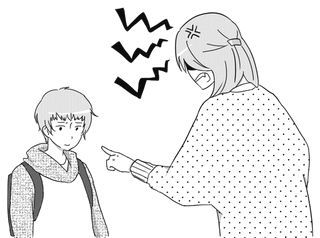
過去に受けた心の傷、果たせなかった希望、それに思いをはせてみましょう。
もし彼がよい環境にあったならば、あなた以上によい人間になったのかもしれない、と考えましょう。
これをよく知れば、夫に対する視点が変り、解決の糸口を見出すことが可能になります。
家庭のトラウマを保つことは、心ににごった水をためているようなものです。
長年使っていなかった水道の蛇口をひねると、きれいな水が出てくるまでしばらくの間、「錆びが混じった茶色い水」が出てきます。
まずあなた自身の人生においても、「蛇口をひねって茶色の水を出す」必要があるのです。
これは４章での「許すこと」についての項でさらに紹介します。
もし彼がよい環境にあったならば、あなた以上によい人間になったのかもしれない、と考えましょう。
これをよく知れば、夫に対する視点が変り、解決の糸口を見出すことが可能になります。
家庭のトラウマを保つことは、心ににごった水をためているようなものです。
長年使っていなかった水道の蛇口をひねると、きれいな水が出てくるまでしばらくの間、「錆びが混じった茶色い水」が出てきます。
まずあなた自身の人生においても、「蛇口をひねって茶色の水を出す」必要があるのです。
これは４章での「許すこと」についての項でさらに紹介します。
夫が妻に本当に望んでいるもの
近すぎるが故にわからない夫の心理。
愛を呼びさます大原則を知っていれば大丈夫。
その女性たちは、特別に知識があり教育レベルが高かったのでしょうか？
よく調べると、それらの女性たちに共通しているのは､自分の子どもや夫を変えようとはせず、ただ見守り、ひたすら信じたということです。
かつてＴ子さんは、ずっと夫との関わり方で悩んでいました。
夫がまったく口をきいてくれない、気難しくなり、とぼけたり聞いているのに聞いていないふりをする。と言うのです。
彼女は意思が強く、自分が正しいと思うものに妥協のない人間でした。
ですから、自然に夫にも自分の考え、主義を訴えてきました。
夫が仕事などで問題を抱えれば、彼女は「問題はひとりでには解決しない。こうするべきだ。」とアドバイスを繰り返しました。
しかし、彼はそれを実行に移したことは一度もありませんでした。
彼女は「問題を解決したくないの？じっとしていてもだめ。」と幾度もアドバイスをし「あなた、今私が何を話したか言ってみて！」と攻め寄りました。
愛を呼びさます大原則を知っていれば大丈夫。
夫は自分を見守り、信頼してほしい
歴史を作ってきた偉人の背後には、必ず女性の内助があります。その女性たちは、特別に知識があり教育レベルが高かったのでしょうか？
よく調べると、それらの女性たちに共通しているのは､自分の子どもや夫を変えようとはせず、ただ見守り、ひたすら信じたということです。
かつてＴ子さんは、ずっと夫との関わり方で悩んでいました。
夫がまったく口をきいてくれない、気難しくなり、とぼけたり聞いているのに聞いていないふりをする。と言うのです。
彼女は意思が強く、自分が正しいと思うものに妥協のない人間でした。
ですから、自然に夫にも自分の考え、主義を訴えてきました。
夫が仕事などで問題を抱えれば、彼女は「問題はひとりでには解決しない。こうするべきだ。」とアドバイスを繰り返しました。
しかし、彼はそれを実行に移したことは一度もありませんでした。
彼女は「問題を解決したくないの？じっとしていてもだめ。」と幾度もアドバイスをし「あなた、今私が何を話したか言ってみて！」と攻め寄りました。
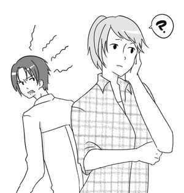
そのうちに夫は完全に押し黙り、完全に彼女に心を閉ざしたのです。
彼女の言葉には二度と耳を傾けることはせず、夫婦はどんどん緊迫した状況になっていきました。
実は彼女は「賞賛すること、感謝すること、励まし肯定する言葉」がどれほどの威力があるのかをまるで知らなかったのです。
何気ない感謝や思いやりの言葉に、夫がどれほど飢え乾いていたのか。これに気づくことなく歳月が過ぎていきました。
彼女が、このメソッドに出会って数ヵ月の後、彼女はこう言いました。
「今になって気がつきました。私は、ばかでした。夫は私のアドバイスがほしかったのではなく、ただ自分の心の痛みを理解して、励ましてほしかったのです。親身になって話を聞いてほしかった、寄り添ってほしかっただけだったんですね。」
彼らの結婚生活はその後、思いやりに満ちたものに変化しました。
すべての男性は、自分が受け入れられ、信頼されている。と感じたいのです。
男性が妻のアドバイスを求めるのは、妻に心から自分のことを理解されていると感じているときだけなのです。
第２章
９５％の夫婦が失敗してしまう原因
恋愛の賞味期限は２年、その後、二人はどう変るのか？
結婚後、どのカップルも一度は遭遇する「こんなはずではなかった！」のシナリオはここに問題があった。
結婚すれば幸せになれるのではないか？と、期待したのに現実はまるで違うのです。
当然のことですが、恋愛と結婚はまるでその本質が違います。
それを知らずにいると、新婚ムードから一変、もう終わりなのでは？と悲観してしまうのです。
心理学者のドロシー・テノフ博士は、恋愛という現象について長年、研究してきました。
多くの恋愛カップルについて追求検査した結果、恋愛感情の平均寿命は２年だ。という結論を出しました。
純白のウェディングドレスに身をつつみ、ハワイに新婚旅行に出かけ、新居に帰ってきたところまではバラ色でＯＫです。
さぁ、いよいよここからです。
結婚生活という現実にようこそ！
この後は予想だにしない「修行の毎日」が待っています。
また、恋愛の賞味期限が２年であることから、努力なくしては絶対に維持できない生活なのです。
幸せになれると信じて結婚したのに、やばい！なぜ、こんなことに？ こんなはずではなかった！
そもそも、自分にも相手にも人間である限り欠点はあるのです。
だから前途に必ずリスクがある。と覚悟していれば、おおかたの問題は当然起こるべくして起こったこと。と納得ができます。
実は、結婚とは単なる出発点であり、愛を習得するための「修行の始まり」なのです。
私の祖母の時代は、親が勝手に決めた人に嫁ぎました。
結婚式当日に、いきなり一生の伴侶と出くわす、まるで「賭け」みたいな結婚です。
夫婦は結婚後は「修行」と化す
結婚は人生の門出、幸せの始まり。確かにそうかもしれません。結婚すれば幸せになれるのではないか？と、期待したのに現実はまるで違うのです。
当然のことですが、恋愛と結婚はまるでその本質が違います。
それを知らずにいると、新婚ムードから一変、もう終わりなのでは？と悲観してしまうのです。
心理学者のドロシー・テノフ博士は、恋愛という現象について長年、研究してきました。
多くの恋愛カップルについて追求検査した結果、恋愛感情の平均寿命は２年だ。という結論を出しました。
純白のウェディングドレスに身をつつみ、ハワイに新婚旅行に出かけ、新居に帰ってきたところまではバラ色でＯＫです。
さぁ、いよいよここからです。
結婚生活という現実にようこそ！
この後は予想だにしない「修行の毎日」が待っています。
また、恋愛の賞味期限が２年であることから、努力なくしては絶対に維持できない生活なのです。
幸せになれると信じて結婚したのに、やばい！なぜ、こんなことに？ こんなはずではなかった！
そもそも、自分にも相手にも人間である限り欠点はあるのです。
だから前途に必ずリスクがある。と覚悟していれば、おおかたの問題は当然起こるべくして起こったこと。と納得ができます。
実は、結婚とは単なる出発点であり、愛を習得するための「修行の始まり」なのです。
私の祖母の時代は、親が勝手に決めた人に嫁ぎました。
結婚式当日に、いきなり一生の伴侶と出くわす、まるで「賭け」みたいな結婚です。
当時の女性は、好きでもない男性のところに嫁ぎ、子どもを７人、８人と育て、夫の家風に染まりながら苦労するのが習わしでした。
しかし、私は当時の祖母の姿に、なぜか腹のすわったどっしりとした世界を感じることができました。
昔の女性たちは、結婚生活を修行のごとく腹をくくって生きぬいたのでしょう。
しかし、結婚の本質は今の時代も変わるものではありません。
どちらにせよ、結婚生活は２、３年もすれば、愛情に変化が訪れ、毎日が行と化すのです。
恋愛と結婚は、まるで様相が違うことを心得なくてはなりません。
一般に男性は、付き会う女性は華やかで、気の利いたジョークが言えて、退屈しないセンスのいいタイプを選びたがります。
ところが、結婚してそばにおいておきたいのは、古いタイプ、古風な女性と相場が決まっているのです。
結婚は二人三脚のレース
離婚の原因や理由は、一般的には性格があわない、価値観が違いすぎる。などが多いのは事実です。しかしながら、性格が合わないとは言え、交際中には相手のそういう面を見てきたはずです。
ならば結婚すると二人の関係がどう変わってしまうのでしょうか？
恋愛中と結婚後では、二人の「立ち位置」ががらりと変化します。
交際中はお互いが向かい合って、じっと相手を観察している期間でもあり、けんかをして嫌いになれば、別れてしまうことができます。
あなたは「この人は自分に価値を与えてくれるのかしら？」と見定めると同時に、自分の欠点や悪いところは無意識に隠そうとします。
ところが、結婚後は体制が一変します。
籍を入れたとたん、二人は横並びになり、二人三脚でヨーイ、ドン！とゴールに向かってスタートするのです。
二人の足は「赤い糸」で縛られ、もう離れることはできません。
とにかく、恥も外聞もなく、必死で人生のレースを走り続けるのです。
伴侶の足が遅かったり、足がもつれたりして、しっかりとお互いの歩調を合わせないとうまく走れません。
子どもが生まれた後は、背中に子どもをおぶって走るので、さらに負担も大きくなり、この重荷に耐えていかなくてはなりません。
仲良く歩調を合わせて走るカップルは、息がぴったりです。
レース中に相手の走り方のくせや、ペースをしっかりとつかんで走る夫婦は、どんどん早く走れるので、まるでゲームのような感覚、快調に楽しんで走っています。
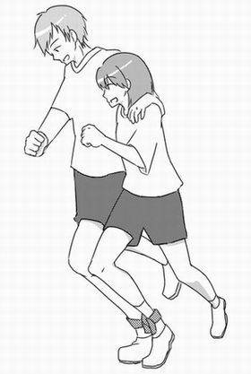
ところが、しばらく走るうちに、横でけんかしている夫婦がいます。
相手のペースが違う！と主張しているのです。
相手の走り方にケチをつけたり、もつれて転倒したりで、目もあてられません。
大声で怒鳴ったりしてもう大変です。
レースはハラハラしどうしです。
つまり結婚生活とは、同じ方向に向かって走り続けるレースです。
結婚とはちょうど、こんなイメージなのです。
これを知らないまま、結婚生活を迎えると、こんなはずではなかった。という結末になります。
相手のペースが違う！と主張しているのです。
相手の走り方にケチをつけたり、もつれて転倒したりで、目もあてられません。
大声で怒鳴ったりしてもう大変です。
レースはハラハラしどうしです。
つまり結婚生活とは、同じ方向に向かって走り続けるレースです。
結婚とはちょうど、こんなイメージなのです。
これを知らないまま、結婚生活を迎えると、こんなはずではなかった。という結末になります。
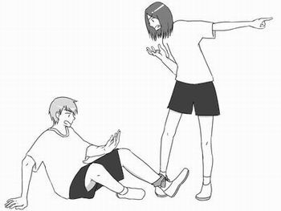
実際に、出生動向基本調査によれば見合い結婚は1930年代には70％であったのが1965年には50％になり2005年にはわずかに4％となっています。
見合い婚と恋愛婚について
一般的に見合い結婚の場合、離婚率ははるかに低くなり比率は恋愛結婚の４分の１以下となります。実際に、出生動向基本調査によれば見合い結婚は1930年代には70％であったのが1965年には50％になり2005年にはわずかに4％となっています。
実は近年の離婚率の増加はこの見合い婚が激減したことも大きな要因なのです。
なぜ見合い婚の離婚率が低いのか？その理由について考えてみましょう。
お見合いで出会うカップルの特徴は最初から結婚生活が前提です。
家族の生活設計をお互いに協力して営む。という契約で交際が始まるのが見合い婚です。
互いの感情が生まれる前にすでに大きな共有目的が先行するのです。
二人の性格や価値感の違いなどは未知数であることは承知のうえです。
まず「一緒に家庭を作るというビジョン」が原点になり、未来に難しいことがあってもとにかく自分が努力していこう・・・。とおぼろげにも決意をしながら一歩を踏み出します。
だからゼロからの積み上げです。
ゼロからなのでプラス現象が起こるのです。
さらにお互いの親族同士の葛藤が少ないのも大きな要素のひとつです。
また国際結婚など文化が違う場合なども互いの距離を最初から考慮にいれて結婚生活に入ります。
言葉の壁などがあり障害があって当たり前、お互いの不理解は当然なのではないか。という覚悟での結婚です。
それでもこれが恋愛結婚である場合、離婚する率は高いのです。
恋愛結婚は自分の好みの異性、つまり相手が好き。が前提になります。
とにかく一緒にいたい。離れられない。という「感情」が先行するのです。
もちろん相手を幸せにしたい、という気持もありますがその根底には「自分の欲望」が潜在的にあるのです。
お互いに共通のビジョンを持つ以前に「好きだ」という感情が動機になるので、最高に登りつめた地点で結婚する場合が多いのです。
感情ほど移ろいやすいものはありません。
「永遠に変らない」という保障はゼロです。
人間は時間と共に互いの距離が近くなり、愛が深まってなんでも分かり合えると思い込んでいます。
しかし現実は生活を共有し距離が縮まるほどに結婚生活は不安定になり、親密度が増すほど相手を傷つけたりすることが起こります。
不思議なことに大半の夫婦はお互い一緒にいる時間が長いのに自分は理解されていない。自分のことをわかってもらっていない。と不満をもつようになります。
見合い婚とは反対のマイナス現象が起こります。
「当然、理解してもらえるはずだ」が前提になってマイナス現象が起こるのです。
見合い婚のもうひとつの大きな特徴は、自分の選択肢を明け渡すことができている。つまり自分が家庭を築くため、無条件の愛の関係を覚悟する。ということになります。
母や祖母の時代は、特にこれが強く自分の事情や感情は後回しでした。
その分、感情の占める領域が少なく理性的で大人同士の関わり方ができるともいえるのです。
昨今の恋愛結婚はお互いが感情関係で成り立っており、これが少子化問題やできちゃった婚の増加にも拍車をかけています。
恋愛感情がないのに、結婚する。という見合い婚に対して違和感を感じる人も多いことでしょう。
そもそも恋愛感情は本人の努力とはまるで関係なく自動的に生じる衝動であり感情なのです。
本来、愛は育て作り上げていくものなのです。
努力して育てるという形をとるとき夫婦のリスクは最小限になります。
長い目で見たとき、人生の半分以上が結婚生活であることを考えてみれば、これは見過ごせないことではないでしょうか。
今再び、見合い婚は見直される時ではないかとも思えてきます。
今再び、見合い婚は見直される時ではないかとも思えてきます。
この世界に男と女が存在する本当の理由
ノーベル賞を取った偉い先生でも答えられないほど難解な質問の正解は？
神様の創造の裏舞台を知れば、なるほど！と思える深い事情がそこにあった。
すばらしいお話の後、番組の最後にひとりの小学生が、こんな質問をしたのです。
「先生、なぜこの世の中は男の人と女の人がいるのですか？」
「？．．．。」
「・・・・・・・・。」(￣Д￣；；
その番組は生番組だったのです。
結局、最後までその先生は的確な答えを言えず、５分間以上の沈黙が流れました。
それまでのお話が立派なものだっただけに、かなり番組がしらけてしまった、ということです。
ところで、どうしてこの世の中は男性と女性が存在するのでしょう。
あたりまえ、といえばあたりまえですが、よーく考えてみると不思議です。
広くこの宇宙を見渡したとき、低次元的なものから高次元的なものにいたるまで、この世界はプラスとマイナスがたがいに調和しています。
たとえば、人間は男性と女性、動物も雄と雌、植物もおしべとめしべ、物質の世界を見ても分子、原子が陽陰の関係、つまりプラス、マイナスのペアシステムで成り立っています。
その理由は宇宙の設計図がそうなっているからなのです。
実は森羅万象がペアシステムであることには深い意味が存在します。
あらためて考えてみましょう。
もちろん子孫を繁殖するシステムという見方もありますが、その奥にはもっと本質的な目的があるはずです。
聖書の冒頭には、誰もが知るエデンの園、アダムとイブの話があります。
それによると、神は天地創造ののち、最初の出現はアダム、まず男性を創造し、その後男性がひとりでいるのはよくない。とイブ（女性）をアダムの助け手として与えたのです。
聖書の表記には、神様はアダムのあばら骨からイブを創造したとあります。
神は、道を聞かずに、よく迷子になるアダムを心配し、いつの日かアダムに道案内をし、おっちょこちょいなアダムをよく世話し導いてくれる者が必要だと知っていた。
神はアダムがイチジクの葉を着古した後も、けっして自分で新しいイチジクの葉を買いに行かないだろう。
それゆえに、買ってあげる人が必要であった。
神はたぶん、アダムが自分で歯医者、医者、床屋の予約を取れないであろう事、それにおそらくアダムがごみの日を憶えないであろう事を知っていた。
神は男はけっして産みの苦しみにも耐えられないであろうことを知っていた。
エデンの園の管理人として、アダムは道具の置き場所を憶える事もないであろうことも知っていた。
ところで神はイブを創造すると、やおら、こんなことを、ささやきました。
「イブよ。お前に言っておきたいことがある。
お前より先に生まれたアダムのことだけど・・・。実は『男』と言うのはウソをつき、騙し、うぬぼれが強く、そしてお前になにかと苦労をかけるのだ。
しかしながら、お前より体も大きく、狩りや食料探しをしてくれ、それにお前の身体に合わせて、お前を身体的に満足させるようにも創ってやろう。
神様の創造の裏舞台を知れば、なるほど！と思える深い事情がそこにあった。
子どもが放った素朴な質問
あるアメリカのラジオ番組でノーベル賞を取ったある偉い先生が、子ども向けにお話をされました。すばらしいお話の後、番組の最後にひとりの小学生が、こんな質問をしたのです。
「先生、なぜこの世の中は男の人と女の人がいるのですか？」
「？．．．。」
「・・・・・・・・。」(￣Д￣；；
その番組は生番組だったのです。
結局、最後までその先生は的確な答えを言えず、５分間以上の沈黙が流れました。
それまでのお話が立派なものだっただけに、かなり番組がしらけてしまった、ということです。
ところで、どうしてこの世の中は男性と女性が存在するのでしょう。
あたりまえ、といえばあたりまえですが、よーく考えてみると不思議です。
広くこの宇宙を見渡したとき、低次元的なものから高次元的なものにいたるまで、この世界はプラスとマイナスがたがいに調和しています。
たとえば、人間は男性と女性、動物も雄と雌、植物もおしべとめしべ、物質の世界を見ても分子、原子が陽陰の関係、つまりプラス、マイナスのペアシステムで成り立っています。
その理由は宇宙の設計図がそうなっているからなのです。
実は森羅万象がペアシステムであることには深い意味が存在します。
あらためて考えてみましょう。
もちろん子孫を繁殖するシステムという見方もありますが、その奥にはもっと本質的な目的があるはずです。
聖書の冒頭には、誰もが知るエデンの園、アダムとイブの話があります。
それによると、神は天地創造ののち、最初の出現はアダム、まず男性を創造し、その後男性がひとりでいるのはよくない。とイブ（女性）をアダムの助け手として与えたのです。
聖書の表記には、神様はアダムのあばら骨からイブを創造したとあります。
エデンの園ではいったい、何が起こっていたのか？
神はアダムをお創りになった時、彼を見て「う～ん。もっと、別の人間が必要だなぁ～」と考えました。神は、道を聞かずに、よく迷子になるアダムを心配し、いつの日かアダムに道案内をし、おっちょこちょいなアダムをよく世話し導いてくれる者が必要だと知っていた。
神はアダムがイチジクの葉を着古した後も、けっして自分で新しいイチジクの葉を買いに行かないだろう。
それゆえに、買ってあげる人が必要であった。
神はたぶん、アダムが自分で歯医者、医者、床屋の予約を取れないであろう事、それにおそらくアダムがごみの日を憶えないであろう事を知っていた。
神は男はけっして産みの苦しみにも耐えられないであろうことを知っていた。
エデンの園の管理人として、アダムは道具の置き場所を憶える事もないであろうことも知っていた。
ところで神はイブを創造すると、やおら、こんなことを、ささやきました。
「イブよ。お前に言っておきたいことがある。
お前より先に生まれたアダムのことだけど・・・。実は『男』と言うのはウソをつき、騙し、うぬぼれが強く、そしてお前になにかと苦労をかけるのだ。
しかしながら、お前より体も大きく、狩りや食料探しをしてくれ、それにお前の身体に合わせて、お前を身体的に満足させるようにも創ってやろう。
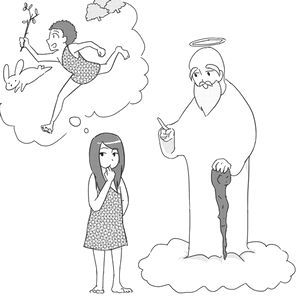
「えっマジで？」とイブは少し考えて 「・・・わかりました。神様、私はアダムを助けますよ。まかせておいて！」と答えます。
これはユーモア好きなアメリカ人の解釈（引用元 ahajoke）ではありますが、万能の神様は、男性の持つ特性を前提に女性を設計したという、まことに興味深い逸話です。
この宇宙がペアシステムである理由は、すべてのものはふたつの要素が関わり合って、より高い目的を果たすためなのです。
目が二つあるのもひとつのものをより立体的に見るためです。
そこにはあきらかに明確な設計図が存在しているということです。
また結婚は人間の風習から生まれたものではなく男女が夫婦になり、家族になることも同様、あらかじめ宇宙の設計図にプログラムされているのです。
アメリカではいったい、なにが起こっていたのか？
バラエティー番組の「世界の衝撃映像特集」などでよく見る無謀な挑戦者は、ほとんどが男性です。バイクで何台もの車を飛び越えたり、高いところからの決死のダイブ、一歩間違えたら命を落としかねない挑戦をするのはたいていが男性、賢い女性は、めったにこんな挑戦はしないものです。
世の中には、この種の「破天荒な亭主」にうんざりしている妻がたくさんいるのです。
しかし、過去、男たちが現実離れした夢を追いかけ続けてくれたおかげで、次々と新しい発見がなされ、科学技術も目覚しく進歩しました。
男女の違いが、また人生を豊かに彩っていることも事実です。
ところで、ジェンダーフリーという言葉をご存知ですか？
男女の違い、つまり男女のそれぞれの「・・・らしさ」は男女差別に通じるという思想です。
最初はアメリカのウーマンリブが発端でした。ところでこの運動が引き起こした結果として、「家庭では、子どもが親や社会の制度に素直に従うことができなくなった」という説があります。
イギリスの風刺家であるノースコート・パーキンソン氏も「ジェンダーフリーの考えによって、妻が夫に従うことをやめ、その過程で子どもたちをコントロールできなくなった」と言っています。
実は男性と女性はそもそも役割分担が違い、どちらが優れている、というのではありません。
その重要性においては全く同等で、あたかも鍵と錠のように、なくてはならない存在のゆえに、互いを尊重し調和するという考えに、私も賛成です。
それが自然なのにもかかわらず、男女の完全平等を主張することは宇宙法則からみても、破壊的な考えかたです。
宇宙が、プラスとマイナスの調和を土台に成り立っているように、家庭のなかで、母親が母親らしく子どもを育て、夫を陰で支える姿を見ながら子どもたちはあるべき女性像を学びます。
父親が父親らしく家族を導いて守ってあげれば、子どもはそのような姿が男性なのだ。というイメージを持つのです。
男の子は男の子らしく、女の子は女の子らしく成長することができます。
子どもは家庭の中で男女の関わり方も学ぶのです。
妻が自己を主張すればするほどに、子どもが扱いづらくなり、自分たちの幸せから遠のいて、離婚、再婚に拍車をかけています。
つまり、平等ということを履き違えた結果、アメリカの家庭崩壊は加速の一途をたどっています。
アメリカに離婚、同性愛者が急増している原因は、まさしく男性像、女性像のブレにあるといえます。
人間はみな、平等です。しかし本当の幸せは、互いが互いの役割分担を知り、その特性を認め合うことで得られるものなのです。
気が付いてみたら夫は遠い存在に・・・
あんなに愛し合っていた夫婦も知らないうちにどんどん心が遠ざかってしまう。
危険な要素はごく身近なところにあった。
気が付かなかったでは済まされない水面下に隠れた事情。
そこには、天地創造ののち、最初にアダムが出現し、その後、アダムの助け手としてイブが創造された、とあります。
まず、最初に神から愛を受けたのはアダムであり、次はイブです。
その後、最後に愛を受けるのが子どもたちです。
この流れからいくと愛の優先順位はまず、夫、次が妻、最後は子ども。となります。
この場合、一番最初に神様から愛を受けたアダムとしては、まず「自分が最優先、後回しはありえない」のです。
男は淋しがりやの甘えん坊、なにかと「かまってほしい」のです。
世界中の結婚の悲劇は、愛の秩序が狂って起こります。
以前、相談に来られたＡ子さんは「そういえば、子どもが生まれてから、少しづつ二人のずれが大きくなったような気がします。」と、当時を振り返りました。
彼女は年子をかかえ、ずっと子育てに、てんてこまいだったのです。
ふっと気づいたときには、夫は別の女性に夢中になっていたと言います。
これはどこでも、ありがちなパターンです。
子どもが生まれれば、子どもにかかるウエイトが大きくなり、夫婦の関心が子どもに集中します。
しかし、子どもに集中する度合いが大きいのは、当然お母さんになった妻のほうです。
夫も子どもが生まれれば当然、かわいがりますが、問題は、妻の「子育て優先」を「夫も理解してくれて当たり前」と勘違いしてしまうことです。
問題はその直後、起こるのです。
夫が妻に要求があるとき、その要求がどんどん後回しにされることです。
夫の気持ちに無関心になり、次第にぞんざいになり、生返事をしたり、育児の疲れから夫との性生活を拒否したりします。
これが火種になり、知らずにいると次第に緊迫した状況になることがあります。
危険な要素はごく身近なところにあった。
気が付かなかったでは済まされない水面下に隠れた事情。
子育て中のママに警告！夫は「最優先」を願っている。
先ほども紹介したように、旧約聖書の冒頭にある「創世記」という部分に、誰もが知っている文言があります。そこには、天地創造ののち、最初にアダムが出現し、その後、アダムの助け手としてイブが創造された、とあります。
まず、最初に神から愛を受けたのはアダムであり、次はイブです。
その後、最後に愛を受けるのが子どもたちです。
この流れからいくと愛の優先順位はまず、夫、次が妻、最後は子ども。となります。
この場合、一番最初に神様から愛を受けたアダムとしては、まず「自分が最優先、後回しはありえない」のです。
男は淋しがりやの甘えん坊、なにかと「かまってほしい」のです。
世界中の結婚の悲劇は、愛の秩序が狂って起こります。
以前、相談に来られたＡ子さんは「そういえば、子どもが生まれてから、少しづつ二人のずれが大きくなったような気がします。」と、当時を振り返りました。
彼女は年子をかかえ、ずっと子育てに、てんてこまいだったのです。
ふっと気づいたときには、夫は別の女性に夢中になっていたと言います。
これはどこでも、ありがちなパターンです。
子どもが生まれれば、子どもにかかるウエイトが大きくなり、夫婦の関心が子どもに集中します。
しかし、子どもに集中する度合いが大きいのは、当然お母さんになった妻のほうです。
夫も子どもが生まれれば当然、かわいがりますが、問題は、妻の「子育て優先」を「夫も理解してくれて当たり前」と勘違いしてしまうことです。
問題はその直後、起こるのです。
夫が妻に要求があるとき、その要求がどんどん後回しにされることです。
夫の気持ちに無関心になり、次第にぞんざいになり、生返事をしたり、育児の疲れから夫との性生活を拒否したりします。
これが火種になり、知らずにいると次第に緊迫した状況になることがあります。
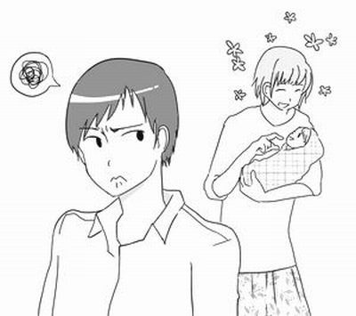
夫はときには、子どもを無視して、冷たくなり、あなたに横暴な態度をとるのです。
数年前、名古屋で、ある男性が、奥さんと子どもを殺害してしまったという痛ましい事件がありました。
信じられないことですが、その男性は「子どもに妻を奪われた」という理由で、二人を殺したというのです。
妻があまりに子育てに夢中になると、男性は自分の存在を否定されたように受け止め、抑えることができない喪失感を感じ、かつての夫とは思えないほどになります。
夫婦愛の法則から見たとき、男性としては、やせても枯れても「自分が一番だ」と深く信じているのです。
これまでの信頼をゼロにするキラーフレーズ！
思春期を迎えると、誰もが多かれ少なかれ様々な現実にぶつかります。子どもから大人への変化の中で、初恋や失恋の経験、受験や周りとの競争などを通して複雑な世界に入る時期です。
そんなとき、親から「お前ならできるよ、大丈夫！」とか、「お前がいてくれるだけでお母さんは嬉しい」
「間違ってもいいからやってごらん」のような言葉を受け取って育った子どもは、このような時期をたくましく生き抜いていけるのです。
このような親の言葉は、子どもの心に深く刻まれて、人生の局面でそれは大いに功を奏します。
さりげなく語られる親の言葉は、子どもに信念を植え付けます。
しかし、この影響は想像以上に大きく、一歩間違えれば、恐ろしい毒薬にもなっていきます。
下記にあるような「親の決めつけ言葉」は子どもの潜在意識に深く刻印されます。
●お前はどうしてそんなに頭が悪いの？
●お前のような子はお母さんの子どもじゃない
●どうせろくな子にならない
●中学生のくせに
●お前の顔なんか見たくない
●本当は子どもなんか欲しくなかったのよ
●お兄ちゃんはできるのに、お前は何をやらせてもだめだ
●すぐにふてくされるんだから
●言うことが聞けないなら、どこでも行ってしまえ
●お前は橋の下で拾ってきた
実は、このような言葉を言われて育った子どもは、反省心が薄く反発的になります。
また、
●親の人生観がしらけていると希望が持てなくなる
●期待しすぎると反発的になる
●しつけにムラがあり、叱るときに叱らないと自分勝手でわがままになる
など実に深刻です。
思春期にはこれが引き金となり、思いもよらない行動をして親を絶望させることもあります。
ところで先ほどの言葉をもう一度、注意深く読み返してみましょう。
これに似通った言葉が日常の夫婦の間でも交わされます。
「なんであなたとなんか結婚しちゃったんだろう」
「○○さんのだんな様は、先月昇格したみたいだけど、あなたはいつなの？」などの言葉は、致命的な凶器となる場合があるのです。
無防備に口にされる、これらの言葉は、これまでの信頼を一瞬にして崩してしまう恐ろしい言葉なのです。
夫を変えようとするとき、支払う代償
夫婦での理論闘争は１００％失敗する。
男性がアドバイスを喜ばない心理は、自分があたかも無能であるかのように受け止めてしまうことにある。
頭のいい女性が陥る失敗がこれです。
愛の法則から見たとき、夫を自分の好みに変えようとすることは「人権に踏み込む行為」となり、反発されるかもしれません。
もちろん夫は良くなりたいと願っています。
しかし、あくまでも自分の意思で変りたいのです。
夫婦が日ごろから、うまくいっていない場合は、この手法を持ち出せば持ち出すほどに、夫婦の心は遠ざかるでしょう。
私もさんざん、この方法で夫を説得しようとしましたが、成功したためしがありません。
夫婦にはこの理論闘争は禁物です。
そもそも夫は、あなたのアドバイスが欲しくて話し合っているのでもなく、正論が聞きたいわけでもありません。
かえって「俺のことは、何もわかっていない」と落胆し卑屈になるでしょう。
また、夫のなかの自尊心が傷つき、怒りが目覚めるだけです。
しかし、あなたはきっとこう考えるでしょう。
「いい人生を送るためには、あなたが変わっていかなきゃ、あなたのために忠告しているのに、なぜそれがわからないの？私がどんなに心配しているかわかっているの？やっぱり、この頑固者につける薬はない」
そうですよね？
でも、あえて言いますが、あなたの夫は正常です。
そもそも男性はそういうものなのです。
男性にとって、自由という領域を侵されるほどの苦痛はありません。
非常に憤り、あなたを徹底的に無視して、憂さ晴らしをするようになるでしょう。
彼は変るどころか、それとは逆の方向にいくのです。
男性がアドバイスを喜ばない心理は、自分があたかも無能であるかのように受け止めてしまうことにある。
妻のアドバイスや説得を受け入れようとしない夫の心理
時として妻は高度な理論で夫を説得しようとしますが、いかに正当性を主張しても、おそらく夫婦の心が近づくことはありません。頭のいい女性が陥る失敗がこれです。
愛の法則から見たとき、夫を自分の好みに変えようとすることは「人権に踏み込む行為」となり、反発されるかもしれません。
もちろん夫は良くなりたいと願っています。
しかし、あくまでも自分の意思で変りたいのです。
夫婦が日ごろから、うまくいっていない場合は、この手法を持ち出せば持ち出すほどに、夫婦の心は遠ざかるでしょう。
私もさんざん、この方法で夫を説得しようとしましたが、成功したためしがありません。
夫婦にはこの理論闘争は禁物です。
そもそも夫は、あなたのアドバイスが欲しくて話し合っているのでもなく、正論が聞きたいわけでもありません。
かえって「俺のことは、何もわかっていない」と落胆し卑屈になるでしょう。
また、夫のなかの自尊心が傷つき、怒りが目覚めるだけです。
しかし、あなたはきっとこう考えるでしょう。
「いい人生を送るためには、あなたが変わっていかなきゃ、あなたのために忠告しているのに、なぜそれがわからないの？私がどんなに心配しているかわかっているの？やっぱり、この頑固者につける薬はない」
そうですよね？
でも、あえて言いますが、あなたの夫は正常です。
そもそも男性はそういうものなのです。
男性にとって、自由という領域を侵されるほどの苦痛はありません。
非常に憤り、あなたを徹底的に無視して、憂さ晴らしをするようになるでしょう。
彼は変るどころか、それとは逆の方向にいくのです。
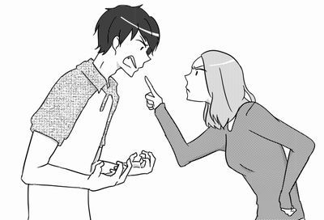
人間は（特に男性は）あくまでも自分の自由意志で行動したい、そのようにプログラムされているのです。
もしあなたがそれでも、彼を変えようとプッシュしたいのであれば、おおいに夫の反目を買うという覚悟が必要です。
人間は自分が認められ、信頼されたときのみ、自らの欠点や間違いを直そうと、腰を上げるのです。
あなたも夫も人間として完全ではありません。
お互いの長所、短所はコインの裏表のようなものです。
あなたの役目は、夫の長所に注目し、それを伸ばしてあげることです。
これは親子関係に当てはめてみればもっと明確です。
子どもはあなたが口やかましく正論をいったからといって素直にききましたか？
反発するか、いやいや従うことしかできないはずです。
子どもは親だけが頼りですから、ふてくされたりだだをこねたりするのが積の山です。
しかし、夫が自分に理解を示し、受け入れてくれる他の場所（女性）を見つければ、そこに絆を求めてしまうかもしれません。
男性が自ら変わりたいと思うのは自分のやり方で失敗をしたとき。
もうひとつは妻が夫の自由意志を尊重しているときなのです。
出会いの運を決めるもの
人生は出会いで決まる。
単なる偶然とはとらえることの出来ないものが人と人との出会い。
この世の中には７０億の人たちが住んでいます、。
単なる偶然とはとらえることの出来ないものが人と人との出会い。
運命の赤い糸に込められた秘密
人生に根拠のない出会いというものはありません。この世の中には７０億の人たちが住んでいます、。
その人たちのなかで唯一結ばれた夫と妻。
配偶者は「世界一特別な存在」という以外に、表現する言葉がないのです。
これほど神秘な出会いはなく、まさしく運命の赤い糸なのです。
あなたの夫は互いの先祖から「この男でなくては」と見込まれて選ばれた存在です。
そしてあなたは先祖からみたらこの上なく大切な、かわいいお嫁さんなのです。
配偶者は「世界一特別な存在」という以外に、表現する言葉がないのです。
これほど神秘な出会いはなく、まさしく運命の赤い糸なのです。
あなたの夫は互いの先祖から「この男でなくては」と見込まれて選ばれた存在です。
そしてあなたは先祖からみたらこの上なく大切な、かわいいお嫁さんなのです。
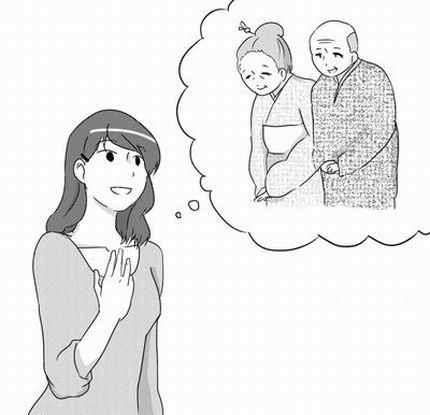
結婚は単なる男女二人の関係ではなく過去と未来を連結する数奇な出会いそのものです。
それでは夫婦の縁つまり「赤い糸」の背後にはどんな事情があるのでしょうか？
赤い糸の「赤」の意味は「人生の赤字決済」という意味でもあります。
つまり過去に先祖が作った赤字、つまり借金を返済するという宿題を持って夫婦が出会っているということです。
それでは夫婦の縁つまり「赤い糸」の背後にはどんな事情があるのでしょうか？
赤い糸の「赤」の意味は「人生の赤字決済」という意味でもあります。
つまり過去に先祖が作った赤字、つまり借金を返済するという宿題を持って夫婦が出会っているということです。
先祖も私たちと同様、愛情問題で苦しみ悩みぬいてきたに違いありません。
浮気や不倫など、家庭の絆を失ってしまった、敵味方の関係になった、また親子がひとつになれなかったなどの辛い過去があるのです。
大半の人たちは人生の中でやり残したことや悔いがあります。
この課題を血統的に私たちが背負うのです。
これを私たちの代で再現して解決させたいのです。
つまり身に覚えのない借金の清算がかかってくるようなものです。
たしかに理不尽なことですね。
しかし誰にでもルーツがある以上、この繋がりは避けて通ることはできません。
これは学校の入学試験と同じです。
愛の入学試験は人生の一番の難所です。
しかし先祖たちは子孫たちに結婚を通して必ず幸せになってほしいのです。
実は夫婦愛の構築は、最高の先祖供養につながります。
もちろんお寺にお布施を納めたり、お墓を新しく建てることも、大事な先祖供養です。
しかし夫婦愛の構築は、先祖から大変に喜ばれ、一気に運気をもらえるのです。
夫婦円満は、先祖をも笑顔にし、そのまま周りの人たちも幸せにします。
実際に先祖に感謝し続ける夫婦は、不幸になろうと思ってもなれないとも言われます。
つまり、子孫の分まで複数の嫁を先取りしてしまうので、子どもや孫に来る嫁の数が足りなくなるのです。
最近は、４０、５０歳を過ぎても結婚する気がない、いつまでも独身気分でいたい、と一人で暮らしている人たちが大変多くなっています。
実は、本人にもはっきりした自覚がなく「なぜか縁遠い」「いつまでも独身が気楽」などと片付けてしまいます。
引きこもりがち、仕事の意欲がない、なぜか結婚する気力がない、これは先祖の愛情関係などを調べるとその原因が浮かび上がってきます。
努力しても報われない人生の奥には、家系の事情が隠されているのです。
昔からよく「女が辛抱すれば家が発展する」と言われてきました。
しかしこのことは夫の女癖の悪さや不貞などを、心からゆるすという大きな犠牲の精神の上に成り立つことです。
悲しいことですが大半の場合は、嫉妬心や恨みが家系の風景を暗転させ、家系をさらに複雑にしてしまうのです。
実際に凶悪犯罪者など、際立った家系を調べてみると、あきらかに偶然とは思えない法則性を見ることが出来ます。
「彼の両親と初めて会ったとき、衝撃でした！お互いの挨拶が終わるやいなや、いきなり質問攻めに会い、まるで、面接官から入社の面接を受けているようでした」
私は、クライアントさんの事情を伺うとき、初めて相手のご両親や兄弟と会ったときの「第一印象」を質問することがあります。
あなたもその場面をよーく思い出してみましょう。
初対面で出会ったとき、しっくりといきましたか？
何か予感がありませんでしたか？
もし、相手のご家族に対して違和感や反発があったとしたら、それは時間とともに表面化します。
お互いの家族に対する否定的な感情や不安を抱えたまま、二人だけが幸せにやっていこうとしても、どこかでひずみが来ます。
相手の家族と仲良くすることは大事なこと、とわかっていても、いざとなるとなかなか難しいものです。
では、どうやって修復をするのか？
それはまず、機会を作って彼の家族に子どものころのエピソードなどを聞いたりするのです。
夫の両親や兄弟を遠ざけるのではなく、日ごろから交流をすることは大切なことです。
夫が家族との関係がうすく、しこりがあれば、なおさら、その努力が必要です。
それは「夫のことを調査する」ためではありません。
ただ、愛情を持って夫の「子ども時代を懐かしむ」ような気持ちが必要です。
とくにお姑さんは、息子の思い出話などは、喜んで話したがるものです。
浮気や不倫など、家庭の絆を失ってしまった、敵味方の関係になった、また親子がひとつになれなかったなどの辛い過去があるのです。
大半の人たちは人生の中でやり残したことや悔いがあります。
この課題を血統的に私たちが背負うのです。
これを私たちの代で再現して解決させたいのです。
つまり身に覚えのない借金の清算がかかってくるようなものです。
たしかに理不尽なことですね。
しかし誰にでもルーツがある以上、この繋がりは避けて通ることはできません。
これは学校の入学試験と同じです。
愛の入学試験は人生の一番の難所です。
しかし先祖たちは子孫たちに結婚を通して必ず幸せになってほしいのです。
実は夫婦愛の構築は、最高の先祖供養につながります。
もちろんお寺にお布施を納めたり、お墓を新しく建てることも、大事な先祖供養です。
しかし夫婦愛の構築は、先祖から大変に喜ばれ、一気に運気をもらえるのです。
夫婦円満は、先祖をも笑顔にし、そのまま周りの人たちも幸せにします。
実際に先祖に感謝し続ける夫婦は、不幸になろうと思ってもなれないとも言われます。
「なぜか縁がない・・・」家系に隠された本当の原因
何代か前の先祖たちが、複数の女性との浮気や離婚再婚を繰り返している場合 「嫁の在庫切れ」という現象が生じます。つまり、子孫の分まで複数の嫁を先取りしてしまうので、子どもや孫に来る嫁の数が足りなくなるのです。
最近は、４０、５０歳を過ぎても結婚する気がない、いつまでも独身気分でいたい、と一人で暮らしている人たちが大変多くなっています。
実は、本人にもはっきりした自覚がなく「なぜか縁遠い」「いつまでも独身が気楽」などと片付けてしまいます。
引きこもりがち、仕事の意欲がない、なぜか結婚する気力がない、これは先祖の愛情関係などを調べるとその原因が浮かび上がってきます。
努力しても報われない人生の奥には、家系の事情が隠されているのです。
昔からよく「女が辛抱すれば家が発展する」と言われてきました。
しかしこのことは夫の女癖の悪さや不貞などを、心からゆるすという大きな犠牲の精神の上に成り立つことです。
悲しいことですが大半の場合は、嫉妬心や恨みが家系の風景を暗転させ、家系をさらに複雑にしてしまうのです。
実際に凶悪犯罪者など、際立った家系を調べてみると、あきらかに偶然とは思えない法則性を見ることが出来ます。
夫の家族に対する違和感は、夫婦不和の予告
相談者のＢ子さんが、夫の家族と初めて会ったときの印象を話してくれました。「彼の両親と初めて会ったとき、衝撃でした！お互いの挨拶が終わるやいなや、いきなり質問攻めに会い、まるで、面接官から入社の面接を受けているようでした」
私は、クライアントさんの事情を伺うとき、初めて相手のご両親や兄弟と会ったときの「第一印象」を質問することがあります。
あなたもその場面をよーく思い出してみましょう。
初対面で出会ったとき、しっくりといきましたか？
何か予感がありませんでしたか？
もし、相手のご家族に対して違和感や反発があったとしたら、それは時間とともに表面化します。
お互いの家族に対する否定的な感情や不安を抱えたまま、二人だけが幸せにやっていこうとしても、どこかでひずみが来ます。
相手の家族と仲良くすることは大事なこと、とわかっていても、いざとなるとなかなか難しいものです。
では、どうやって修復をするのか？
それはまず、機会を作って彼の家族に子どものころのエピソードなどを聞いたりするのです。
夫の両親や兄弟を遠ざけるのではなく、日ごろから交流をすることは大切なことです。
夫が家族との関係がうすく、しこりがあれば、なおさら、その努力が必要です。
それは「夫のことを調査する」ためではありません。
ただ、愛情を持って夫の「子ども時代を懐かしむ」ような気持ちが必要です。
とくにお姑さんは、息子の思い出話などは、喜んで話したがるものです。
あなたが限りない関心と愛情を持って聞いてあげると、お姑さんはこれを「あなたの息子を大切に思っていますよ」というメッセージと受け止め、あなたに好感を持ちます。
これは家族との信頼関係を深めると同時に、夫の意外な一面を発見することにつながります。
日ごろから、この関係を築いている人は、これが功を奏して修復がとても容易になります。
夫婦を守る防波堤は、互いの親族との関係なのです。
これは家族との信頼関係を深めると同時に、夫の意外な一面を発見することにつながります。
日ごろから、この関係を築いている人は、これが功を奏して修復がとても容易になります。
夫婦を守る防波堤は、互いの親族との関係なのです。
第３章
妻が幸せ体質になれば夫婦は円満に
芸能界の離婚は「妻の成功」が原因？
芸能界では、仕事の成功とはうらはらに結婚においてはそうではない現実が。
華やか過ぎる世界の影には孤独で淋しい世界がある。
一方、芸能界のベストカップルと言われる三浦友和、百恵さん家庭における夫婦円満の秘密とは何かを知る。
俳優、モデル、歌手、スポーツ選手など、世の中で多くの人たちに注目されている人たちは、華やかで、あこがれの的です。
華やか過ぎる世界の影には孤独で淋しい世界がある。
一方、芸能界のベストカップルと言われる三浦友和、百恵さん家庭における夫婦円満の秘密とは何かを知る。
やせても枯れても妻の世話にはなりたくない夫
電車の中刷り広告などは、芸能界のうわさがめじろ押しです。俳優、モデル、歌手、スポーツ選手など、世の中で多くの人たちに注目されている人たちは、華やかで、あこがれの的です。
しかし実際には１、２年後、あっけなく離婚したりすることが多いようです。
多くのファンに囲まれて、すべてが申し分なくうまくいっているにもかかわらず、夫婦円満、あたたかい家庭には縁遠く私生活では淋しいものがあるようです。
おおむね、芸能界などは奥様が現役で収入も多く、時には夫よりも活躍していたりする場合があります。
妻が夫以上に、能力や実力を存分に発揮していることは、外側から見るほどいいことではないのです。
妻が経済的に自立していることは夫が自分の存在がなくても生きていけるという立場に立ちます。
つまり暗に自分が必要とされていないことが男性にとっては屈辱となります。
自分の価値をそがれたと感じ、卑屈になるのです。
男性には、もともと自分よりも弱いものを守りたい、安心させたいという騎士道精神が備わっています。
これを発揮したい、と渇望するのが男性の本質です。
愛する女性が自分を頼りにしていることで、男性の本質が目覚め、その持てる力、献身的な愛情が啓発されます。
これはちょうど、無邪気に自分だけを頼ってくる我が子を見ると、思わず守りたい！という母性本能にも似た衝動です。
男性は自分が必要とされ、少女のように自分に頼られてくることで男の本性が奮い立つのです。
一方、女性は、男性からたくましい守りと、献身的な愛情を受けることに酔いしれます。
夫婦は、その必要とされる部分を互いに充足させることで、幸福感に浸るという関係が理想的です。
小学校などで、男の子が爬虫類などで、女の子を驚かせたりする光景を見たことがあるでしょう。
男の子は女の子が、ヘビやクモなどをひどく怖がって逃げ回るのを見るのが大好きです。
男の子はそれを見て自分がより強いと感じ、女性をかわいらしく思うことがたまらないのです。
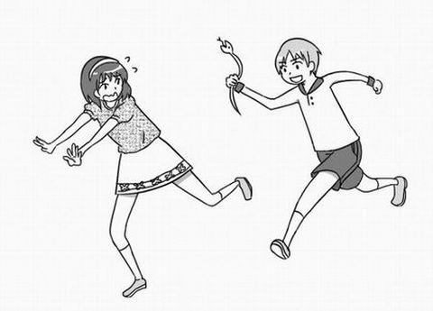
夫なくしては生きれない。夫なくしては幸せにはなれない。そんな妻であること。
これを夫は確信したいのです。
素直に夫に頼る本来のあなたの姿を見せる。これは大きな夫婦の変化をもたらし、男性の愛を呼び覚ますのです。
三浦友和、百恵さん夫婦の円満の秘訣
いつも芸能界のベストカップルの代表に取り上げられるのは三浦友和、百恵さん夫婦です。かつて歌謡界では、一世を風靡した大スターの百恵さんでしたが、未練なくあっさり芸能界を引退し、またごく自然な形で幸せいっぱいの家庭を築いています。
昭和、平成を通してこの人ほどの存在感を持つタレントはいない。とさえ思わせる理由は、明らかに彼女の生き方にあります。
以前、友和さんは、夫婦の逸話を綴った「相性」(小学館2011年11月発刊)という本を執筆しました。
その中で友和さんは、百恵さんとの相性のよさについては過去３０数年、幸せに暮らしているから勘違いではなさそうだ。
また、私たち夫婦は本当に喧嘩をしたことがない、など完璧なまでの円満夫婦の逸話を綴っています。
以前、百恵さんは「主婦ほど素敵な職業はない」という言葉をマスコミに語っています。
国民的な大スターでありながら、「たった一人の人からの愛を受けることが、最高の幸せである」ということを見せてくれた人です。
この夫婦を見て私は二人はよく似ている。という印象を受けました。
そもそも夫婦というのはまったく、よく似ているのです。
周りを見渡してみてもわかるように、夫婦やカップルというのは、お互いに共通点があって結ばれているのでほぼ、同じようなタイプが一緒になっているのです。
その人のもつ波動で引き合って、交際しその後結婚に発展します。
相手に重荷を与えず、自ら、愛を生み出すような、安堵を感じさせてくれる女性、幸福感を持って生きている女性に男性は惹かれます。
自分としての充実感、幸福感を持った人は、自然な形でそんなオーラを持った相手に出会えるのです。
反対に喪失感や淋しさを埋め合わせるために結婚をすれば、そういう相対関係で出会ってしまい、結婚生活が困難になりやすいともいえます。
仮に、かけ離れた理想を追いかけても、結局は自分のレベルの中での出会いで結ばれるようになっています。
結婚に対する夢や期待が大きいならば、それ相応のレベルアップをしなければなりません。
花と蝶を見ればわかる「幸せになる方法」
互いの「ないものねだり」は夫婦間の最大のストレス。
相手から愛を受け続けている人は「愛されモード」を持っている。
愛と幸せはごく自然に与えられる宇宙からのプレゼント。
私も昔、田舎でいろいろな昆虫をつかまえて遊んだ思い出があります。
しかし、一番美しい蝶は、なかなか簡単にはつかまらず、とてもすばしこく、高いところをひらひらと飛んでいってしまいます。
人間が幸せを追いかけるのも、これと似ています。
幸せを追いかけ、つかもうとすると、すばやくその手をすり抜けて、ひらひらと舞いあがり、そう簡単にはつかまらないのです。
ところが花を見てください。
花は手も足もなく、地に固定されています。自分から動くこともできないにもかかわらず、蝶のほうからやってきてくれます。
なんと蝶のほうから、わざわざ花を求めてやってくるのです。
幸せとは、本来そういうものなのです。
かつて、私も目的に向かって、がむしゃらに走った時期がありました。
ところがいったんは手に入れた！と思っても、何か物足りなく感じ、いつも充足感が得られないのです。
心にポッカリ空いた隙間を埋めようと、さらに空回りするような虚しさを感じた私は、あるときはっとしました。
実は、幸せや成功は「今、自分は幸せだなぁ～☆」と感じている人があたかも磁石のように自然に手に入れているものなのです。
いい出会いを引寄せている人は「すでに手にしていること」に感謝している人なのです。
心が満たされていない、足りない、という心があると、皮肉にもその「足りていない部分」を引き寄せてしまうのです。
自分が足らない部分にフォーカスしている限り、その足りない状況（不幸）を引寄せてしまう。ということです。
夫婦が離婚寸前、目の前が真っ暗、ここからなんとか抜け出したい！
これにばかり心がとらわれている限り、幸せは引き寄せられません。
もちろん、辛い気持ちで一杯、焦る気持ちもあるでしょう。
しかし、改めてよ～く自らを観察すれば、すでにすばらしい宝を天から授かっていることに気がつくでしょう。
相手から愛を受け続けている人は「愛されモード」を持っている。
愛と幸せはごく自然に与えられる宇宙からのプレゼント。
「足りないこと」にフォーカスすると・・・
蝶をつかまえようとしたことがありますか？私も昔、田舎でいろいろな昆虫をつかまえて遊んだ思い出があります。
しかし、一番美しい蝶は、なかなか簡単にはつかまらず、とてもすばしこく、高いところをひらひらと飛んでいってしまいます。
人間が幸せを追いかけるのも、これと似ています。
幸せを追いかけ、つかもうとすると、すばやくその手をすり抜けて、ひらひらと舞いあがり、そう簡単にはつかまらないのです。
ところが花を見てください。
花は手も足もなく、地に固定されています。自分から動くこともできないにもかかわらず、蝶のほうからやってきてくれます。
なんと蝶のほうから、わざわざ花を求めてやってくるのです。
幸せとは、本来そういうものなのです。
かつて、私も目的に向かって、がむしゃらに走った時期がありました。
ところがいったんは手に入れた！と思っても、何か物足りなく感じ、いつも充足感が得られないのです。
心にポッカリ空いた隙間を埋めようと、さらに空回りするような虚しさを感じた私は、あるときはっとしました。
実は、幸せや成功は「今、自分は幸せだなぁ～☆」と感じている人があたかも磁石のように自然に手に入れているものなのです。
いい出会いを引寄せている人は「すでに手にしていること」に感謝している人なのです。
心が満たされていない、足りない、という心があると、皮肉にもその「足りていない部分」を引き寄せてしまうのです。
自分が足らない部分にフォーカスしている限り、その足りない状況（不幸）を引寄せてしまう。ということです。
夫婦が離婚寸前、目の前が真っ暗、ここからなんとか抜け出したい！
これにばかり心がとらわれている限り、幸せは引き寄せられません。
もちろん、辛い気持ちで一杯、焦る気持ちもあるでしょう。
しかし、改めてよ～く自らを観察すれば、すでにすばらしい宝を天から授かっていることに気がつくでしょう。
フォーカスを変えて前向きになろうと思えば、いくらでもその要素が見つかります。
とりあえず自分も夫も健康、子どもが元気、食べる物にも事欠かず、飢えで死ぬこともなく、平和に生活ができる・・・。
生きている限りやれることはまだあります。
あなたの幸せになりたい気持を誰かが邪魔をしているわけではなく、自分が柵を作っていることに気が付くことが大切です。
「何か」を密かに待っている夫
夫は｢何か｣をじっと待っていることがあります。それは「昔の愛らしいあなた」を見たいと思っているのです。
「女性が持つ特権や武器」をご存知ですか？
これをまるで知らない女性が多いのです。
あなたが、その持てる武器を発揮したとたんに、夫が変化する。これは起こりうることです。
女性の武器とはなんでしょう？
当たり前のことのようですが、あなたの女らしい愛らしさ、笑顔、やさしさ、甘えること、やわらかな肉体、女性特有の美しさです。
また、子どものように夫に寄り添い、夫なしでは生きていけないと、素直になること。
実はこのような武器を磨こうともせず、錆びがついて、ほこりがかぶっているのです。
とかく家の外では人にはあれこれと気を使い、笑顔を振りまきながらも、家に帰ったとたんに、ブスっとしていませんか？
夫の帰りが遅いと不機嫌になったり、すぐに感情を損ない、ヒステリックに振舞っていませんか？
夫婦の性生活を拒否しておきながら、休日には家の仕事、家庭サービスを要求する、また、他の夫と比較して昇進、昇格にはっぱをかける。
これをしていませんか？
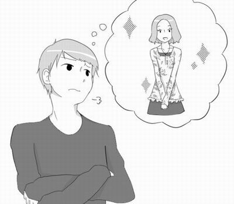
ちょっと、振り返ってみましょう。
夫は、耐えて、じっと待っているのかもしれないのです。
初めてあなたに出会ったときの、あの、かわいらしいころに戻ってくれたらなぁと、密かに心待ちしているかもしれないのです。
ある女性が言いました。
「いまさら、彼に対して素直な姿をみせるなんて、くやしい。自分が相手の気に入るようにふるまう理由はない。」と。
でも、考えてみてください。
もしあなたが修復を求めながらも、それはできないとするなら、夫に変ってもらうのを、ただ待つのでしょうか？
これではおそらく、ずっと何も起こらないでしょう。
実は、男性は女性以上にロマンチストなのです。
これはテストです。
夫から冷たくされたり、無視されたりすることは辛いことです。
しかしあなたが、笑顔を見せて明るく振舞ったとき、スイッチが入り何かが始まるかもしれないのです。
笑顔を見せることなら、今からできるかもしれませんね。
子どもが成長するように、夫婦も現状からさらに進化し成長しなくてはならないのです。
人生のマスターキーを手に入れる
｢神との対話｣の著作者、ニール・ドナルド・ウォルシュは「恐れ」とは「自分が必要であると思うものを、手に入れることができない」という思考からくる感情である。と定義しています。たとえば、人が「死」を恐れるのは「死」に対する無知、つまり「死の正体」がわからない。という不安からです。
愛に対してもまったく、同様です。
1）「私はどんな愛を本当に必要としているのか？」
2）「愛されることを体験できずにいることは可能なのだろうか？」
3）「愛が手に入らなかったらどうなってしまうのだろうか？」
この３つはあなたの生涯の課題です。
この愛の問題に答えを得ることができたら人生の悩みの９９％は解決すると言えるほどです。
愛には夫婦愛、親子愛、兄弟愛、異性愛、隣人愛の４つの方向性があります。
またその次元も、高次元的なものから低次元的なものへと広範囲にわたっています。
人類を抱くような博愛、見返りを一切求めない愛、犠牲と奉仕の愛のような崇高な愛もある一方で、自己中心的な愛、代償を求める愛、色欲的愛、堕落的な愛も存在します。
つまり、愛と言っても、あまりにもその領域が広く、それらを一言で「愛」と表現することはできません。
この中で次の３つの愛は、人生を幸せに生きるために不可欠なものです。
●博愛、人類愛（すべての人を無条件で愛する）
●親の愛（要求のない無償の愛）
●夫婦愛（相手のためだけに自分が存在している一対一の愛）
博愛や親の愛は、相手に何も要求せず一切の条件なく愛するという最高レベルの愛です。
夫婦もこの領域に入ると一生が安泰、充実した最高度の幸せを感じるのです。
これを手に入れた人は、思い煩うことなく自由な人生を受け取る資格があります。
ホテルには、それぞれの部屋の鍵がありますが、ホテルオーナーは、すべての部屋を開けることが出来るマスターキーを持っています。
「愛の法則を知ること」はちょうど「人生のマスターキー」を得ることを意味します。
この人生におけるマスターキーを手に入れれば、宇宙はあなたに味方をし応援します。
あらゆる環境の変化にぶれがなく、安定した自由な人生を生きることができるのです。
「本当に幸せな人」というのは、たまたま相手が良く、運がいいのではなく「法則性に則った行動をしている人」なのです。
問題は宇宙と周波数が合っているかです。
人間が法則を無視して、勝手なふるまいを犯しやすいのは、「愛に対する無知」から来る不安や恐怖、迷いからです。
幸せに生きている人はこの法則の主体、つまり神様とか人間をはるかに超えた超越者の存在に謙虚になることができる人です。
自分が宇宙から生かされている。と気がつくことは幸せの第1歩です。
この法則を知らずに生きることは、あたかも、運にまかせて行き当たりばったりのような、実に危なっかしい人生になってしまいます。
「本当に幸せな人」というのは、たまたま相手が良く、運がいいのではなく「法則性に則った行動をしている人」なのです。
問題は宇宙と周波数が合っているかです。
人間が法則を無視して、勝手なふるまいを犯しやすいのは、「愛に対する無知」から来る不安や恐怖、迷いからです。
幸せに生きている人はこの法則の主体、つまり神様とか人間をはるかに超えた超越者の存在に謙虚になることができる人です。
自分が宇宙から生かされている。と気がつくことは幸せの第1歩です。
この法則を知らずに生きることは、あたかも、運にまかせて行き当たりばったりのような、実に危なっかしい人生になってしまいます。
家庭の本来の設計図
家庭にはオリジナルの設計図がある。
設計図どおりでない限り本来の幸せを得ることができない理由
一人の男性が結婚を望むとしたら、世界で一番素敵な女性に違いないのです。
また女性も、世界で一番素敵な男性を相手に選ぶことでしょう。
愛する彼が世界一であり唯一の存在です。
また彼（彼女）のみがすべてであり、そのためなら地位や命さえも惜しまない。これが結婚にいたる男女の愛の基準です。
人間には「自分が一番に愛されたい」という本性がプログラミングされています。
家庭のなかで一番になる、これは世界でも自分が一番なんだ。ということにも値します。
またさらに人間は本能的に永遠の愛にあこがれを求めます。
カメレオンのようにめまぐるしく移ろう愛に感動を覚えたりはしません。
映画や小説なども永遠の愛を謳ったものがほとんどです。
ひとつの愛を求めてそれを全うする世界を賛美し、また自分たちも「そのように生きたい」とあこがれるのです。
世界中の人たちがそのように感じるのは、本来、愛がそのようにプログラムされているからなのです。
また結婚するとこんなことが起こります。
他人でありながらも、結婚後は喜びや悲しみ、人生のすべてを共有する関係、つまり運命共同体になります。
死んだのちも一緒にいたい、もし生まれ変わってもまた再び同じ相手と結婚したい。永遠にいたい。と心から思えたらそれが本物の夫婦と言えるはずです。
ところでこの関係には次の条件が大前提となります。
「夫婦の関係には絶対に他の異性が入り込む余地がない」ということです。
もしどちらかが不貞を犯してしまったらすべてがひっくり返ります。
夫婦が難しいのは一対一という絶対的な関係が崩れた時、天国から地獄に突き落とされるということです。
一度この問題が起これば信頼関係を元の形に回復するのはほとんど不可能に近いほどです。
私のまわりの人間関係をみていてつくづく思うことがあります。
それは、夫や妻や子供、身近な人を幸せにできない人が赤の他人を幸せにできるはずがないということです。
例えば、家族を大事にできず奥さんを苦しめている人が社長であれば、従業員を幸せにはできるわけがない。
家族愛というものはこの上ない、貴重な宝物です。
ある男性が自分の家族をさしおいて浮気相手と時間をすごしても心からの幸福感を感じることは絶対にありません。
たとえば夫が妻に素晴らしいプレゼントを渡すときもっと素晴らしいものを与えても、まだまだ与えていきたいという作用です。
もうこれぐらいで充分だとは思えず、もっとさらに与えたくなる衝動です。
これはお金や物だけではなく愛情や精神面でも同様です。
設計図どおりでない限り本来の幸せを得ることができない理由
家族はみんながナンバーワン
家庭には「本来の設計図」が存在します。一人の男性が結婚を望むとしたら、世界で一番素敵な女性に違いないのです。
また女性も、世界で一番素敵な男性を相手に選ぶことでしょう。
愛する彼が世界一であり唯一の存在です。
また彼（彼女）のみがすべてであり、そのためなら地位や命さえも惜しまない。これが結婚にいたる男女の愛の基準です。
人間には「自分が一番に愛されたい」という本性がプログラミングされています。
家庭のなかで一番になる、これは世界でも自分が一番なんだ。ということにも値します。
またさらに人間は本能的に永遠の愛にあこがれを求めます。
カメレオンのようにめまぐるしく移ろう愛に感動を覚えたりはしません。
映画や小説なども永遠の愛を謳ったものがほとんどです。
ひとつの愛を求めてそれを全うする世界を賛美し、また自分たちも「そのように生きたい」とあこがれるのです。
世界中の人たちがそのように感じるのは、本来、愛がそのようにプログラムされているからなのです。
また結婚するとこんなことが起こります。
他人でありながらも、結婚後は喜びや悲しみ、人生のすべてを共有する関係、つまり運命共同体になります。
死んだのちも一緒にいたい、もし生まれ変わってもまた再び同じ相手と結婚したい。永遠にいたい。と心から思えたらそれが本物の夫婦と言えるはずです。
ところでこの関係には次の条件が大前提となります。
「夫婦の関係には絶対に他の異性が入り込む余地がない」ということです。
もしどちらかが不貞を犯してしまったらすべてがひっくり返ります。
夫婦が難しいのは一対一という絶対的な関係が崩れた時、天国から地獄に突き落とされるということです。
一度この問題が起これば信頼関係を元の形に回復するのはほとんど不可能に近いほどです。
私のまわりの人間関係をみていてつくづく思うことがあります。
それは、夫や妻や子供、身近な人を幸せにできない人が赤の他人を幸せにできるはずがないということです。
例えば、家族を大事にできず奥さんを苦しめている人が社長であれば、従業員を幸せにはできるわけがない。
家族愛というものはこの上ない、貴重な宝物です。
ある男性が自分の家族をさしおいて浮気相手と時間をすごしても心からの幸福感を感じることは絶対にありません。
「夫婦愛の無限大作用」という不思議な作用
もうひとつは理想の夫婦の関係には無限大作用という作用が起こります。たとえば夫が妻に素晴らしいプレゼントを渡すときもっと素晴らしいものを与えても、まだまだ与えていきたいという作用です。
もうこれぐらいで充分だとは思えず、もっとさらに与えたくなる衝動です。
これはお金や物だけではなく愛情や精神面でも同様です。
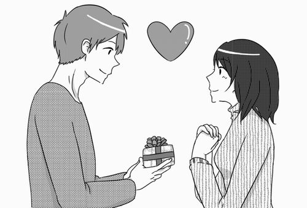
親は子どもの命を生かすためには自分の臓器を提供することもいとわないものです。
このように、家族は自分を犠牲にして相手を生かそうとする関係です。
人生の黒字決済といえるのが、この無限大作用です。
これは人生の預金残高がふくれ上がってさらに利息まで付くのです。
家系的に見たとき黒字人生となり、子々孫々、家が繁栄するというのはこの原理です。
これにまさる幸せはなく、家庭は幸せの宝庫となり子どもたちはそこからふんだんに愛を取り出しながら、今度は周りの人を愛することを学びます。
家庭はそれを結実するための土台なのです。
これは単なる理想論に過ぎない。これ以外の家族のあり方も存在する。という意見もあるかもしれません。
それではちょっと検証してみましょう。
簡単に理解する方法があります。
別の形での家庭のありかたを心のなかに思い浮かべてみるのです。
まず、そこに子どもたちの笑顔がありますか？
ご両親が笑顔になり、周りのみんなが笑顔になり、さらに先祖たちが笑顔になっているでしょうか？
実はあなたの本心の中にある心は「宇宙のものさし」なのです。
これはすべての人間の心に共通するもので宇宙の叡智と繋がっています。
あなたの本心の中心に位置する感情が、物事を判断する「精巧な計り」なのです。
これに目を背け、嘘をついて生きることは長い目でみたとき苦痛の多い人生になります。
これは単なる理想論ではなく、宇宙にプログラムされた本来の設計図であると同時に人間の宿命のようなものです。
これを勝ち取るまで人はさまよい続けます。
一時的には何か仮のもので置き換え満足しようとしますが、これは人間の本質をとらえて離さないので、結局そこに帰っていきます。
「男女が出会い夫婦になり本物の絆を結ぶこと」はあらかじめ宇宙の設計図にプログラムされており、それが機能してはじめて最高の幸せを発揮するようになっています。
夫婦が反目している限り宇宙は「設計図どおりではない」つまり機能不全と判断し、正常に機能するまで苦痛と悩みが続くのです。
このように、家族は自分を犠牲にして相手を生かそうとする関係です。
人生の黒字決済といえるのが、この無限大作用です。
これは人生の預金残高がふくれ上がってさらに利息まで付くのです。
家系的に見たとき黒字人生となり、子々孫々、家が繁栄するというのはこの原理です。
これにまさる幸せはなく、家庭は幸せの宝庫となり子どもたちはそこからふんだんに愛を取り出しながら、今度は周りの人を愛することを学びます。
家庭はそれを結実するための土台なのです。
これは単なる理想論に過ぎない。これ以外の家族のあり方も存在する。という意見もあるかもしれません。
それではちょっと検証してみましょう。
簡単に理解する方法があります。
別の形での家庭のありかたを心のなかに思い浮かべてみるのです。
まず、そこに子どもたちの笑顔がありますか？
ご両親が笑顔になり、周りのみんなが笑顔になり、さらに先祖たちが笑顔になっているでしょうか？
実はあなたの本心の中にある心は「宇宙のものさし」なのです。
これはすべての人間の心に共通するもので宇宙の叡智と繋がっています。
あなたの本心の中心に位置する感情が、物事を判断する「精巧な計り」なのです。
これに目を背け、嘘をついて生きることは長い目でみたとき苦痛の多い人生になります。
これは単なる理想論ではなく、宇宙にプログラムされた本来の設計図であると同時に人間の宿命のようなものです。
これを勝ち取るまで人はさまよい続けます。
一時的には何か仮のもので置き換え満足しようとしますが、これは人間の本質をとらえて離さないので、結局そこに帰っていきます。
「男女が出会い夫婦になり本物の絆を結ぶこと」はあらかじめ宇宙の設計図にプログラムされており、それが機能してはじめて最高の幸せを発揮するようになっています。
夫婦が反目している限り宇宙は「設計図どおりではない」つまり機能不全と判断し、正常に機能するまで苦痛と悩みが続くのです。
第４章
もし成功すれば何にも変えられないほどの価値が・・・
夫ともう一度手をつなぐための6つの扉
《第１の扉》 離婚を避けたいと思う理由を明確にする
動機は結果を出すための第１条件
これから学ぶ６つのステップは、早ければ３週間、少なくとも3ヶ月で夫婦に変化が現れるエキササイズです。これをひとつひとつ行動に移すことを通してあなたの意識が変り、次第に気持が軽くなります。
まず第1に「なぜ修復したいのか？」その理由や動機を、明確にしましょう。
これがはっきりしていないと夫の出方や態度で、すぐに心が折れてしまいます。
ここで一度立ち止まって考えてみましょう。
その理由は、たとえば・・・
• 夫をかけがえのない存在として、今も愛しているからでしょうか？
• 離婚に伴うお金の問題、親権などの問題の負担が大きく、その重荷に耐えられそうもないからでしょうか？
• 離婚のための煩雑で、膨大な法律的手続きなどを考えると頭が痛いからでしょうか？
• 子どもを抱えて自立する自信がないからでしょうか？
• 夫の身勝手な行動に納得できない（夫に浮気相手がいるなど）からでしょうか？
• 今まで築いてきたものを、一度の離婚ですべて失ってしまうという恐怖感からでしょうか？
• 離婚することに対して実感がなく、また現実味を感じられないからでしょうか？
• 一時の感情に流されて離婚をするのは、納得ができないからでしょうか？
• みんなに祝福されて、結婚したので、世間体が悪いからでしょうか？
• もし再婚しても、結局、同じことを繰り返すのではないか、という不安からでしょうか？
• 夫は運命の人かもしれないと思うからでしょうか？
• 自分にも非があり、悪いところがあった、と反省するからでしょうか？
• 夫を必要としており、再び愛されることに希望と期待を持ちたいからでしょうか？
• 単に意地を張ってしまっているからでしょうか？
• やり直せると、心のどこかで信じているからでしょうか？
• 自分たちの幸せを願い、心配してくれている親に申し訳ないからでしょうか？
いかがでしょう・・・。
これまで、こんなにも深く理由を考えてみたことはなかったかもしれませんね。
しかしこの理由がはっきりしていることはとても重要です。
これがあいまいならば、修復はあまり現実的ではない。と言えます。
ぼんやりとした動機からはぼんやりとした結果しか現れないのです 。
• 夫をかけがえのない存在として、今も愛しているからでしょうか？
• 離婚に伴うお金の問題、親権などの問題の負担が大きく、その重荷に耐えられそうもないからでしょうか？
• 離婚のための煩雑で、膨大な法律的手続きなどを考えると頭が痛いからでしょうか？
• 子どもを抱えて自立する自信がないからでしょうか？
• 夫の身勝手な行動に納得できない（夫に浮気相手がいるなど）からでしょうか？
• 今まで築いてきたものを、一度の離婚ですべて失ってしまうという恐怖感からでしょうか？
• 離婚することに対して実感がなく、また現実味を感じられないからでしょうか？
• 一時の感情に流されて離婚をするのは、納得ができないからでしょうか？
• みんなに祝福されて、結婚したので、世間体が悪いからでしょうか？
• もし再婚しても、結局、同じことを繰り返すのではないか、という不安からでしょうか？
• 夫は運命の人かもしれないと思うからでしょうか？
• 自分にも非があり、悪いところがあった、と反省するからでしょうか？
• 夫を必要としており、再び愛されることに希望と期待を持ちたいからでしょうか？
• 単に意地を張ってしまっているからでしょうか？
• やり直せると、心のどこかで信じているからでしょうか？
• 自分たちの幸せを願い、心配してくれている親に申し訳ないからでしょうか？
いかがでしょう・・・。
これまで、こんなにも深く理由を考えてみたことはなかったかもしれませんね。
しかしこの理由がはっきりしていることはとても重要です。
これがあいまいならば、修復はあまり現実的ではない。と言えます。
ぼんやりとした動機からはぼんやりとした結果しか現れないのです 。
この理由や動機を明確にすることは、目的地に地図を持って行くか、また手ぶらで行くかほどの違いが出てくるのです。
人間は本来、苦痛を避け、快楽を求める。という行動パターンをとります。
苦痛が最高度になったとき、初めて人間は本気を出すのです。
まずは「修復したい大きな理由」を５分間以上ひたすら、思いつくままに集中して書き出してみてください。
こんなことにどんな意味があるの？と思うかもしれません。
人間は本来、苦痛を避け、快楽を求める。という行動パターンをとります。
苦痛が最高度になったとき、初めて人間は本気を出すのです。
まずは「修復したい大きな理由」を５分間以上ひたすら、思いつくままに集中して書き出してみてください。
こんなことにどんな意味があるの？と思うかもしれません。
しかし実際にやってみるとき、これまでは見えてこなかった自分の本当の心が見えてきます。
夫に対する愛情の確認ができて、あらためて原点に帰ることができるのです。
種（動機）を蒔いておけば、その種が芽を出す(結果)ように、このプロセスは種を植え付けることと同様な働きをします。
「大きな理由」は行動を起こすための原動力となります。
《第２の扉》 愛されモードを取り戻す
なぜ自己イメージを高める必要があるのか
夫婦は、感情的になると普段は思ってもいないことが口をついて出てきます。「甲斐性なし」とか「稼ぎが少ない」などの言葉は、ときに男性のプライドと夫婦の絆をずたずたにします。
相手に向けたものがまともに全部、自分に跳ね返るという原理があります。
ふいに口をついて出るこのフレーズは、夫に向かうと同時に、あなた自身にも向けられてしまうのです。
夫婦は鏡なのです。
たぶんあなたは、後になってなぜあんなことを言ってしまったのだろう・・・と自分を責め、幾度も後悔したと思います。
ここでの問題は「夫があなたに対して持つイメージ」より「あなたがあなた自身に対して持つイメージ」がより深刻なのです。
実はこのような言葉を発するたびに、あなたの潜在意識のデータバンクはマイナス情報ばかりになります。
自分に対する自己イメージがどんどん下がり、いつしか「自分は幸せになれない」というマインドコントロールがなされてしまうのです。
思い返せば本当に悔しいことですね。でも、まだがっかりする必要はありません。
これからは、逆のマインドコントロールをすればいいのです。
これで終わるわけにはいきませんね。
今度はあなた自身の「自己イメージ」を反対の方向に書き換えていきましょう。
しばらく、夫との関係を思い悩むのは中断して、あなた自身にフォーカスしましょう。
あなたが植えつけてしまったこれまでの自己イメージを、反対に作り変えていけばいいのです。
イメージというものは一度、思い浮かべるとなぜかそう簡単には消えないのです。
それは、ちょうど目に焼き付けられる光景と同じです。
ひとつの実験をしてみましょう。
「ピンクの河童のことを考えてはいけません」と私があなたに指示をします。
しかし、あなたは考えまいとしてもすでに「ピンク色の河童」をイメージしていることでしょう？
「イメージ」と「してはいけません」はどっちが強いでしょう？
当然「イメージ」が勝ってしまいますね。
一度イメージしたものは、脳に焼きついて簡単に消えないのです。
この原理を利用するのです。
実際に、次の項で紹介するエキササイズをさっそくやってみましょう。
これを実践することで、夫だけでなく周囲の人との関係も激変します。
これは、自尊心に目覚めるエキササイズでもあり、自己のイメージを大きく書き換える効果と幸せ体質を得ることにも繋がります。
実践 愛されモードを作るためのエキササイズ
人の悪口ばかり言っている人がいるとします。あなたはそういう人を心から好きにはなれないでしょう。
他人を好きになれない人は、おそらく自分のことも好きになれないはずです。
逆に、あなたが心から自分を大事にし、自分を好きだ！と感じると、周りの人は、なぜかあなたを好きになるのです。
自分を好きなる。ということは、単にうぬぼれたりナルシストになることではなく、自分らしさ、その個性を自覚し自分にある長所を肯定し、自分の魅力に気づくことなのです。
まず、ノートを一冊用意しましょう。
このノートに自分の美点、長所、得意なこと、個性などをどんどん書き出してみましょう。
約５分間、思いつくままに書いてみるのです。
これをやるときは難しく考えてはいけません。
ただ、子どものような素直な心で、思いつくままに書きましょう。
過去、夫が自分をほめてくれた内容、頑張ってきたこと、努力していることでもいいです。
どんな小さなことでもいいですから、今までのあなたの人生を賛美するように、ギフトを与えるような気持ちで・・・。
・・・書き終わりましたか？
自分が書き出したものを一度、眺めてみましょう。
それらを日常の世界から離れて、純粋で素直な気持ちを持って読み返すのです。
そして、さらにそのイメージをさらにふくらませていくのです。
たとえば、あなたが着ているドレスの色や柄、靴のデザインなどをリアルに映像として描いていきます。
自分をどんな風に描こうがあなたの自由です。
そこではあなたは愛らしい笑顔でみんなに囲まれ、嬉しそうに生き生きとしています。
最初はなんだか、とっぴなことに思えるでしょう。
しかし、あなたは実際に自信満々の魅力的な女性でありドラマの主人公なのです。
あくまでも楽しみながら躍動感ある思いにひと時、浸りましょう。
ここで一番、大事なのは自己評価を勝手に下げてはいけません。
他人が自分をどう見ているか？とか、自分はどうせこの程度・・・などという既成概念を持ってイメージするとアウトです。
勝手な妄想でかまいません。
かつて歴史の中で、人々はその理想をイメージし、妄想のように追い求めてきた結果、夢のようなものをすべて現実化してきたのです。
まず、あなたの右側には神様、左側には悪魔がいると仮定しましょう。
神様は、あなたを最高に幸せにすることしか考えていません。
一方、悪魔はあなたを不幸にするために必死です。
悪魔は、少しでも過去にひきずり込もうと、巧妙にあなたをそそのかすでしょう。
彼はあなたがあきらめるのを見れば「やったー！」と躍り上がって大喜びをするのです。
悪魔の声の音量はかなり大きいので、よーく耳をすまさないと神様の「お前ならできるよ。信じているよ」のメッセージが聞こえないのです。
悪魔なんかにだまされてはいけません。
なめられないようにしましょう。
最初は明確なイメージができなくても、がっかりする必要はありません。
これが最初の一歩です。今までとは違う人生を選択するのですから、これもあらたな気付きとして、素直に受け止めましょう。
あなたがひとつひとつ小さな努力をして、自分の良さを発見し、自己イメージができれば、夫はあなたの女性らしい側面や長所に関心を持ち始めるでしょう。
妻が家の中で陰気で暗いオーラを発散し「私はどうせ不幸な女よ」と振舞うことは、百害あって一利なしです。
《第３の扉》 夫に対するイメージを変える（リフレーミング）
夫の欠点ばかりに焦点を当てていると・・・
人間は相手の欠点を見つけ出したとたん、次々とあら捜しをするという癖が、身に付いてしまうことがあります。この癖はとどまるところを知らず、どんどんと妄想がふくらんでいきます。
以前、私が住んでいた家の近所に、まさしくそのような奥さんがいました。
人との間にかわす彼女の会話といえば、ひとえに「グチ」「ねたみ」「あら捜し＆批判」しかなかったのです。
夫婦もあら捜しをする習慣ができてしまうと、もう一緒にいるだけでストレスです。
夫婦であら捜しをしている家庭では、子どもも同じ視点から、親を見るようになります。
実は、子どもの父親に対するイメージは「母親経由」なのです。
日ごろ夫に対する愚痴を子どもに聞かせている場合、それが子どもの父親像になってしまいます。
つまり、子どもは「お母さんの感情を通して、お父さんを評価する」のです。
夫には当然、表面に現れていない長所や価値があり、人にはない素晴らしい特性が、隠されているはずなのです。
ところが家族が自分の長所を認めないと、夫は短所を武器のように振り回すようになるので、まるでいいところはひとつもないように見えてしまうのです。
ところで、あら捜しをする癖というのは「探す力が強い」あるいは「よく人が見える」ということです。
いい方法があります。逆にいいところを「あら捜し」すればいいのです。
悪いところを探せるのなら、フォーカスを変えていいところを探す癖も身に付けられるはずです。
かつて二人の結婚のイメージは、ばら色だったかもしれません。
いつの間にか、色あせてグレーになり、黒ずんでしまったのです。
しかしそんなもののために、二人は一緒になったのではありません。
結婚は本来、そういうものではないはずです。
もし、あなたがまだ夫を愛しているのなら、今から実践するべきです。
彼は、この広い地球の中であなたを一生の伴侶として選んでくれた人です。
夫を大切に扱うことは自分を大切に扱うことと一緒です。
ですから、次のエキササイズは、誠意を持って真剣に行う必要があります。
これはあなたが女性であることの幸せを勝ち取り、結婚の原点に帰るためでもあるのです。
実践 夫に対する見方（イメージ）を変化させるエキササイズ
夫婦は時間とともに、目がかすんでお互いの長所がぼんやりとしか見えなくなるのです。大抵の夫婦は互いの距離が近すぎて正確に相手を見つめることが難しいのです。
自分が思い込んでいることが真実でないことに気付きましょう。
そもそも交際中から正確にお互いを見ていたなら今のような葛藤はなかったはずです。
実は、長所と短所はコインの裏表と同じで、判断基準が変れば、短所が長所になったりするのです。
これを通して、夫の新しいイメージが見えてくるかも知れません。
これをリフレーミング（書き換え）と言います。
このエキササイズを通し、あなたが視点を変えて夫を見れば、あなたを好きになってくれた当時の彼のイメージも一緒に呼び起こされます。
それと共に、本当の彼の優しさや長所を発見し、次第に短所はあまり問題ではなくなるのです。
よい感情も蘇ることでしょう。
さあ、ノートを用意して、夫の長所を思いつくままに５分間の間、書き出してみましょう。
たとえば、自分や子どもを養ってくれていること、家を修理する、力仕事をしてくれる、過去になにかを買ってくれたこと、危険から守ってくれたことなどを思い出しましょう。
また、夫がいてくれたおかげで、子どもたちにも出会えたのです。
男性的な体格や、特技とか、自分にはない彼の長所を思いつく限り書くのです。
この場合、女性のあなたにはないもの、またできないことがなにか？を考える機会です。
男性は元来、非常にロマンチストで、純粋で心根がいい人たちなのです。
これは実践してみて初めてわかることですが、かつてなかった夫のイメージや、感情を自分のなかに見つけ出すことができます。
ここでは客観的に夫を「一人の男性」として見つめることがポイントです。
やさしいピアノ曲などをＢＧＭにするとイメージが湧きやすくなります。
実は、長所と短所はコインの裏表と同じで、判断基準が変れば、短所が長所になったりするのです。
これを通して、夫の新しいイメージが見えてくるかも知れません。
これをリフレーミング（書き換え）と言います。
このエキササイズを通し、あなたが視点を変えて夫を見れば、あなたを好きになってくれた当時の彼のイメージも一緒に呼び起こされます。
それと共に、本当の彼の優しさや長所を発見し、次第に短所はあまり問題ではなくなるのです。
よい感情も蘇ることでしょう。
さあ、ノートを用意して、夫の長所を思いつくままに５分間の間、書き出してみましょう。
たとえば、自分や子どもを養ってくれていること、家を修理する、力仕事をしてくれる、過去になにかを買ってくれたこと、危険から守ってくれたことなどを思い出しましょう。
また、夫がいてくれたおかげで、子どもたちにも出会えたのです。
男性的な体格や、特技とか、自分にはない彼の長所を思いつく限り書くのです。
この場合、女性のあなたにはないもの、またできないことがなにか？を考える機会です。
男性は元来、非常にロマンチストで、純粋で心根がいい人たちなのです。
これは実践してみて初めてわかることですが、かつてなかった夫のイメージや、感情を自分のなかに見つけ出すことができます。
ここでは客観的に夫を「一人の男性」として見つめることがポイントです。
やさしいピアノ曲などをＢＧＭにするとイメージが湧きやすくなります。
・・・・・・書き終わりましたか？
書いたものを、自分の感情に素直になって読み返します。
さらに、しばらくの間、自分の心に現れた感情を味わうように、また観察するように眺めてみましょう。
このとき、どんな感情が起こっても、抵抗せず出てきた感情をひっくるめて受け入れてみることがポイントです。
実は感情というものは理由や必要があって、起こってくるものです。
ちょうど体に痛みや違和感を感じたとき、自分が病気であることがわかるように、感情というものが、人間のうそ偽りのない心の状態を知らせてくれるものです。
書いたものを、自分の感情に素直になって読み返します。
さらに、しばらくの間、自分の心に現れた感情を味わうように、また観察するように眺めてみましょう。
このとき、どんな感情が起こっても、抵抗せず出てきた感情をひっくるめて受け入れてみることがポイントです。
実は感情というものは理由や必要があって、起こってくるものです。
ちょうど体に痛みや違和感を感じたとき、自分が病気であることがわかるように、感情というものが、人間のうそ偽りのない心の状態を知らせてくれるものです。
さて、あなたの後ろにはあなた専用の悪魔がいて、巧みにあなたにささやきかけます。
夫をまっすぐに見つめようとするあなたに邪魔を入れてくるでしょう。
一方で神様は愛、寛容、発展、調和、ゆるし、犠牲の本体です。
悪魔の誘惑に負けて放り出してはいけません。
神様と悪魔は同時に存在することはできません。
神様と悪魔は同時に存在することはできません。
しかし悪魔がいなくなれば、平和な心情が自動的に流れ込んでくることを体験できます。
そうなるまでは心の葛藤が来るものです。
これを通して心の世界は自分の選択でいかようにも方向転換ができることが理解できるでしょう。
《第４の扉》 男性と女性の行動様式の違いを知る
実践 男性という生き物を観察するプロセス
男性と女性の違いに無知であることは弊害になります。男性と女性は実のところ、発想や気性、考え方、反応の仕方から価値観まで、その本質がまるで違うのです。
これは喜んでくれるだろう、と思ったのに、相手に期待通りの反応がなくてがっかりしたことはありませんか？
「とにかく夫とは相性が悪い」と悩んでいる女性は、実は「男性そのものを理解していない」ことがほとんどです。
それがわからないばかりに、異性というものを自分の物差しで計り、自分の価値観をおしつけると失敗します。
たとえば、
●女は安いものを必要がなくても買い、男は必要なものを借金して買う。
●女は若いころの写真を見せることを喜び、男はそれを恥ずかしいと思う。
●女は車をスタイルで選び、男は機能、性能で選ぶ。
●女は親密になると何でも話せる間柄になりたいと願い、男は何も話さなくても分かり合える間柄になりたいと願う。
これらを見ただけで男と女の感性の違い、行動様式の違いは興味深いものがあります。
また、女性は愛されることを望み、男性は評価されること、技能や能力を周りから認められ。賛美されることを望みます。
男性は強さ、男らしさ、決断力とかリーダーシップ、スキルなどをほめてもらいたいのです。
男性は女性の性的魅力や美しさよりも「ほめ言葉」に惹きつけられるということを知っていましたか？
それを心得ている女性が、夜の世界では男性をとりこにし、男性を離れられない状態にしてしまうのです。
夫が理解できない行動に出たときは、いちいち動揺してはいけません。
反対に彼から見たら、およそ女性たちは理解不可能な存在なのです。
夫が今度、あなたに非情な態度に出たら、どうするか・・・。
まず３回ほど深呼吸をして、神が設計した「男性という生き物」をじっと観察するのです。
「男性はこんなにも女性と違うのだ」ということを観察しましょう。
なるほど・・・。男はこんな風に反応をするのか。興味深いなぁ、不思議だなぁ、おもしろいなぁ、かわいいなぁ、いじらしいなぁ、とひたすら愛を持ってじっと観察するのです。
あなたは不思議に冷静になり、お母さんのような気持ちになっていくでしょう。
すると、彼は健気にいろいろ頑張ってきた、悩みながらもよくやっている。と気がつくことが増えてきます。
男性は自分を肯定的に見つめてもらえていると感情的に反発することがなくなります。
私が実際にこれを実践したときのお話です。
ある時、主人のお決まりの説教が始まり、私を攻撃してきました。
その時、すかさず「男性を観察するモード」で対応することにしました。
最初はじっと彼の表情やしぐさを観察するような気持で興味深く冷静にしていました。
次第に不思議な感情が湧きあがり気分が軽くなっていくのがわかりました。
それと同時になぜか無償に可笑しくなってしまったのです。
それと同時になぜか無償に可笑しくなってしまったのです。
これがきっかけになり、たとえ同じ状況を迎えても以前のように感情的にならなくなったのです。
それからもうひとつ、私がお勧めしたいのは彼の話を一度、じっくりと聞いてあげることです。
それからもうひとつ、私がお勧めしたいのは彼の話を一度、じっくりと聞いてあげることです。
自分の言い分は控えてただひたすら「聞き手」に徹するのです。
このようなことを通して夫はあなたに対して、信頼を寄せてくれるようになるのです。
しかし、「喪失した部分」というのはそう簡単に満たされるものではありません。
このようなことを通して夫はあなたに対して、信頼を寄せてくれるようになるのです。
「夫の避雷針になる」
人間にはだれでも「愛情タンク」という心のタンクがあり、自分が育った過程で、そのタンクが愛で満たされないとき、恋愛や友情などでその喪失部分を満たそうとします。しかし、「喪失した部分」というのはそう簡単に満たされるものではありません。
実はすぐれた能力や才能を持っている男性であればあるほど、それが満たされないことに苦しみ、焦燥感にさいなまれるのです。
過去に自分を評価してもらえず、否定された、批判を受けた・・・、このようなストレスが、結婚後、本格的に噴出することがあります。
夫婦の争いは、行き場のないジレンマやストレスを相手にぶつけているだけ、ということが多いのです。
夫婦は自分の一番醜いところ、欠点をさらけ出す相手なのですが、あまりに近すぎて、その要求がエスカレートしてしまうのです。
しかし、これはごく当たり前、普通のことです。
そのときに、「やってられるか！」と思ったらアウトです。
あなたの横で悪魔はチャンスを狙ってじっと待っているのです。
悪魔の作戦は大概いつも同じパターンなのですぐわかります。
見抜いて対応しましょう。
もし夫が日ごろ、ストレスをため不満をぶつけてきたらどうするか？
即座に自分に「私は避雷針だ」と暗示をかけましょう。
避雷針は雷を避けるところではなく、「雷を受けるため」にあるのです。
つまり避雷針のようにそれを受け止め地面に流し込むのです。
過去に自分を評価してもらえず、否定された、批判を受けた・・・、このようなストレスが、結婚後、本格的に噴出することがあります。
夫婦の争いは、行き場のないジレンマやストレスを相手にぶつけているだけ、ということが多いのです。
夫婦は自分の一番醜いところ、欠点をさらけ出す相手なのですが、あまりに近すぎて、その要求がエスカレートしてしまうのです。
しかし、これはごく当たり前、普通のことです。
そのときに、「やってられるか！」と思ったらアウトです。
あなたの横で悪魔はチャンスを狙ってじっと待っているのです。
悪魔の作戦は大概いつも同じパターンなのですぐわかります。
見抜いて対応しましょう。
もし夫が日ごろ、ストレスをため不満をぶつけてきたらどうするか？
即座に自分に「私は避雷針だ」と暗示をかけましょう。
避雷針は雷を避けるところではなく、「雷を受けるため」にあるのです。
つまり避雷針のようにそれを受け止め地面に流し込むのです。
避雷針があるから建物に被害が及ぶことがないのです。
これがわかっていれば、大概のことは素通りして、自分が背負い込むことがなくなります。
すると夫はあなたが憎くてやっているのではないと自覚して次第に冷静になるでしょう。
ただ聞いているふりをする。というのはNGです。
これがわかっていれば、大概のことは素通りして、自分が背負い込むことがなくなります。
すると夫はあなたが憎くてやっているのではないと自覚して次第に冷静になるでしょう。
ただ聞いているふりをする。というのはNGです。
あくまでも私は「夫の当たり場所」なのだ。という姿勢です。
これを心得ている女性は、年老いても夫婦は安泰です。
実際に、夫は妻にしか、ありのままの素顔を向けられないのです。
完璧な人間と結婚した人はいませんし、欠点や問題があるからこそ、お互い力を合わせるのです。
これを習得したカップルは、年を刻むごとに関係が深まり、互いがなくてはならない存在になっていくでしょう。
横暴な態度で、あなたの事情は無視、一方的に自分のことを押し付けたり、時にはずっと引きこもったりと、まるで反抗期の子どもみたいです。
実は、男性は「外には見せない顔」があり、家に帰って「本当の顔」を見せることで、緊張感を解いてバランスを取っています。
これは「退行現象」のようなものです。
家に帰ったとたんわがままになり、甘えられる身内に、理屈にあわないことをぶつけてきます。
自分より後から職場に入った人間が、自分を追い抜いて昇格した。
上司から理不尽な課題を突きつけられている。
こういったストレスを家庭で吐き出すのです。
ところが、あなたは対応しきれず、たびたび喧嘩になります。
そんな時、これが「退行現象」かもしれない。と知っておくことは大事なことです。
男性はこの傾向が強く、外では見せない面を家では臆面もなく見せるのですが、たいていの場合、本人はそれを自覚していません。
社会的地位のある人や、他人から尊敬を集めるような立場で威信を張って人と接している男性はこのギャップが大きく、家に帰るとまるで別人のようにふるまう人がいます。
それを見て夫は外づらばかりがよい、と妻は軽蔑します。
男性はあなたが思うほど、頑丈にはできていません。
夫はあなたに母親的なものを求めて、甘えてきているのです。
負いきれないストレスに「お母さん、助けて！」のメッセージとして受け止めましょう。
これで、問題を大きくせず、回避することができるのです。
夫のそういう態度がうっとうしく子どもじみている、と拒否し続けると、夫は居場所探しを始めるかもしれません。
もし、外に甘えることができる相手がいたら、男性はそこに心を許してしまうかもしれないのです。
強情を張ってつまらない思いをする前に、「大きな赤ちゃんが、おっぱいが欲しくて泣いているのね」と自分に言い聞かせてみてください。
うわの空で聞いたりするのではなく前節の「避雷針の例」のように肯定してすぐに素通りさせていくのです。
泣いている赤ん坊に「泣くな！」と言えば泣き止むどころかますます、大泣きされます。
コツは子どもをあやすのと一緒です。
夫は受け止めてもらえたとわかれば、あなたに無茶な要求をして苦しめたりはしなくなるでしょう。
これを通して夫は安息感を得て人間関係や仕事上のトラブルや、事故などからも守られるようにもなるのです。
これを心得ている女性は、年老いても夫婦は安泰です。
実際に、夫は妻にしか、ありのままの素顔を向けられないのです。
完璧な人間と結婚した人はいませんし、欠点や問題があるからこそ、お互い力を合わせるのです。
これを習得したカップルは、年を刻むごとに関係が深まり、互いがなくてはならない存在になっていくでしょう。
夫の赤ちゃんがえり
おそらくあなたの夫は身勝手で、あなたにめちゃくちゃな要求をしてくることがあります。横暴な態度で、あなたの事情は無視、一方的に自分のことを押し付けたり、時にはずっと引きこもったりと、まるで反抗期の子どもみたいです。
実は、男性は「外には見せない顔」があり、家に帰って「本当の顔」を見せることで、緊張感を解いてバランスを取っています。
これは「退行現象」のようなものです。
家に帰ったとたんわがままになり、甘えられる身内に、理屈にあわないことをぶつけてきます。
自分より後から職場に入った人間が、自分を追い抜いて昇格した。
上司から理不尽な課題を突きつけられている。
こういったストレスを家庭で吐き出すのです。
ところが、あなたは対応しきれず、たびたび喧嘩になります。
そんな時、これが「退行現象」かもしれない。と知っておくことは大事なことです。
男性はこの傾向が強く、外では見せない面を家では臆面もなく見せるのですが、たいていの場合、本人はそれを自覚していません。
社会的地位のある人や、他人から尊敬を集めるような立場で威信を張って人と接している男性はこのギャップが大きく、家に帰るとまるで別人のようにふるまう人がいます。
それを見て夫は外づらばかりがよい、と妻は軽蔑します。
男性はあなたが思うほど、頑丈にはできていません。
夫はあなたに母親的なものを求めて、甘えてきているのです。
負いきれないストレスに「お母さん、助けて！」のメッセージとして受け止めましょう。
これで、問題を大きくせず、回避することができるのです。
夫のそういう態度がうっとうしく子どもじみている、と拒否し続けると、夫は居場所探しを始めるかもしれません。
もし、外に甘えることができる相手がいたら、男性はそこに心を許してしまうかもしれないのです。
強情を張ってつまらない思いをする前に、「大きな赤ちゃんが、おっぱいが欲しくて泣いているのね」と自分に言い聞かせてみてください。
うわの空で聞いたりするのではなく前節の「避雷針の例」のように肯定してすぐに素通りさせていくのです。
泣いている赤ん坊に「泣くな！」と言えば泣き止むどころかますます、大泣きされます。
コツは子どもをあやすのと一緒です。
夫は受け止めてもらえたとわかれば、あなたに無茶な要求をして苦しめたりはしなくなるでしょう。
これを通して夫は安息感を得て人間関係や仕事上のトラブルや、事故などからも守られるようにもなるのです。
《第５の扉》 家系に秘められた「人生に働く不思議な力」
家系との深いかかわりを知る
第１章では私たちのルーツに夫婦問題の原因があり先祖の問題が夫婦に表れる。と言いました。私たちの先祖のことを考えてみましょう。
生前、充分に幸せな人生を生きた人と、さんざん苦労した挙句、報われずに恨みを残した人では、どちらが多いのでしょうか？
実際はほとんどの先祖は人生に悔いを残しています。
さかのぼって家系を見ると先祖の生き方がそのまま、夫婦問題に現れていることを否定できません。
家系を視野に入れて家族を眺めるとこれまで地上から見ていた風景をまるで飛行機に乗って上空から見ているような気持になります。
今まで見えなかったものがパノラマのように見えてくるのです。
このときについ犯してしまう失敗があります。
私が不幸なのはこの先祖のせいだ！とばかりにその人たちを犯人にしてしまうのです。
先祖を敵に回してはいけません。
彼らも人生に無知だったばかりに苦しみながら生きてきたのです。
我々以上に後悔しているのです。
実は、先祖は、ひっくるめて私たちの親に該当します。
ですから、子孫たちの人生や愛情関係を、かげで必死に応援しているのです。
先祖には感謝の気持だけを持つことです。
感謝することで愛は流れてくるようになっています。
Ｎ子さんは、この話を聞いて、さっそく先祖の墓まいりに行きました。
夫の両親を連れて感謝とともに、夫婦の円満を先祖に祈ったのです。
するとその翌日、夫が浮気相手と別れたというのです。
実際には、こんな信じられないようなことがよく起こるのです。
今この地上に生きている人たちも１００年もすればほぼ全員が先祖になります。
自分の意思でこの世に生まれてきた人はひとりもいませんし、人間が死ぬのも自分の意思ではありません。
しかし死はすべての人に平等に与えられているのです。
死後の世界があるかないかは、ここでは論じませんが、人間は死を前にしたとき、いやでも自分がどのように生きてきたか？を振り返ることになります。
嘘偽りなく、自分が納得できる人生を選択するべきであり、死を目前にすれば、自分がどう生きたかが、自分にすべて返ってくるのです。
実践 奇跡が起こる「墓参り」
先祖を調べるとなぜか不思議なほど運勢がアップします。急に転機が訪れ、思わぬ修復のきっかけに恵まれることがあります。
夫や自分の曽祖父母あるいは祖父母ぐらいの代などで、過去にどんなことが起こっているのかを調べると、夫婦問題の糸口が見つかることがあります。
もうひとつの私がすすめているのはお墓参りに行くことです。
これがきっかけで過去、奇跡が起こった経緯が数多くあります。
両家のお墓に行くことがベストですが、遠方の場合は夫婦のどちらか近くのお墓参りに行くことです。
通常お墓参りはめったに行きません。
ところが、たまに来てくれたと思って喜んでいたら「息子の受験がうまくいきますように」など勝手なお願いだけをして帰ってしまうので先祖はとても淋しい思いをします。
そこで捧げる祈りのポイントは
• 感謝の言葉（守ってくれていること。家族が健康であることなど）
• 先祖の過去の罪をとりなし、人知れず苦労してきたことをねぎらう。
• 夫婦が縁あって結ばれ、お互いの家系に責任があるのでどんな困難があっても、夫婦として責任を果たしていけるよう見守ってほしい。
の３つです。
また、家でもお花を仏壇に飾る、無事に一日を終えたことに感謝するなど、小さなことを心がけることが大切です。
これまで涙ぐましい苦労をしてくれた先祖のおかげで血統が残り自分が生まれたのです。
ですから先祖がいつも自分たちを守ってくれている。自分が生まれて生きていることも先祖のおかげ、と感謝する気持が第１番です。
ですから先祖がいつも自分たちを守ってくれている。自分が生まれて生きていることも先祖のおかげ、と感謝する気持が第１番です。
自分のルーツに感謝することで自分のエゴから解放され、自分を縛り付けているものにも気がつくことができます。
これは自分の潜在意識のパワーアップにもなります。
昨今は、祖父母の名前すら知らない若者が増えていますが、現代に生きる我々も、互いの先祖を尊敬し、大切にする習慣を見直していくことをお勧めします。
また知っている範囲で名前を呼んであげることはとても喜ばれます。
誰だって自分のことを忘れ去られてしまうのは淋しいものです。
先祖は久々に、自分の名前を呼ばれたら嬉しくて元気になり、その嬉しさで、今度は子孫にパワーを送ってくれるのです。
このようなことをきっかけにして家庭に思わぬ運気が来ます。
《第６の扉》 ゆるすことと、後悔しない生き方について
ゆるす心は、世界一の特効薬
夫婦の関係が悪いというだけで、毎日の生活が実につまらないものになってしまいます。年間を通しての祝い事や行事がすべてギクシャクします。
心あたたまるクリスマス、わくわくするホリデーも、重苦しく、すべてが空虚でうつろです。
子どもたちもその犠牲者となり、やりきれない気分になるのです。
家族が仲良く、和気藹々としていたら今頃、どんなに楽しい気持ちでいられただろうか、とつくづくなさけなくなります。
とにかく、こんな状態から早くぬけだしたいものです。
実は、今すぐこの苦しみから一瞬で抜け出す方法がひとつだけあります。
一番手っ取り早く、即効的に事態を変える方法です。
「ゆるせない！ 絶対にゆるせない！ 死んでもゆるせない」と思っていることを、今、思い切ってゆるしてしまうことです。
傷つく言葉、ゆるせない行い、裏切り、とてもゆるせない、当然です。 それはそうです。
しかし、そう思えば思うほど、問題はこじれて、複雑になります。
そして苦しくなるのは自分です。
相手との壁をつくるだけでなく、ゆるせないと執着することで、自分自身の心情が重苦しくなるのです。
実際、恨みや嫉妬は健康を害し、身体にも深刻な悪影響を及ぼすのです。
過去は過ぎてしまったこと、それにしがみついても解決の糸口は掴めないでしょう。
夫婦関係を本気で改善させたいと思うなら、一瞬の勇気と思い切りがあれば可能です。
唯一の解決法は今の決断と思考を動かすことだけです。
思い切って最後の扉を開けるのです。
神様は、扉の向こうには何があるかを知っています。
悪魔が一番恐れる人は「人を愛する人」と「人をゆるす人」です。
このタイプは悪魔が手ごわくて近づくことができません。
悪魔が存在する余地がないのです。
ゆるしの扉を開ける人は「自分」です。
扉を開けたとたん、心に住みついている悪魔は苦しくて去ってしまいます。
「やられた！」とばかりにしっぽを巻いて逃げていくでしょう。
悪魔が離れたとたん、自分の間違いを悟り思わぬ心境の変化を体験します。
相手に直接、謝ってゆるしを請うことは、しなくてもいいのです。
思い切って「無条件にゆるそう」と思った瞬間、思わぬ気づきが与えられるのです。
また、人はゆるしてくれる相手に対しては抵抗したり、攻撃することはしないものです。
実はそういう瞬間は、あるとき突然、訪れるものです。
かつてＳ子さんの夫は浮気をしていました。
夫の裏切り行為を知ったとき、彼女は彼を恨み、生涯、ゆるさないだろう。ゆるすなんて１００％不可能だ。と苦しみ続けたのです。
しかしこのプロセスを学ぶ過程でふっと「自分も不完全だ、欠点だらけの自分なのだ」ということに気が付いたのです。
夫も同じように苦しんでいる。それを責め続けている自分が、いたたまれないほど恥ずかしく惨めになったのです。
するとＳ子さんの心の中に「ゆるそう！」という思いが湧きました。
次の瞬間にあたたかいものが流れ込んで、まったく別の自分がいることに気がついたそうです。
長くて重く苦しい胸のつかえが取れたような瞬間です。
実はゆるしの心は、一瞬で氷を溶かしてしまう魔法の心です。
奇跡が起こり、一番の近道を行くことができるのです。
実践 心の蛇口をひねって汚れを出す
第１章では、自分の中にある親子関係のトラウマ、自分の心のなかにある「汚れた水を出し切る」というお話をしました。あなたも心の蛇口をひねって「汚れた水を出す必要」があります。
まずは夫より先に家族に対するしこりを溶かし、ゆるしの心を持つことが第１番です。
これは夫に対するゆるしの門を開けることに繋がります。
この世に生まれて最初の人間関係は親との関係です。
親子問題はちょうど、最初のボタンの掛け違いのようなものです。
このかけ直しができた人は実にラッキーです。
「ゆるす心」はまず「親をゆるす」ことで心の通りがよくなります。
これが第1歩です。
これができれば今度は夫に対しての実践ができるのです。
大ベストセラーである「鏡の法則」（野口喜則著、総合法令出版）という本をご存知ですか？
実はこの本をこれまで多くの人たちが実践した結果、起こりそうもないことが起こって人生が開けた。長年の夢が叶った。という現象が次々と起こりました。
これまでマスコミなどにも取り上げられ、とても話題になった本です。
「鏡の法則」では、人生の問題の背後にある親子間でのゆるせない思いを解決する方法をわかりやすくステップバイステップで紹介しています。
インターネットや書店などで入手して、そのまま実践することをお勧めします。
「鏡の法則」は読みやすいだけでなく、ストーリーが感動的です。
心が洗われるような気持ちになり、しかも誰もがすぐに実践できるように簡潔にまとめられています。
「鏡の法則」を読んでも実践せずに本棚に戻している人は、再び、それを取り出して具体的に実践してみましょう。
どんなに素晴らしい知識であっても実践が伴わない知識は単なる、知識に過ぎません。
このプロセスを、心を込めて実践することで、あなたの人生の浄化がなされ、過去の心の淀みを洗い流すことができることでしょう。
以下は「鏡の法則のエピソード」の要約をまとめたものです。
鏡の法則の本を読むことをお勧めしますが、これを読んでそのまま実践してもいいでしょう。
▼△▼△▼△▼△▼△▼△▼△▼△▼△▼△▼△▼△▼△▼△▼△▼△▼△▼▼△
【鏡の法則の要約】
Ａ子（主婦、41 歳）には悩みがあった。
小学校５年生になる息子が、学校でいじめられているようなのだ。
友達から仲間はずれにされたり、何かあると悪者扱いされたりしている様子を知ってショックを受ける。
悩みが頂点にきたとき、Ａ子は夫の昔の知り合いのカウンセラーのＢ氏に出会う。
夫はＢ氏がＡ子の問題を解決してくれるのではないかと、心理学に詳しいＢ氏をＡ子に紹介したのだ。
Ａ子は電話で、息子がいじめにあっていることをＢ氏に告げる。
Ｂ氏は息子が責められているということは、Ａ子が、誰か身近な人を責めていることと関係がある。と説明する。
自分の大切な子どもが、人から責められているのは、Ａ子が『大切にすべき人を、責めてしまっている』という ことの表れ。つまり自分の内面をちょうど鏡のように映しているのだ。と説明する。
Ａ子は自分はそういえば、確かに自分は父を以前から嫌ってきたかもしれない、そうＢ氏に告げた。
Ｂ氏は以下のことを今から実践するようＡ子に指導する。
●親に対する恨みつらみをすべて文章にして、ぶつけるように容赦なく紙に書く。
親に対する『ゆるせない』 という思いを『バカヤロー』とか『コノヤロー』とか怒りをぶつけるような文章で、気が済むまで存分に紙に書きなぐる。
●それが終わったら、『親に感謝できること』というタイトルを書いて、親に対して感謝できることを書いていく。
●次に、別のページに『親に謝りたいこと』というタイトルを書いて謝りたいことを書く。
●最後は親に電話をかけて、感謝の言葉と、謝る言葉を伝える。
そのとき、感情は伴わなくていいからノートに書いた『感謝できること』と『謝りたいこと』を、読んで伝えるだけでもいい。
Ａ子は勇気を出してこれを実践する。今まで父に対して言えずに来たことを謝り、感謝していることをなんとか伝える。
すぐに母に電話を代わるが、母はそばで、父の様子を見て驚いている。
実は父が突然泣き出したのである。
電話での娘からの思いがけない感謝の言葉が嬉しくて、思わずその場に泣き崩れてしまったのだ。
今初めてＡ子は父の一面だけにとらわれて、別の面に目を向けようとはしなかったこと、これまで、父の愛、父の弱さ、父の不器用さが見えていなかったことを知った。
Ａ子はこの出来事を通して実に様々なことに気がつくのだ。
その当日、不思議なことが起こる。
夕方、息子がうれしそうに学校から帰ってきて、Ａ子にこんな話をする。
いつも自分をいじめているＣ君が公園で、「いつも、いじめててごめんな」と言ってくれたのだ。
Ａ子は「そうだったの！」と言いながらも、まるで奇跡でも体験しているような気持ちになった。
本書では、さらに感動的なやりとりが続きますが、ここでは省略します。
第５章
夫婦の修復を成功させる賢い習慣と考え方
夫婦の修復にテクニックは通用しない
「本物の決断」と「漠然とした願い」はまるで違う
あなたは今、なにがなんでも幸せになりたい！という貪欲なまでの望みを持っていますか？もちろん夫婦が一度、愛を失えばこれを修復するのはもちろん簡単なことではありません。
「本物の決断」が必要です。
ところで「本物の決断」とはなんでしょうか？
実際には、私たちは、そもそも「本物の決断」が一体どういうものか、わからないことが多いのです。
つまり、こうだったらいい・・・という「漠然とした願い」と「本物の決断」をごっちゃにしてしまっているのです。
体重を減らすぞ！とかタバコをやめるぞ！あるいは英語をマスターする、いい仕事に就く、などなど、人々は多くの願いを持ちます。
でも、たいていの場合、それは「こうであったらなぁ」という領域に過ぎず、振り返ると数年たっても、なんらの変化のない自分がいます。
「本物の決断」それは、信念が伴った決断です。
絶対にやる。と決めたら、それ以外のあいまいな選択肢をすべて切り捨てて「心の中のがらくた」を全部思い切って外に出す必要があります。
一般の自己啓発や成功法則の書物は、ほとんどが原因結果の法則性、潜在意識の活用法について書かれています。
自分のまわりの環境や人間関係など、すべては自分の潜在意識が引き寄せているといわれます。
実は、自分の人生は普段自覚のない潜在意識が舵取りをしているのです。
潜在意識を活用するということは、意識レベルを上げていくことで、周囲の環境があたかも別世界に入ったように変化していく。というものです。
一見、とても難しそうな印象ですが、直感で「正しいと感じたことを行動に移す」これを習慣付けるだけです。
潜在意識というものは、テープレコーダー、つまり録音機のようなもので、それは素晴らしい音楽も聞きたくもない雑音も、分け隔てなく録音し、それを再現してしまいます。
身体に良質の栄養が必要であると同じように、日ごろから心にもよい栄養を取り入れる努力をしましょう。
いつも前向きで、健全な明るいものを吸収することです。
自分の内なる声に耳を傾け直感に従って、よき情報を取り入れ潜在意識のデータバンクのマイナス情報をプラスにするのです。
実は心にも筋トレが必要です。一日やったからといって、すぐに効果が出るものではありません。
小さな積み重ねを続けることが大切です。
すべての可能性はあなたの潜在意識に眠っています。
これを呼び覚ますのです。 「実際にやること」と「やらずにいること」の違いは大きく、半年後、１年後とあなたの人生は天地ほどの差が出てくるでしょう。
「辛い」という字の「辛」の漢字のてっぺんに一画足すと「幸」という漢字になりますね。
身体に良質の栄養が必要であると同じように、日ごろから心にもよい栄養を取り入れる努力をしましょう。
いつも前向きで、健全な明るいものを吸収することです。
自分の内なる声に耳を傾け直感に従って、よき情報を取り入れ潜在意識のデータバンクのマイナス情報をプラスにするのです。
実は心にも筋トレが必要です。一日やったからといって、すぐに効果が出るものではありません。
小さな積み重ねを続けることが大切です。
すべての可能性はあなたの潜在意識に眠っています。
これを呼び覚ますのです。 「実際にやること」と「やらずにいること」の違いは大きく、半年後、１年後とあなたの人生は天地ほどの差が出てくるでしょう。
「辛い」という字の「辛」の漢字のてっぺんに一画足すと「幸」という漢字になりますね。
これは残されたのはあと、もう一歩かもしれないという意味なのです。
多くの人はそれがわからずに、あともう一歩というときに力尽きて、あきらめてしまうのです。
自分を縛っているものとは？
常に悩みやすい人の心理というのは、大概ネガティブなものです。あのときにああしておけば・・・とか、あのことさえなかったら・・・とあれこれ過去を振り返ることです。
過去に思いをめぐらせて後悔したり、自分を振り返ったりすることで、なんとか元に戻りたい、と考えるかもしれません。
過去に縛られ落ち込んだ場面をずっとひきずったまま、解決法を模索すると潜在意識もマイナスに働きます。
なぜならば、過去にしがみつくことで、そこにべっとりとくっついた感情までもが引寄せられるからです。
また未来のことをあれこれ悩むことも弊害になるのです。
未来に何が起こるのかは誰にも予測できません。
本当に大事なのは「今」なのです。
「今」という最も大切なものから目をそらしてはいけません。
過去を変えることは神様にもできないのです。
実際、過ぎ去った過去や、予測できない未来はあなたに何の効力も持ちませんし、それは、亡霊におびえているようなものです。
このプロセスを実践しながらも、きっと、あなたはいろいろな迷いが出てくるでしょう。
どうせ今の状況は変らない、夫とは、なるようにしかならない・・・、修復なんて現実的じゃない、などなど。
人間は現状維持、ぬるま湯が大好きです。
９５％の人は、安全中毒にかかっています。
この生き方をしていると、いつか知らないうちに親、友人、うわさ、テレビ、ネット情報など、周囲の環境によって流されてしまいます。
ぜひ、理解してもらいたいのは自分自身が人生の決定権を持ち、成功の方向にレバーを倒して進路を変えることです。
未来が突然、ひょっこりと現れるのではなく、「これから行動する」ことが「あなたの未来」をつくる。つまり、今と未来は「地続き」なのです。
「今」を大切にしない人が迎えるものは「失敗」と相場が決まっています。
結果を出すための動機の重要性について
今までコーチをしながら、非常に興味深い、２つのパターンを見てきました。●自分に固執し、我流でやろうとする人。
●素直に法則を信じてやる人。
また、さらには
●夫が問題、夫の態度をなんとか変えたい。という動機で取り組む人。
●夫との問題は自分にも、悪いところがあったことを悟り、自らレベルアップしていくべきだ。と取り組む人。
動機が違えば当然、もたらされる結果が大きく違っていきます。
実はここで、私たちの目線を変えて別角度から見つめる習慣を提案します。
「はじめてのおつかい」という番組は、大人気でしたね。
なぜ、あんな単純な企画がおもしろいのか、おわかりでしょうか？
幼い子どもが、危険な場所をうまく回避しながら、ちゃんと目的を果たすことができるのだろうか？ 見ている人は、実にハラハラします。
その様子を見るのは、ちょうど神様が上空から我々を見つめるのと一緒です。
実際、人間は人生の局面ではうまく切り抜けられず、どういうわけか愚かにも、的外れな行動をとってしまい、後になって「あれ？一体、自分はなにをやってたんだろう！」と後悔するのです。
全知全能の神様は、１００％うまくいく方法を知っています。
しかし人間は一人よがりな行動をして、人生を台無しにするのです。
神様は人間の行動には干渉できないので、背後でハラハラしながらただ見守るしかないのです。
実は問題を「神様目線で見つめる」ことは成功のためのコツなのです。
２０年、３０年たらずの自分の経験というものには限りがあります。どのみち、法則を無視して生きる人生は、危なっかしい人生です。
長い目で見て、損な生き方なのです。
神様は親の立場で、見つめながら、身近な人や環境を通してヒントを与えてくれるのです。
時には難しいテストを与えるときもありますが、必死であなたの背後で応援しているのです。
人生の問題解決には不安が伴うのが当たり前
落ち込んでしまうことが、悪いことと思っていますか？実は落ち込むことは、成長できるチャンスです。
落ち込まないと、成長できません。
そもそも、能力がある人であればあるほど、落ち込むのです。
向上心があるからこそ、このままでいいのだろうか？と悩むのです。
向上心がない人は、落ち込んでいるようで実は、深くは悩みきれません。
本気で自分と向かい合って取り組もうとせず、そのまま 通り過ぎていきます。
落ち込むことを前向きにとらえましょう。
落ち込みがきたら「成長するチャンス」です。
しかしながら、夫婦の修復がそんなに簡単にできれば家庭がこんなにも混乱してはいません。
そもそも夫婦関係はあらゆる人間関係のなかで一番難しいレベル。と認識しましょう。
しかもこの関係は、一歩間違えると大きな確執を生んで一生のトラウマになります。
ですからひとつひとつのプロセスを丁寧に真剣に行う必要があるのです。
行動することは、それなりの決意が必要ですし、新しい物事に取り組んで先の見えない選択をするのは恐怖感が伴います。
心のバランスが崩れ、居心地がなんとなく悪くストレスを感じることでしょう。
そもそも夫婦関係はあらゆる人間関係のなかで一番難しいレベル。と認識しましょう。
しかもこの関係は、一歩間違えると大きな確執を生んで一生のトラウマになります。
ですからひとつひとつのプロセスを丁寧に真剣に行う必要があるのです。
行動することは、それなりの決意が必要ですし、新しい物事に取り組んで先の見えない選択をするのは恐怖感が伴います。
心のバランスが崩れ、居心地がなんとなく悪くストレスを感じることでしょう。
しかし、これはあなたにとっていいことなのです。
なぜ多くの人がやりたいことを見つけられずにいるのでしょう？
なぜ人々は人生に満足できずに悩んでいるのでしょう？
実は人間は現状維持的な人生が大好きです。
10年、20年と、そんな人生を知らず知らずに生きてしまう悲しい存在です。
行動することは、新しい体験をすること、リスクが伴います。
相当に勇気や決意が必要ですし、新しい物事に取り組む恐怖感もあります。
実は人の人生はこのような不快領域に入ったときに初めて変化します。
居心地がなんとなく悪い、なんとなくストレスを感じる、背伸びが必要。
この感情はテコのような働きをするのです。
この状態は人生の負の連鎖を断ち切り、過去の自分をリセットするきっかけをもたらします。
夫婦を修復するときに感じる痛み
奈良や京都には五重の塔という建物がありますが、聞くところによると、その建物はくぎを一切使っていないのに地震があってもびくともしないため、五重の塔は耐震設計の教科書とも言われるほどです。なぜなのでしょうか？
実はその構造が特殊だからです。
建物の一階一階はちょうど重箱が重なったような造りになっていて地震があれば、やはりその重箱はそれぞれ左右に揺れるそうです。
ところが中心に心柱という大きな軸が通っており、左右に揺れ動いたとしても軸があるから絶対に崩れることがないそうです。
家庭もこれとまったく一緒です。
夫婦の軸（愛情）となるものが夫婦にあればそれは崩れることはありえないのです。
家庭は自分にとってかけがえのないものだと信じていれば簡単に離婚などを選択することはありません。
当たり前のことですが、ずっと愛し愛される夫婦でいたい、生涯一緒にいたい、お互いが必要だ。という気持ちがあるから夫婦でいられるのです。
愛情のかけらもないけれど子供のため、生活のため、世間体のため、と修復を試みても、力は出ません。
しかし深い愛が残っていればいるほど、やはりその痛みは大きいのです。
この痛みや苦しみは、五重の塔（家庭）が左右に揺れ動くたびに感じるきしみと言えるのです。
愛には犠牲が伴うのですが、大半の夫婦はその痛みに耐えかねて幸せを見ずにあきらめてしまうのです。
大きな痛みが伴うということは、それに比例して勝ち取る幸福の度合いも大きいのだと受け止めましょう。
夫も子供たちもあなたの生き方を見ています。
神仏や先祖もあなたを見守っているのです。
安息と幸せは、果敢に努力していく過程の中で、ある時かたわらにそっと置かれた贈り物のように自然に与えられるものなのです。
おそらく、これはかけがえのない生涯の宝となるでしょう。
夫婦は永遠、家族も永遠なのです。
おそらくあなたはこれを勝ち取ったとき、初めてこれこそが人生の目的なのだと知ることでしょう。
安息と幸せは、果敢に努力していく過程の中で、ある時かたわらにそっと置かれた贈り物のように自然に与えられるものなのです。
おそらく、これはかけがえのない生涯の宝となるでしょう。
夫婦は永遠、家族も永遠なのです。
おそらくあなたはこれを勝ち取ったとき、初めてこれこそが人生の目的なのだと知ることでしょう。
人間の本性のうちでもっとも悲劇的なことといえば、どの人でも人生から逃避したくなるという点であろう。
私たちは誰も水平線のかなたにある魔法のバラ園を夢見ている。
そのくせに、我が家の窓の外で今日も咲き誇るバラの花など見向きもしないのである。
デール・カーネギー
おわりに
夫婦というものは困難な局面を迎え、暗礁に乗り上げたときがその転機でありチャンスでもあります。
本物の夫婦が放つ輝きというものは、大輪の薔薇の花にも似たものがあります。 大きな危機を乗り越えることのできた夫婦だけが勝ち取った真の幸せのあかしともいえるでしょう。
しかし多くの夫婦がそこに至らないまま、一時の感情で、幸せを得るチャンスの扉を開けずに空転した人生を送ってしまうのです。
離婚を回避するには当然のことながら犠牲が伴います。
しかし、家族のために立ち上がり、夫婦が息を吹き返すことを体験した人たちは、その時を境に「本物の夫婦」としての歩みを始めるのです。
実際には夫の人格的、精神的な問題が大きく深刻すぎるケースがあることも事実です。
障害が大きすぎて夫との関係を維持することが現実的でない、あるいは、家族全体が危険な状態になる・・・。
この場合は、離婚の選択を余儀なくされます。
しかし、その事実をしっかり受け止め、一度は自分を信じて修復を試みたプロセスは決して無駄ではないのです。
また母子家庭であったとしても、子どもはそこから何かを学んで、たくましく成長し、幸せをつかんでいく例は数多くあります。
実は両親が揃っていることが、必ずしもよい条件とは限りません。
冷え切った後ろ向きの夫婦、しらけ切った家庭環境が子どもに与える弊害も大きいのです。
世間体だけの仮面夫婦の家庭に育った子どもは、二重性を持ち、表現力が乏しく否定的な人生観を持ちます。
また、夫婦が難しいからと簡単に離婚を選択してしまうことによって、子どもは人間関係を軽んじたり、異性を大事にできない感覚を持ってしまいます。
たとえあなたに子どもがいなかったとしても、頑張った記録はあなたの潜在意識や先祖の心に刻まれます。
嫁として妻として努力したものは、宇宙からも先祖からも大歓迎されるのです。
本書で学んでほしいことは自分が「過去」と「未来」の架け橋なのだ、という認識をもつことなのです。
人生の帳尻は、合うようになっています。１円の誤差もありません。
すべては宇宙の普遍なる法則によって人生も開かれるようになっています。
私たちは生きている限り絆を求めます。
一番大事な家族との間でどれだけ深い絆を持つことができたかが人生のあかしなのです。
この一連の内容は、私一人の力で書けた本ではありません。
これまで、コーチングを受けてくださったクライアントさんや、そのご家族からも、本書を執筆するための多くのアイデアやヒントをいただきました。
ひたむきに夫婦修復に取り組むクライアントさんの姿を通し感動と力を与えていただきました。
かつて私たち夫婦も危機を迎え、笑顔もなくどんよりとした胃が痛くなるような日々を過ごしたことがあります。
その後、私は夫婦修復のメソッドに出会い、身にまとった黒い服を切り裂くように変容することができたのです。 より高くジャンプするためには、一度深く身をかがめなくてはなりません。 辛く苦しい経験はむしろ、あなたにとって新たなものを生み出すきっかけになることでしょう。
今後も、多くの人が本書に出会い、新たな未来を開いていただけたら、と願ってやみません。
新たな一歩を踏み出すカップルが、また一組でも多く生まれることを心から祈りつつ、お礼に代えさせていただきます。
ありがとうございました。
本物の夫婦が放つ輝きというものは、大輪の薔薇の花にも似たものがあります。 大きな危機を乗り越えることのできた夫婦だけが勝ち取った真の幸せのあかしともいえるでしょう。
しかし多くの夫婦がそこに至らないまま、一時の感情で、幸せを得るチャンスの扉を開けずに空転した人生を送ってしまうのです。
離婚を回避するには当然のことながら犠牲が伴います。
しかし、家族のために立ち上がり、夫婦が息を吹き返すことを体験した人たちは、その時を境に「本物の夫婦」としての歩みを始めるのです。
実際には夫の人格的、精神的な問題が大きく深刻すぎるケースがあることも事実です。
障害が大きすぎて夫との関係を維持することが現実的でない、あるいは、家族全体が危険な状態になる・・・。
この場合は、離婚の選択を余儀なくされます。
しかし、その事実をしっかり受け止め、一度は自分を信じて修復を試みたプロセスは決して無駄ではないのです。
また母子家庭であったとしても、子どもはそこから何かを学んで、たくましく成長し、幸せをつかんでいく例は数多くあります。
実は両親が揃っていることが、必ずしもよい条件とは限りません。
冷え切った後ろ向きの夫婦、しらけ切った家庭環境が子どもに与える弊害も大きいのです。
世間体だけの仮面夫婦の家庭に育った子どもは、二重性を持ち、表現力が乏しく否定的な人生観を持ちます。
また、夫婦が難しいからと簡単に離婚を選択してしまうことによって、子どもは人間関係を軽んじたり、異性を大事にできない感覚を持ってしまいます。
たとえあなたに子どもがいなかったとしても、頑張った記録はあなたの潜在意識や先祖の心に刻まれます。
嫁として妻として努力したものは、宇宙からも先祖からも大歓迎されるのです。
本書で学んでほしいことは自分が「過去」と「未来」の架け橋なのだ、という認識をもつことなのです。
人生の帳尻は、合うようになっています。１円の誤差もありません。
すべては宇宙の普遍なる法則によって人生も開かれるようになっています。
私たちは生きている限り絆を求めます。
一番大事な家族との間でどれだけ深い絆を持つことができたかが人生のあかしなのです。
この一連の内容は、私一人の力で書けた本ではありません。
これまで、コーチングを受けてくださったクライアントさんや、そのご家族からも、本書を執筆するための多くのアイデアやヒントをいただきました。
ひたむきに夫婦修復に取り組むクライアントさんの姿を通し感動と力を与えていただきました。
かつて私たち夫婦も危機を迎え、笑顔もなくどんよりとした胃が痛くなるような日々を過ごしたことがあります。
その後、私は夫婦修復のメソッドに出会い、身にまとった黒い服を切り裂くように変容することができたのです。 より高くジャンプするためには、一度深く身をかがめなくてはなりません。 辛く苦しい経験はむしろ、あなたにとって新たなものを生み出すきっかけになることでしょう。
今後も、多くの人が本書に出会い、新たな未来を開いていただけたら、と願ってやみません。
新たな一歩を踏み出すカップルが、また一組でも多く生まれることを心から祈りつつ、お礼に代えさせていただきます。
ありがとうございました。
伊東悦子
巻末
一組でも多くの夫婦の問題を解決したい！これは私の生涯のライフワークでもあり信念でもあります。
私はアメリカ在住ですが、主に日本に向けての夫婦専門コーチングを行ってきました。
夫婦問題は状況によっては本書の通りにいかない複雑なケースも多く、悩みを解決し早く結果を出せるよう、個別のサポートも行っています。
希望される方にはスカイプや電話を通しての相談をしています。
【コーチングとカウンセリングの違いについて】
カウンセリングは、問題解決のために過去を振返り、クライアントにふさわしいアドバイスや解決法を与えるのに対し、コーチングでは、未来に向けてのプラスの行動変容を促します。
「これからの将来に向けてどう行動するか」という部分に力点を置き、結果を出すためのサポートをします。
多くの人は潜在意識の中に問題の回答を持っていますが、これを引き出し、解決のための行動を呼び覚ますきっかけを与えるのがコーチの役目です。
私のコーチングは初期段階では過去の経過をじっくりと伺いながらステップバイステップでアプローチしながら、クライアント自身が気付き、自ら考え行動するような形をとります。
あくまでもクライアントが主役でありアドバイスを受け入れて行動するかどうかは本人の選択にゆだねられます。
■伊東悦子の夫婦円満ホームページ
http://www.fufuenman.com/
■アメブロ夫婦円満ブログ
http://ameblo.jp/naotama21/
■離婚を回避、復縁で修復するブログ
http://kekkonseikatsu.com/
■YOUTUBE離婚回避の法則動画↓
https://www.youtube.com/watch?v=lglICOjqq3U
私はアメリカ在住ですが、主に日本に向けての夫婦専門コーチングを行ってきました。
夫婦問題は状況によっては本書の通りにいかない複雑なケースも多く、悩みを解決し早く結果を出せるよう、個別のサポートも行っています。
希望される方にはスカイプや電話を通しての相談をしています。
【コーチングとカウンセリングの違いについて】
カウンセリングは、問題解決のために過去を振返り、クライアントにふさわしいアドバイスや解決法を与えるのに対し、コーチングでは、未来に向けてのプラスの行動変容を促します。
「これからの将来に向けてどう行動するか」という部分に力点を置き、結果を出すためのサポートをします。
多くの人は潜在意識の中に問題の回答を持っていますが、これを引き出し、解決のための行動を呼び覚ますきっかけを与えるのがコーチの役目です。
私のコーチングは初期段階では過去の経過をじっくりと伺いながらステップバイステップでアプローチしながら、クライアント自身が気付き、自ら考え行動するような形をとります。
あくまでもクライアントが主役でありアドバイスを受け入れて行動するかどうかは本人の選択にゆだねられます。
■伊東悦子の夫婦円満ホームページ
http://www.fufuenman.com/
■アメブロ夫婦円満ブログ
http://ameblo.jp/naotama21/
■離婚を回避、復縁で修復するブログ
http://kekkonseikatsu.com/
■YOUTUBE離婚回避の法則動画↓
https://www.youtube.com/watch?v=lglICOjqq3U
（体験コーチングの申し込みはメルマガ内の【体験コーチングの申し込み】のご案内を通して受け付けています）
※ご質問や、お問い合わせも受け付けております。
４８時間以内に回答をするよう努めております。
４８時間以内に回答をするよう努めております。
■参考文献
「鏡の法則」野口 嘉則著（総合法令出版）
「新・良妻賢母のすすめ」ヘレン・アンデリン著 岡喜代子訳（コスモトゥーワン）
「家系の科学」与那嶺正勝著（徳間書店）
「新・良妻賢母のすすめ」ヘレン・アンデリン著 岡喜代子訳（コスモトゥーワン）
「家系の科学」与那嶺正勝著（徳間書店）
________________________________________
発行者 夫婦円満コーチングオフィス
発行日 2013年7月26日
著者 伊東悦子
表紙デザイン クリエイティブハウス アニー
//ann-net.jp/
イラスト 伊東珠未
（Ｃ）Etsuko Ito
Published in U.S.A.
_____________________________________
■著者 伊東悦子プロフィール
1958年2月19日、長野県生まれ。
東洋女子短期大学、英文科卒。学生時代から人生の問題にぶつかることで心理学、精神世界、宗教学などに強い関心を持つ。
1989年に渡米後、ニューヨークで日本人男性と結婚。
発行者 夫婦円満コーチングオフィス
発行日 2013年7月26日
著者 伊東悦子
表紙デザイン クリエイティブハウス アニー
//ann-net.jp/
イラスト 伊東珠未
（Ｃ）Etsuko Ito
Published in U.S.A.
_____________________________________
■著者 伊東悦子プロフィール
1958年2月19日、長野県生まれ。
東洋女子短期大学、英文科卒。学生時代から人生の問題にぶつかることで心理学、精神世界、宗教学などに強い関心を持つ。
1989年に渡米後、ニューヨークで日本人男性と結婚。
結婚問題を解決するメソッドに取り組みながら、家庭理念を提唱するため10年間ほどボランティアとして活動。そのプロセスで問題解決のための構築をする。
2011年、プロコーチである井口晃のエキスパートユニバーシティの特待生に選出されたことをきっかけに本格的にコーチングの手法を学ぶ。
現在、独自のメソッドを用いて離婚回避のための夫婦専門コーチングを行っている。
現在、インディアナ州在住。家族は夫、娘2人。
2011年、プロコーチである井口晃のエキスパートユニバーシティの特待生に選出されたことをきっかけに本格的にコーチングの手法を学ぶ。
現在、独自のメソッドを用いて離婚回避のための夫婦専門コーチングを行っている。
現在、インディアナ州在住。家族は夫、娘2人。